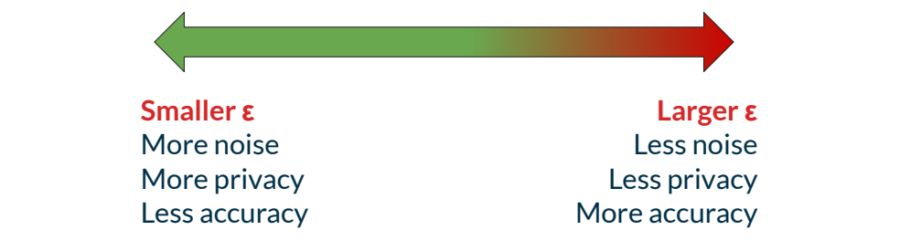
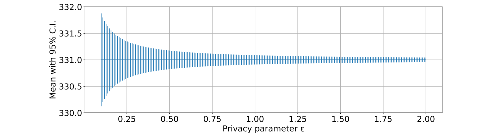
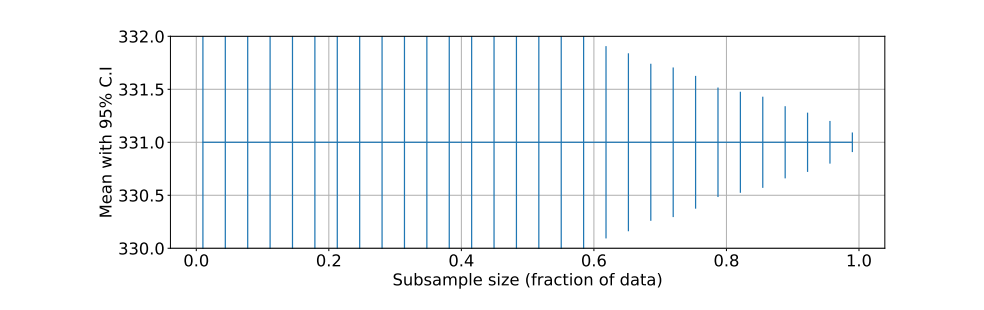
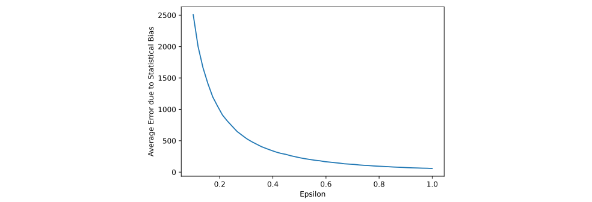
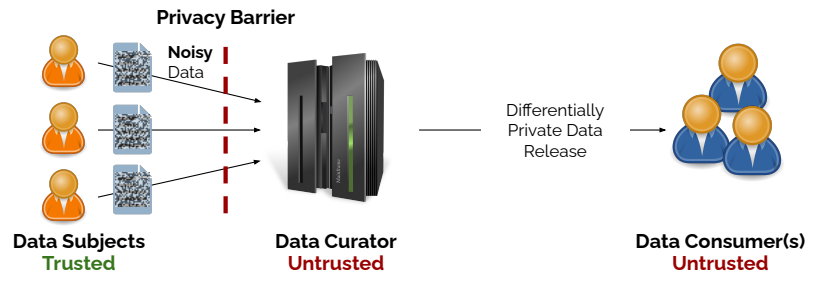

NIST SP 800-226 日本語訳
英語タイトル : Guidelines for Evaluating Differential Privacy Guarantees日本語タイトル : 差分プライバシー保証の評価に関する指針
公開日 : 2025-03-06
原文URL : https://csrc.nist.gov/pubs/sp/800/226/final
翻訳編集 : 自動生成（有志による非公式の日本語訳）, 原文取得日 : 2026-09-27, 訳文 : 835 / 836 ブロック
[要約] SP 800-226 は、エンティティのデータがデータセットに含まれる場合のプライバシー損失を定量化する数学的枠組み、差分プライバシーの保証の評価を扱います。差分プライバシー保証の比較や監査、差分プライバシー・アルゴリズム、実装上の課題を整理し、実践で生じる「プライバシー上の危険」を差分プライバシーピラミッドの中で示します。事業責任者、プライバシー担当者、ソフトウェアエンジニア、データサイエンティストなどが、差分プライバシーの保証を理解、評価、比較できるよう支援することを目的とします。
NIST Special Publication 800
NIST Special Publication 800
NIST SP 800-226
NIST SP 800-226
Guidelines for Evaluating Differential
差分プライバシー保証の評価に関する
Privacy Guarantees
指針
Joseph P. Near David Darais Naomi Lefkovitz Gary S. Howarth
Joseph P. Near、David Darais、Naomi Lefkovitz、Gary S. Howarth
This publication is available free of charge from: https://doi.org/10.6028/NIST.SP.800‐226
本書は次のURLから無料で入手できます：https://doi.org/10.6028/NIST.SP.800‐226
［NIST のロゴ。公的な標章のため、この非公式サイトには掲載していません。原本 PDF を参照してください。］
NIST Special Publication 800
NIST Special Publication 800
NIST SP 800-226
NIST SP 800-226
Guidelines for Evaluating Differential
差分プライバシー保証の評価に関する
Privacy Guarantees
指針
Joseph P. Near University of Vermont
Joseph P. Near（バーモント大学）
David Darais Galois, Inc.
David Darais（Galois社）
Naomi Lefkovitz* Gary S. Howarth
Naomi Lefkovitz*、Gary S. Howarth
Applied Cybersecurity Division Information Technology Laboratory
応用サイバーセキュリティ部門、情報技術研究所
* Former NIST employee; all work for this publication was done while at NIST.
* 元NIST職員。本書のすべての作業はNIST在職中に行われました。
This publication is available free of charge from: https://doi.org/10.6028/NIST.SP.800‐226
本書は次のURLから無料で入手できる：https://doi.org/10.6028/NIST.SP.800‐226
March 2025
2025年3月
U.S. Department of Commerce Howard Lutnick, Secretary
米国商務省 長官 Howard Lutnick
National Institute of Standards and Technology
米国国立標準技術研究所
Craig Burkhardt, Acting NIST Director and Deputy Under Secretary of Commerce for Standards and Technology
Craig Burkhardt、NIST所長代理兼商務省標準技術担当副次官
Certain commercial equipment, instruments, or materials, commercial or non‐commercial, are identified in this paper in order to specify the experimental procedure adequately. Such identification does not imply recommendation or endorsement of any product or service by NIST, nor does it imply that the materials or equipment identified are necessarily the best available for the purpose.
本書では、実験手順を適切に特定するために、商用または非商用の特定の機器、器具または材料を明記している場合があります。そのような明記は、NISTによるいかなる製品またはサービスの推奨または承認を意味するものではなく、また明記した材料や機器がその目的に対して必ずしも最良であることを意味するものでもありません。
There may be references in this publication to other publications currently under development by NIST in accordance with its assigned statutory responsibilities. The information in this publication, including concepts and methodologies, may be used by federal agencies even before the completion of such companion publications. Thus, until each publication is completed, current requirements, guidelines, and procedures, where they exist, remain operative. For planning and transition purposes, federal agencies may wish to closely follow the development of these new publications by NIST.
本書では、NISTが割り当てられた法的責任に従って現在策定中の他の出版物を参照する場合があります。こうした関連出版物が完成する前でも、連邦機関は、本書に記載された情報（概念や方法論を含む）を利用できます。したがって、各出版物が完成するまで、現行の要件、ガイドライン、手順が存在する場合は、それらが引き続き有効です。計画と移行のため、連邦機関はNISTによる新しい出版物の策定状況を注意深く確認するとよいです。
Organizations are encouraged to review all draft publications during public comment periods and provide feedbacto NIST. Many NIST cybersecurity publications, other than the ones noted above, are available at https://csrc.nist.gov/publications.
組織には、パブリックコメント期間中にすべての草案出版物を確認し、NISTにフィードバックを提供することが推奨されます。上記で言及したものを除く多くのNISTサイバーセキュリティ出版物は、https://csrc.nist.gov/publications から入手できます。
NIST Technical Series Policies
NIST技術シリーズのポリシー
Copyright, Use, and Licensing Statements
著作権、使用およびライセンスに関する声明
NIST Technical Series Publication Identifier Syntax
NIST技術シリーズの出版物識別子の構文
Publication History Approved by the NIST Editorial Review Board on 2024‐10‐30
出版履歴 NIST編集審査委員会により2024年10月30日に承認
How to cite this NIST Technical Series Publication: Near JP, Darais D, Lefkovitz N, Howarth GS (2025) Guidelines for Evaluating Differential Privacy Guarantees. (National Institute of Standards and Technology, Gaithersburg, MD), NIST Special Publication (SP) NIST SP 800‐226. https://doi.org/10.6028/NIST.SP.800‐226
本NIST技術シリーズ出版物の引用方法：Near JP、Darais D、Lefkovitz N、Howarth GS（2025年）『差分プライバシー保証の評価に関する指針』。（米国国立標準技術研究所、メリーランド州ゲイサーズバーグ）、NIST Special Publication（SP）NIST SP 800‐226。https://doi.org/10.6028/NIST.SP.800‐226
Author ORCID iDs
著者のORCID iD
Joseph P. Near: 0000‐0003‐2314‐0287
Joseph P. Near: 0000‐0003‐2314‐0287
David Darais: 0000‐0002‐3203‐3742
David Darais: 0000‐0002‐3203‐3742
Gary S. Howarth: 0000‐0002‐3587‐0546
Gary S. Howarth: 0000‐0002‐3587‐0546
Contact Information Privacyeng@nist.gov
連絡先 Privacyeng@nist.gov
Additional Information Additional information about this publication is available at https://csrc.nist.gov/pubs/sp/800/226/final, including related content, potential updates, and document history.
追加情報 本書の追加情報（関連コンテンツ、今後の更新の可能性、文書履歴を含む）は、https://csrc.nist.gov/pubs/sp/800/226/final で入手できます。
All comments are subject to release under the Freedom of Information Act (FOIA).
すべてのコメントは、情報公開法（FOIA）に基づく公開の対象となります。
Abstract
概要
This publication describes differential privacy — a mathematical framework that quantifies privacy loss to entities when their data appears in a dataset. The primary goal of this publication is to help practitioners of all backgrounds better understand how to think about differentially private software solutions. Multiple factors for consideration are identified in a differential privacy pyramid along with several privacy hazards, which are common pitfalls that arise as the mathematical framework of differential privacy is realized in practice.
本刊行物は、差分プライバシーについて説明します。差分プライバシーとは、エンティティのデータがデータセットに含まれる場合に、そのエンティティが被るプライバシー損失を定量化する数学的枠組みです。本刊行物の主な目的は、あらゆる背景を持つ実務者が、差分プライバシーを実装したソフトウェアソリューションをどのように考えるべきかをより深く理解できるよう支援することです。差分プライバシーの数学的枠組みを実際に実現する際に生じる一般的な落とし穴である複数の「プライバシー上の危険」とともに、検討すべき複数の要因を、差分プライバシーピラミッドの中で特定します。
Keywords
キーワード
anonymization; data analytics; data privacy; de‐identification; differential privacy; privacy; privacy‐enhancing technologies.
匿名化；データ分析；データプライバシー；非識別化；差分プライバシー；プライバシー；プライバシー強化技術。
Reports on Computer Systems Technology
コンピュータシステム技術に関する報告書
The Information Technology Laboratory (ITL) at the National Institute of Standards and Technology (NIST) promotes the U.S. economy and public welfare by providing technical leadership for the Nation’s measurement and standards infrastructure. ITL develops tests, test methods, reference data, proof of concept implementations, and technical analyses to advance the development and productive use of information technology. ITL’s responsibilities include the development of management, administrative, technical, and physical standards and guidelines for the cost‐effective security and privacy of other than national security‐related information in federal information systems. The Special Publication 800‐series reports on ITL’s research, guidelines, and outreach efforts in information system security, and its collaborative activities with industry, government, and academic organizations.
米国国立標準技術研究所（NIST）の情報技術研究所（ITL）は、国の計測・標準インフラに対する技術的リーダーシップを提供することにより、米国経済と公共の福祉を促進しています。ITLは、情報技術の開発と生産的な利用を推進するため、テスト、テスト方法、参照データ、概念実証の実装、技術分析を開発しています。ITLの責務には、連邦情報システムにおける国家安全保障関連以外の情報について、費用対効果の高いセキュリティとプライバシーを実現するための、管理面、運用面、技術面、物理面の標準およびガイドラインの策定が含まれます。特別刊行物800シリーズは、ITLによる情報システムセキュリティに関する研究、ガイドライン、普及活動、および産業界、政府、学術機関との協働活動を報告するものです。
Supplemental Content
補足コンテンツ
This publication comes with a companion package of Python Jupyter notebooks that illustrate some of the concepts described in the publication, including how to achieve differential privacy, situations where certain differentially private algorithms could magnify bias, and utility analysis of differentially private algorithms. Supplemental content for this publication can be found at https://github.com/usnistgov/PrivacyEngCollabSpace/tree/master/tools/de‐identification/NIST‐SP‐800‐226‐SupplementalMaterial/.
本刊行物には、本文で説明する概念の一部を示すPython Jupyterノートブックのコンパニオンパッケージが付属します。これには、差分プライバシーの実現方法、特定の差分プライバシーアルゴリズムがバイアスを増幅しうる状況、差分プライバシーアルゴリズムの有用性分析が含まれます。本刊行物の補足資料は https://github.com/usnistgov/PrivacyEngCollabSpace/tree/master/tools/de‐identification/NIST‐SP‐800‐226‐SupplementalMaterial/ で入手できます。
Patent Disclosure Notice
特許開示に関する通知
NOTICE: ITL has requested that holders of patent claims whose use may be required for compliance with the guidance or requirements of this publication disclose such patent claims to ITL. However, holders of patents are not obligated to respond to ITL calls for patents and ITL has not undertaken a patent search in order to identify which, if any, patents may apply to this publication.
通知：ITLは、本書のガイダンスまたは要件への準拠に使用が必要となる可能性のある特許請求項を保有する者に対し、その特許請求項をITLに開示するよう求めています。ただし、特許保有者は、特許の開示を求めるITLの要請に応じる義務を負いません。また、本書に適用される可能性のある特許を特定するための調査をITLが実施したわけではありません。
As of the date of publication and following call(s) for the identification of patent claims whose use may be required for compliance with the guidance or requirements of this publication, no such patent claims have been identified to ITL.
出版日時点で、本書のガイダンスまたは要件への準拠に使用が必要となる可能性のある特許請求項の特定を求める要請を行った結果、該当する特許請求項はITLに特定されていません。
No representation is made or implied by ITL that licenses are not required to avoid patent infringement in the use of this publication.
本書の使用による特許侵害を避けるためにライセンスが不要であると、ITLが表明または暗示するものではありません。
Table of Contents
目次
List of Tables
表一覧
List of Figures
図一覧
List of Appendices
付録一覧
Acknowledgments
謝辞
The authors thank Christine Task and Damien Desfontaines for providing feedback on early drafts of this publication, as well as Ryan McKenna, Xi He, Dan Kifer, Chike Abuah, Luís Brandão, Claire McKay Bowen, Nicolas Papernot and Abhradeep Thakurta for authoring content on the NIST Differential Privacy Blog Series,1 which informed this publication.
著者は、本書の初期草稿にフィードバックを寄せたChristine Task氏とDamien Desfontaines氏に感謝します。また、本書の内容の参考となったNIST差分プライバシーブログシリーズ（脚注1）に記事を執筆したRyan McKenna氏、Xi He氏、Dan Kifer氏、Chike Abuah氏、Luís Brandão氏、Claire McKay Bowen氏、Nicolas Papernot氏、Abhradeep Thakurta氏にも感謝します。
Executive Summary
エグゼクティブサマリー
Data analytics is an essential tool to help organizations make sense of the enormous vol‐ ume of data being generated by information technologies. Many organizations — in gov‐ ernment, industry, academia, or civil society — use data analytics to improve research, develop more effective services, combat fraud, and inform decision‐making to achieve mis‐ sion or business objectives. However, privacy risks can arise when the data being analyzed relates to or affects individuals, which may limit or prevent organizations from realizing the full potential of data analysis. Privacy‐Enhancing Technologies (PETs) can help mitigate privacy risks while enabling more uses of data.
データ分析は、情報技術によって生成される膨大なデータを組織が理解するための不可欠な手段です。政府、産業界、学術界、市民社会の多くの組織が、研究の改善、より効果的なサービスの開発、不正の防止、組織の使命や事業目標の達成に向けた意思決定の支援にデータ分析を利用しています。しかし、分析対象のデータが個人に関連する、または個人に影響する場合にはプライバシーリスクが生じ、組織がデータ分析の潜在力を十分に活用することが制限され、あるいは妨げられる可能性があります。プライバシー強化技術（PET）は、より多くのデータ利用を可能にしながら、プライバシーリスクを軽減するのに役立ちます。
This publication describes differential privacy — a PET that quantifies privacy risk to individ‐ uals when their data appears in a dataset. Differential privacy was first defined in 2006 as a theoretical framework and is still making the transition from theory to practice. This pub‐ lication is intended to help those who need to manage the risks of data analytics and data sharing — including business owners, product managers, privacy personnel, security per‐ sonnel, software engineers, data scientists, and academics — understand, evaluate, and compare differential privacy guarantees. In particular, this publication highlights privacy hazards that practitioners should consider carefully.
本書では、データセットに個人のデータが含まれる場合に、その個人のプライバシーリスクを定量化するPETである差分プライバシーについて説明します。差分プライバシーは2006年に理論的枠組みとして初めて定義され、現在も理論から実践への移行が続いています。本書は、事業責任者、製品マネージャー、プライバシー担当者、セキュリティ担当者、ソフトウェアエンジニア、データサイエンティスト、研究者など、データ分析とデータ共有のリスクを管理する必要がある人々が、差分プライバシーの保証を理解、評価、比較できるよう支援することを目的としています。特に、実務者が慎重に検討すべきプライバシー上の危険要因を取り上げます。
This publication is organized into four sections. Sec. 2 defines differential privacy, Sec. 3 describes techniques for achieving differential privacy and its properties, and Sec. 4 covers important related concerns for deployments of differential privacy. A supplemental, inter‐ active software archive is also included to increase understanding of differential privacy and techniques for achieving it.
本書は4つの節で構成されています。2節では差分プライバシーを定義し、3節では差分プライバシーを実現する手法とその特性を説明し、4節では差分プライバシーを展開する際に関係する重要事項を扱います。差分プライバシーとそれを実現する手法への理解を深めるため、補足として対話型ソフトウェアアーカイブも含まれています。
The Differential Privacy Guarantee (Sec. 2)
差分プライバシーの保証（2節）
Differential privacy promises that a reduction in privacy caused by a data analysis or pub‐ lished dataset will be bounded for all individuals about whom data are found in the dataset. In other words, any privacy reduction to an individual that results from a differentially pri‐ vate analysis could have happened even if the individual had not contributed their data. This section introduces differential privacy, describes its properties, explains how to reason about and compare differential privacy guarantees, describes how the differential privacy guarantee can impact real‐world outcomes, and highlights potential hazards in defining and evaluating these guarantees.
差分プライバシーは、データセットにデータが含まれるすべての個人について、データ分析や公開データセットによるプライバシー低下が一定範囲内に収まることを保証します。言い換えると、差分プライバシーを備えた分析によって個人のプライバシーが低下したとしても、その個人がデータを提供していなかった場合にも同じ低下が起こり得たことになります。本節では差分プライバシーを紹介し、その特性を説明し、差分プライバシー保証の考え方と比較方法を示し、保証が現実の結果に及ぼす影響を説明するとともに、保証の定義と評価における潜在的な危険要因を取り上げます。
Differentially Private Algorithms (Sec. 3)
差分プライバシーアルゴリズム（3節）
Differential privacy is generally achieved by adding random noise to analysis results. More noise yields better privacy but degrades the utility of the result. This privacy‐utility tradeoff can make it difficult to achieve both high utility and strong privacy protection. Statistical disclosure control techniques, where records or features are redacted based on their per‐ ceived identifiability, can sometimes also create or magnify systemic, human, or statistical bias in results—as is generally true for statistical disclosure control—so care must be taken to understand and mitigate these impacts.
差分プライバシーは一般に、分析結果にランダムノイズを加えて実現します。ノイズを増やすとプライバシー保護は強まるが、結果の有用性は低下します。このプライバシーと有用性のトレードオフにより、高い有用性と強いプライバシー保護の両立が難しくなることがあります。レコードや特徴量を識別可能性の認識に基づいて削除する統計的開示制御の手法も、統計的開示制御一般に言えることだが、結果にシステム上、人間による、または統計的なバイアスを生み出したり増幅したりする場合があります。そのため、こうした影響を理解し、軽減するよう注意しなければなりません。
This section describes algorithms for a wide range of data processing scenarios. Differen‐ tially private algorithms exist for analytics queries (e.g., counting, histograms, summation, and averages), regression tasks, machine learning tasks, synthetic data generation, and the analysis of unstructured data. Implementing differentially private algorithms requires significant expertise primarily due to a variety of factors which includes the use of random sampling. The randomized aspects of the algorithms can be difficult to get right and easy to get wrong, and—like implementing cryptography—it is best to use existing rigorously validated libraries when possible.
本節では、幅広いデータ処理のシナリオに対応するアルゴリズムを説明します。計数、ヒストグラム、合計、平均などの分析クエリ、回帰タスク、機械学習タスク、合成データ生成、非構造化データの分析に対応した差分プライバシーアルゴリズムがあります。差分プライバシーアルゴリズムの実装には、特にランダムサンプリングなどの要因があり、高度な専門知識が必要です。アルゴリズムのランダム化部分は正しく実装するのが難しく、誤りを犯しやすいため、暗号技術の実装と同様、可能な場合は既存の厳密に検証されたライブラリを使用するのが最善です。
Deploying Differential Privacy (Sec. 4)
差分プライバシーの展開（4節）
Differential privacy protects privacy of data subjects in the context of intentional differen‐ tially private data releases, but does not protect data as it is collected, stored, and analyzed in raw form. This section describes practical concerns about deploying differentially private analysis techniques, including the trust model, which describes potential malicious parties and steps they might take; implementation challenges that can cause unexpected privacy failures; and additional security concerns and data collection exposure. For example, sen‐ sitive data must be stored securely with strong access control policies and mechanisms— following industry best practices—or not stored at all. A data breach that results in the unauthorized release of sensitive raw data records will nullify any differential privacy guar‐ antee that has been established for the leaked records; however the differential privacy guarantee will still hold for all records that were not leaked.
差分プライバシーは、意図的な差分プライバシーデータ公開の文脈ではデータ主体のプライバシーを保護するが、データの収集、保存、分析時に生の形式で扱われるデータを保護するものではありません。本節では、潜在的な悪意ある主体とその行動を説明する信頼モデル、予期しないプライバシー上の失敗を招く実装上の課題、さらにセキュリティ上の懸念とデータ収集時の露出を含む、差分プライバシー分析手法を展開する際の実務的な懸念事項を説明します。たとえば、機密データは、業界のベストプラクティスに従い、強力なアクセス制御ポリシーとメカニズムのもとで安全に保存するか、まったく保存しないかのいずれかでなければなりません。機密な生データレコードが不正に公開されるデータ侵害が起きると、漏えいしたレコードについて確立されていた差分プライバシー保証は無効になります。ただし、漏えいしなかったすべてのレコードについては保証が引き続き成立します。
Toward Standardization, Certification, and Evaluation
標準化、認証、評価に向けて
This publication is intended to be a first step toward building standards for differential privacy guarantees to ensure that deployments of differential privacy provide robust real‐ world privacy protections. In particular, a standard for differential privacy guarantees should prescribe a methodology for setting parameters that addresses all of the privacy hazards described in this publication, and that also balances the strength of privacy guar‐ antees against the anticipated benefits of publishing the data. Such a standard would allow for the construction of tools to evaluate differential privacy guarantees and the systems that provide them as well as the certification of systems that conform with the standard. The certification of differential privacy guarantees is particularly important given the chal‐ lenge of communicating these guarantees to non‐experts. A thorough certification process would provide non‐experts with an important signal that a particular system will provide robust guarantees without requiring them to understand the details of those guarantees.
本書は、差分プライバシーを展開したシステムが現実世界で堅牢なプライバシー保護を提供できるよう、差分プライバシー保証の標準策定に向けた第一歩となることを目的としています。特に、差分プライバシー保証の標準では、本書で説明するすべてのプライバシー上の危険要因に対処し、データ公開によって期待される便益とプライバシー保証の強度とのバランスも取る、パラメーター設定の方法を規定すべきです。このような標準があれば、差分プライバシー保証や、それを提供するシステムを評価するツールの構築に加え、標準に適合するシステムの認証も可能になります。差分プライバシー保証を専門家以外に伝えることの難しさを考えると、その認証は特に重要です。徹底した認証プロセスによって、専門家以外にも、保証の詳細を理解しなくても特定のシステムが堅牢な保証を提供するという重要な判断材料を示せます。
Differential Privacy and Policy
差分プライバシーと政策
Since differential privacy is the only rigorous mathematical definition of privacy at this time, it is likely to play an important role in the release of official statistics. This document is not intended to provide guidance to U.S. federal (and other government) agencies on navigating differential privacy’s interactions with law, regulation, and policy. U.S. federal agencies, especially statistical agencies, have important responsibilities to release accurate information with potentially differing definitions of accuracy.
現時点で、厳密な数学的なプライバシーの定義は差分プライバシーのみであるため、公式統計の公開において重要な役割を果たす可能性があります。本書は、差分プライバシーと法律、規制、政策との相互作用について、米国連邦機関（その他の政府機関を含む）に指針を示すことを目的としていません。米国連邦機関、特に統計機関には、異なりうる正確性の定義のもとで、正確な情報を公開する重要な責任があります。
1. Introduction
1. はじめに
Data analytics is an essential tool to help organizations make sense of the enormous vol‐ ume of data being generated by information technologies. Many entities in government, industry, academia, or civil society use data analytics to improve research, develop more effective services, combat fraud, and inform decision‐making to achieve mission or busi‐ ness objectives. However, when the data being analyzed relates to or affects individuals, privacy risks can arise. These privacy risks can limit or prevent entities from realizing the full potential of data. Privacy Enhancing Technologies (PETs) can help mitigate privacy risks while enabling more uses of data.
データ分析は、情報技術によって生成される膨大なデータを組織が理解するための不可欠な手段です。政府、産業界、学術界、市民社会の多くの組織が、研究の改善、より効果的なサービスの開発、不正の防止、組織の使命や事業目標の達成に向けた意思決定の支援にデータ分析を利用しています。しかし、分析対象のデータが個人に関連する、または個人に影響する場合、プライバシーリスクが生じます。こうしたリスクにより、組織がデータの潜在力を十分に活用できなくなることがあります。プライバシー強化技術（PET）は、データをより広く利用できるようにしながら、プライバシーリスクの軽減に役立ちます。
This publication discusses differential privacy—a PET that quantifies privacy loss to entities when their data appears in a dataset. Differential privacy was first defined in 2006 as a theoretical framework. In recent years, it has been successfully deployed in production systems by large technology corporations, and the U.S. Census Bureau, for which the merits of differential privacy are well documented [1]. However, differential privacy is still in the process of making the transition from theory to practice. Although production systems exist that drive large‐scale deployments, the software ecosystem for differential privacy is still in its infancy. This makes it challenging for practitioners who do not specialize in PETs to deploy it easily.
本書では、データセットに個人のデータが含まれる場合のプライバシー損失を定量化するPETである差分プライバシーについて説明します。差分プライバシーは2006年に理論的枠組みとして初めて定義されました。近年では、大手テクノロジー企業や米国国勢調査局の本番システムに成功裏に導入され、その利点は十分に文書化されています[1]。しかし、差分プライバシーは今なお理論から実践への移行途上にあります。大規模展開を支える本番システムは存在するが、差分プライバシーのソフトウェアエコシステムはまだ初期段階です。そのため、PETを専門としない実務者が差分プライバシーを容易に展開するのは困難です。
New software tools for differential privacy have emerged to make deploying differentially private systems easier. However, to use these tools effectively, practitioners must under‐ stand how to interpret properly the mathematical properties of differential privacy in use by understanding how underlying assumptions translate to real world privacy harms.
差分プライバシー用の新しいソフトウェアツールが登場し、差分プライバシーを備えたシステムの展開が容易になっています。ただし、これらのツールを効果的に使うには、基礎となる前提が現実世界のプライバシー被害にどのようにつながるかを理解し、差分プライバシーの数学的特性を適切に解釈する必要があります。
The primary goal of this publication is to help those who need to manage the risks of data analytics and data sharing—including business owners, product managers, privacy and se‐ curity personnel, software engineers, data scientists, and academics—better understand how to think about differentially private software solutions.
本書の主な目的は、事業責任者、製品マネージャー、プライバシー・セキュリティ担当者、ソフトウェアエンジニア、データサイエンティスト、研究者など、データ分析とデータ共有のリスクを管理する必要がある人々が、差分プライバシーを備えたソフトウェアソリューションについてより深く理解できるよう支援することです。
This publication identifies common pitfalls that arise as the framework of differential pri‐ vacy is realized in practice. While some technical details are discussed to give appropriate context for these hazards, dense mathematical formulas are isolated to figures. An inter‐ active software archive is referenced to supplement understanding on how differential privacy works, its guarantees, and its trade‐offs.
本書では、差分プライバシーの枠組みを実際に実現する際によく生じる落とし穴を特定します。こうした危険要因を理解するための適切な背景情報として技術的詳細を扱う一方、複雑な数式は図にまとめて示しています。差分プライバシーの仕組み、その保証、トレードオフへの理解を補うため、対話型ソフトウェアアーカイブも参照しています。
Differential privacy has a precise mathematical definition. However, in practice, a differen‐ tial privacy guarantee relies on multiple other factors. These factors are identified in the differential privacy pyramid shown in Fig. 1. The ability for each component of the pyra‐ mid to protect privacy depends on the components below it, and each is vital to achieving a meaningful privacy guarantee for end users. Evaluating any claim to differential privacy protection requires examining every component of the pyramid. As a further aid towards evaluating claims about differential privacy protections, flowcharts are provided in each section that summarize the high level risk profiles associated with various design choices.
差分プライバシーには厳密な数学的定義があります。しかし、実際の差分プライバシー保証は、複数の他の要素にも依存します。これらの要素を図1に示す差分プライバシーのピラミッドにまとめています。ピラミッドの各構成要素がプライバシーを保護できるかどうかは、その下位の構成要素に依存し、いずれもエンドユーザーにとって意味のある保証を実現するうえで不可欠です。差分プライバシーによる保護を主張する場合は、ピラミッドのすべての構成要素を検討する必要があります。さらに、差分プライバシー保護に関する主張の評価を支援するため、各節ではさまざまな設計上の選択肢に伴う大まかなリスクプロファイルを要約したフローチャートを示しています。
![Fig. 1. Components of a differential privacy guarantee. A pyramid of stacked layers, alternating dark blue and yellow, read from top to bottom: the apex labeled ε; Unit of Privacy; Utility and Bias side by side; Algorithms & Correctness; Query Model and Trust Model side by side; Side Channels, Security and Access Control side by side; and the base, Data Collection Exposure. Dashed horizontal lines divide the pyramid into three parts, labeled on the right: Section 2 (ε and Unit of Privacy), Section 3 (Utility, Bias, and Algorithms & Correctness), and Section 4 (Query Model, Trust Model, Side Channels, Security, Access Control, and Data Collection Exposure).](assets/226/p0015-figure-15.png)
図1. 差分プライバシー保証の構成要素。濃紺と黄色が交互に重なる層のピラミッドで、上から順に、頂点の ε、プライバシーの単位、左右に並ぶ有用性とバイアス、アルゴリズムと正確性、左右に並ぶクエリモデルと信頼モデル、左右に並ぶサイドチャネルとセキュリティおよびアクセス制御、底辺のデータ収集時の露出である。破線の横線がピラミッドを3つに分け、右側には、Section 2（ε とプライバシーの単位）、Section 3（有用性、バイアス、アルゴリズムと正確性）、Section 4（クエリモデル、信頼モデル、サイドチャネル、セキュリティ、アクセス制御、データ収集時の露出）と記されている。
Fig. 1. Components of a differential privacy guarantee
図1. 差分プライバシー保証の構成要素
This rest of this publication is organized into three sections:
本書の残りの部分は、次の3節で構成されています。
•Sec. 2 discusses the top part of the pyramid: privacy parameters—including \(\varepsilon\)—and the unit of privacy, which together are the most direct measure of the strength of a differential privacy guarantee.
•2節では、ピラミッドの上部、すなわち\(\varepsilon\)を含むプライバシーパラメーターとプライバシーの単位を扱います。これらを組み合わせたものが、差分プライバシー保証の強度を最も直接的に表す尺度です。
•Sec. 3 discusses the middle part of the pyramid: algorithms and correctness, how to measure utility, and the ways in which algorithms can introduce bias.
•3節では、ピラミッドの中部にあたるアルゴリズムと正確性、有用性の測定方法、およびアルゴリズムによってバイアスが生じる仕組みを扱います。
•Sec. 4 discusses the bottom part of the pyramid: access control, trust models, side channels, and data collection, each of which is important for contextualizing a differential privacy guarantee. This section also describes emerging methods for combining differential privacy with other privacy-enhancing technologies to build systems that provide comprehensive privacy protections.
•第4章では、ピラミッドの下部を扱います。すなわち、アクセス制御、信頼モデル、サイドチャネル、およびデータ収集であり、いずれも差分プライバシー保証を文脈の中に位置付けるうえで重要です。この章では、差分プライバシーを他のプライバシー強化技術と組み合わせ、包括的なプライバシー保護を提供するシステムを構築するための新たな手法についても説明します。
This publication will help readers understand, compare, and evaluate differential privacy guarantees, and understand the ideas and tradeoffs behind some common approaches and system architectures for achieving differential privacy.
本書は、読者が差分プライバシー保証を理解、比較、評価し、差分プライバシーを実現するための一般的なアプローチやシステムアーキテクチャの背後にある考え方とトレードオフを理解する助けとなります。
The pyramid and accompanying evaluation processes are not designed for setting the parameters of a differential privacy guarantee, though they can support it. Planning a differentially private data release or designing a differentially private system requires eliciting requirements from various stakeholders—for privacy, utility, usability, trust models, and more—then setting the parameters of the differential privacy guarantee to meet these requirements. Since differential privacy involves tradeoffs between the elements of the guarantee, it is often impossible to meet all of the requirements simultaneously, so arriving at a final design requires iterative negotiation involving all of the stakeholders.
このピラミッドとそれに付随する評価プロセスは、差分プライバシー保証のパラメータを設定するために設計されたものではないが、その作業を支援することはできます。差分プライバシーを適用したデータ公開を計画したり、差分プライバシーを備えたシステムを設計したりするには、プライバシー、有用性、使いやすさ、信頼モデルなどに関する要件をさまざまな利害関係者から引き出し、それらの要件を満たすように差分プライバシー保証のパラメータを設定する必要があります。差分プライバシーには保証の要素間のトレードオフが伴うため、すべての要件を同時に満たすことは多くの場合不可能であり、最終的な設計に到達するには、すべての利害関係者が関与する反復的な調整が必要となります。
Target Audience
対象読者
This publication is primarily intended for those who need to manage the risks of data analytics and data sharing—including business owners, product managers, software engineers, data scientists, and academics. Much of the content is designed for practitioners with technical background in the design and deployment of data‐processing systems, and requires a working knowledge of concepts from data science, probability, statistics, and computer science. The parts of this publication that may be helpful for less technical audiences include the privacy pyramid, flowcharts, and privacy hazards which can support decision makers in navigating the tradeoffs of deploying differential privacy solutions.
本書は主として、データ分析およびデータ共有のリスクを管理する必要がある者を対象としています。これには、事業オーナー、プロダクトマネージャー、ソフトウェアエンジニア、データサイエンティスト、研究者が含まれます。内容の多くは、データ処理システムの設計と展開に関する技術的素養を持つ実務者向けであり、データサイエンス、確率、統計、計算機科学の概念に関する実務的な知識を必要とします。技術的な素養がそれほどない読者にも役立つ可能性がある部分としては、プライバシーピラミッド、フローチャート、プライバシーハザードがあり、これらは差分プライバシーのソリューションを展開する際のトレードオフについて意思決定者が判断する助けとなります。
1.1. De-Identification and Re-Identification
1.1. 非識別化と再識別
The most common attempt to ensure that an analysis is privacy‐preserving is to perform it on de‐identified data. In this publication, de‐identified data refers to data from which identifying information has been removed. Identifying information is information that could be used to identify directly a specific individual, such as a name, address, phone number, or identification number. This approach is sometimes called anonymization but is distinct from the definition of anonymization used in the European Union’s General Data Protection Regulation (GDPR), Recital 26 [2].2 NIST SP800‐188 [3] provides guidance on performing effective de‐identification.
分析がプライバシーを保護するものであることを確保するために最も一般的に試みられるのは、非識別化されたデータに対して分析を行うことです。本書において、非識別化されたデータとは、識別情報が除去されたデータをいいます。識別情報とは、氏名、住所、電話番号、識別番号など、特定の個人を直接識別するために使用されうる情報です。このアプローチは匿名化と呼ばれることもあるが、欧州連合の一般データ保護規則（GDPR）前文第26項 [2] で用いられている匿名化の定義とは異なります。2 NIST SP800‐188 [3] は、効果的な非識別化を行うためのガイダンスを提供しています。
Unfortunately, de‐identifying data is challenging in practice because it is difficult to distinguish identifying information from non‐identifying information. Every person has a unique combination of features. Any one feature (e.g., gender or age) my not be uniquely identifying on its own, but as features accumulate they inevitably become uniquely identifying in combination. As a result, de‐identified data nearly always contains some information that could be identifying. For decades, it was considered prohibitively challenging to recover enough information from properly de‐identified data to seriously compromise an individual’s privacy [4]. However, the increasing availability of large amounts of data has led to the development of more powerful privacy attacks that disprove this assumption.
残念ながら、識別情報と非識別情報を区別することは難しいため、データの非識別化は実際には困難です。すべての人は固有の特徴の組合せを持っています。どの特徴も（例えば性別や年齢）単独では個人を一意に識別しないかもしれないが、特徴が積み重なるにつれて、その組合せは必然的に個人を一意に識別するものとなります。その結果、非識別化されたデータには、ほぼ常に識別につながりうる何らかの情報が含まれます。何十年もの間、適切に非識別化されたデータから個人のプライバシーを深刻に侵害するのに十分な情報を復元することは、きわめて困難であると考えられていました [4]。しかし、大量のデータがますます入手しやすくなったことで、より強力なプライバシー攻撃が開発され、この前提は覆されました。
In 1997, researchers used a combination of gender, zip code, and birth date from publicly available voter registration data to re‐identify individuals in a de‐identified database of medical records, including Massachusetts Governor William Weld [5]. While Massachusetts stopped releasing de‐identified medical records after that, researchers found that 87% of the United States population can be uniquely identified by the three elements mentioned above (gender, zip code, and birth date).3
1997年、研究者らは、公開されている有権者登録データに含まれる性別、郵便番号、生年月日の組合せを用いて、非識別化された医療記録データベース内の個人を再識別しました。その中にはマサチューセッツ州知事William Weldも含まれていました [5]。その後マサチューセッツ州は非識別化された医療記録の公開を停止したが、研究者らは、米国の人口の87%が上記の3つの要素（性別、郵便番号、生年月日）によって一意に識別できることを明らかにしました。3
The technique used by these researchers is an example of a linking attack: an approach for exposing information specific to individuals in a de‐identified dataset by matching records with a second dataset (often called the auxiliary data). Since the feasibility of a linking attack relies on the availability of good auxiliary data, the historical lack of suitable data was one basis for the belief that de‐identified datasets preserve privacy. Today, however, more data are available than ever before, and linking attacks have been used to re‐identify individuals in many different settings [6]. Differentially private analyses are distinct from de‐identification, and they provide protection against all potential attacks, including those that make use of auxiliary data.
これらの研究者が用いた手法は、リンキング攻撃の一例です。リンキング攻撃とは、非識別化されたデータセットのレコードを第2のデータセット（しばしば補助データと呼ばれる）と照合することによって、個人に固有の情報を暴露する手法です。リンキング攻撃が実行可能かどうかは良質な補助データが入手できるかどうかに依存するため、適切なデータが歴史的に不足していたことが、非識別化されたデータセットはプライバシーを保護するという考えの根拠の1つとなっていました。しかし今日では、かつてないほど多くのデータが入手可能であり、リンキング攻撃はさまざまな状況で個人の再識別に用いられてきました [6]。差分プライバシーを適用した分析は非識別化とは異なり、補助データを利用する攻撃を含め、考えうるあらゆる攻撃に対する保護を提供します。
Ad hoc de‐identification approaches typically transform each data point by redacting in‐ formation considered identifying. The previous section explained why this approach is vulnerable to linking attacks. This raises a natural question: what if the data are not sim‐ ply redacted at the level of each individual data point, but instead, it is aggregated before publication?
場当たり的な非識別化の手法では通常、識別情報とみなされる内容を削除して各データ点を変換します。前節で説明したように、この方法はリンキング攻撃に対して脆弱です。ここで、各データ点の段階で単純に削除するのではなく、データを集計してから公開すればよいのではないかという疑問が生じます。
Unfortunately, even aggregate statistics can inadvertently leak information from individual data points, and result in privacy risk. For example, reconstruction attacks use statistics to reconstruct original data points. There are mathematical results that show that publishing enough statistics will always result in accurate reconstruction attacks [7], as well as practi‐ cal examples of such attacks being performed successfully on real statistical releases [8].
残念ながら、集計統計であっても、個々のデータ点の情報を意図せず漏らし、プライバシーリスクを生じさせる場合があります。たとえば、再構成攻撃は統計値を使って元のデータ点を復元します。十分な数の統計値を公開すると、常に正確な再構成攻撃が可能になることを示す数学的結果があります[7]。また、実際の統計の公開に対してこのような攻撃が成功した事例もあります[8]。
1.2. Unique Elements of Differential Privacy
1.2. 差分プライバシー固有の要素
Differential privacy is a mathematical framework to define what privacy means—that is, an attempt to model privacy with math. There are many different techniques for increasing privacy, called mechanisms. These mechanisms satisfy particular mathematical conditions, as will be discussed in future sections. Differential privacy’s status as a definition (rather than a process or technique) represents one major difference compared to techniques like de‐identification. With differential privacy, one can bound the amount of information that can be learned about any individual in the data. Non‐differentially private data releases are unable to bound privacy risks.
差分プライバシーは、プライバシーの意味を数学で表現しようとする数学的枠組みです。プライバシーを高める手法は数多くあり、それらはメカニズムと呼ばれます。こうしたメカニズムは、後の節で説明する特定の数学的条件を満たします。差分プライバシーはプロセスや手法ではなく定義であるという点が、非識別化などの技術との大きな違いの一つです。差分プライバシーを使えば、データに含まれる各個人について学習され得る情報量に上限を設けられます。差分プライバシーを備えないデータ公開では、プライバシーリスクに上限を設定できません。
Perhaps more importantly, differential privacy has important advantages over previous pri‐ vacy techniques—including de‐identification—that address many of the privacy challenges described earlier in this section. Key advantages include that differential privacy is a rigor‐ ous and precise mathematical definition of privacy, that differentially private releases are resistant to all (even not yet developed) privacy attacks, and that privacy protection via dif‐ ferentially privacy composes across multiple data releases. These advantages, discussed at length below, are the primary reasons why a practitioner might choose a differential privacy framework over some other data privacy technique. Since differential privacy is rather new, robust tools, standards, and best‐practices are not easily accessible outside of academic research communities.
さらに重要なことに、差分プライバシーには、非識別化を含む従来のプライバシー技術に対する重要な利点があり、本節の前半で説明した多くの課題に対処できます。主な利点は、差分プライバシーが厳密で精確な数学的プライバシー定義であること、差分プライバシーを備えた公開が、まだ開発されていない攻撃を含むあらゆるプライバシー攻撃に耐性があること、差分プライバシーによる保護が複数回のデータ公開を通じて合成されることです。以下で詳しく述べるこれらの利点が、実務者が他のデータプライバシー技術より差分プライバシーの枠組みを選ぶ主な理由です。差分プライバシーは比較的新しいため、堅牢なツール、標準、ベストプラクティスは、学術研究コミュニティの外では容易に利用できません。
Differential privacy was designed by cryptographers; there are parallels between differ‐ ential privacy and cryptography both in their mathematical definitions and in their paths towards broader application and standardization. Like differential privacy, formal cryptog‐ raphy began as a theoretical idea with many open questions around practical applications. Over time, these open questions were answered, and today cryptography is standardized and widely adopted. There is every reason to believe that differential privacy will follow a similar path.
差分プライバシーは暗号研究者が設計しました。数学的定義と、広範な応用および標準化に至る過程の両方で、差分プライバシーと暗号技術には類似点があります。差分プライバシーと同様、形式暗号も理論的な考え方として始まり、実用化に関する未解決の課題が数多くありました。時間の経過とともにこうした課題は解決され、現在では暗号技術は標準化され、広く採用されています。差分プライバシーも同じ道をたどると考える十分な理由があります。
The following sections define terms that use the differential privacy framework and their implications on privacy in the real world, give an overview of techniques for satisfying these definitions, and discuss deployment challenges and approaches for addressing them.
以下の節では、差分プライバシーの枠組みを使う用語と、それらが現実世界のプライバシーに及ぼす影響を定義し、定義を満たす手法の概要を示し、展開上の課題と対処方法を説明します。
1.3. Differential Privacy and the U.S. Federal Regulatory Landscape
1.3. 差分プライバシーと米国連邦規制の枠組み
U.S. federal agencies are governed by various laws, regulations and policies, with each agency having its own specific considerations and obligations. For example, U.S. federal agencies are required to review the quality (including the objectivity, utility, and integrity) of information before it is disseminated to the public under Information Quality Act guide‐ lines.4 Trust regulation issued by OMB that instructs recognized statistical agencies and units (three of which are in DOC) may only release accurate data.5 Implementation of differential privacy in the context of certain technologies (e.g., machine learning or other forms of artificial intelligence) may also present specific requirements.6 We encourage readers interested in the release of private official statistics to examine NIST SP 800‐188 De‐Identifying Government Data Sets, and the UN Guide on Privacy‐Enhancing Technolo‐ gies for Official Statistics. The development of guidelines on how U.S. federal agencies should meet legal, regulatory, and policy requirements is out of scope for this document.
米国連邦機関はさまざまな法律、規制、政策に従っており、機関ごとに固有の考慮事項と義務があります。たとえば、米国連邦機関は、情報品質法の指針に基づき、情報を一般公開する前にその品質（客観性、有用性、完全性を含む）を確認する必要があります。4 OMBが発行する信頼性規制は、認定された統計機関および部門に正確なデータのみを公開するよう指示しており、そのうち3機関は商務省（DOC）に属しています。5機械学習やその他の人工知能など、特定の技術に差分プライバシーを実装する際にも、固有の要件が適用される場合があります。6プライバシー保護された公式統計の公開に関心がある読者は、NIST SP 800-188『政府データセットの非識別化』および国連の『公式統計のためのプライバシー強化技術ガイド』を確認することを推奨します。米国連邦機関が法律、規制、政策上の要件をどのように満たすべきかに関する指針の策定は、本書の対象範囲外です。
2. The Differential Privacy Guarantee
2. 差分プライバシーの保証
This section introduces differential privacy, describes its properties, and explains how to reason about and compare differential privacy guarantees. It focuses on how the specifics of the differential privacy guarantee can impact real‐world outcomes and highlights potential hazards in defining and evaluating these guarantees. Specifically:
この章では、差分プライバシーを紹介し、その性質を説明するとともに、差分プライバシー保証をどのように推論し比較するかを説明します。差分プライバシー保証の具体的な内容が現実世界の結果にどのような影響を及ぼしうるかに焦点を当て、これらの保証を定義し評価する際の潜在的なハザードを強調します。具体的には次のとおりです。
•Sec. 2.1 defines differential privacy and describes how to interpret its formal definition in real‐world terms.
•2.1節では、差分プライバシーを定義し、その形式的定義を現実世界の観点からどのように解釈するかを説明します。
•Sec. 2.2 introduces privacy parameters, which are one key factor in controlling the strength of the privacy guarantee.
•2.2節では、プライバシー保証の強度を制御する重要な要素の一つであるプライバシーパラメーターを紹介します。
•Sec. 2.3 describes several commonly used variants of the differential privacy definition.
•2.3節では、差分プライバシーの定義について一般的に用いられるいくつかの変種を説明します。
•Sec. 2.4 describes the unit of privacy, which is the other key factor in controlling the strength of the privacy guarantee.
•2.4節では、プライバシー保証の強度を制御するもう一つの重要な要素である、プライバシーの単位を説明します。
•Sec. 2.5 describes how to compare different privacy guarantees to each other, including the hazards of these comparisons.
•2.5節では、異なるプライバシー保証どうしを比較する方法を、その比較に伴うハザードも含めて説明します。
•Sec. 2.6 examines the impact of mixing differential privacy with other kinds of privacy protection.
•2.6節では、差分プライバシーを他の種類のプライバシー保護と組み合わせることの影響を検討します。
2.1. The Promise of Differential Privacy
2.1. 差分プライバシーが約束するもの
Differential privacy frameworks provide mathematical definitions of what it means to have privacy when an individual contributes data to a particular dataset. Informally, the math of differential privacy says the chance of any outcome is about the same, whether or not the individual contributes their data. This includes every possible outcome, including those that might be considered privacy reduction to an individual. Here, the word outcome denotes the result of the analysis itself. For example, if an individual bought a pumpkin spice latte last month from their favorite coffee stand, the outcome of analyzing that coffee stand’s sales data might be learning that 873 pumpkin spice lattes were sold last month. Differential privacy definitions say that the outcome of an analysis—in this case, overall pumpkin spice latte sales data—should be nearly the same with or without any single person’s data. The precise notion of “nearly” is governed by the privacy budget, which is discussed in detail below.
差分プライバシーのフレームワークは、個人が特定のデータセットにデータを提供する際にプライバシーが確保されているとはどういうことかについて、数学的な定義を与えます。非形式的に言えば、差分プライバシーの数学は、個人が自分のデータを提供するかどうかにかかわらず、どのような結果が生じる確率もほぼ同じであることを述べています。これには、個人にとってプライバシーの低下とみなされうる結果を含め、あらゆる可能な結果が含まれます。ここで「結果」という語は、分析そのものの結果を指します。例えば、ある個人が先月、お気に入りのコーヒースタンドでパンプキンスパイスラテを購入した場合、そのコーヒースタンドの販売データを分析した結果は、先月パンプキンスパイスラテが873杯売れたとわかることかもしれません。差分プライバシーの定義は、分析の結果（この場合はパンプキンスパイスラテの全体的な販売データ）が、いずれか1人のデータの有無にかかわらず、ほぼ同じになるべきであるとします。「ほぼ」の正確な意味はプライバシー予算によって規定されます。プライバシー予算については後で詳しく論じます。
Key Takeaway: Differential privacy promises that the chance of an outcome is about the same whether or not an individual contributes their data.
要点：差分プライバシーは、個人が自分のデータを提供するかどうかにかかわらず、ある結果が生じる確率がほぼ同じであることを約束します。
One way to view the promise of differential privacy is in terms of potential privacy harms that could be prevented, like those that can occur from re‐identification attacks.
差分プライバシーの約束を捉える1つの見方は、再識別攻撃によって生じうるもののような、防止可能な潜在的プライバシー被害の観点から捉えることです。
For example, imagine an insurance company wants to provide different rates to people with preexisting conditions. The company is financially incentivized to identify who has preexisting conditions through re‐identification attacks on datasets. Now imagine Gary has a preexisting condition that is expensive to treat. Gary takes a survey about his med‐ ical history and the survey results are published using a differentially private mechanism. The insurance company then tries to analyze the differentially private survey results to in‐ fer information about Gary’s preexisting condition. The differential privacy guarantee says that whatever the insurance company learns from the differentially private survey results will be similar with or without Gary’s participation in the survey. From the perspective of the insurance company trying to learn information about Gary, this has the effect of making it appear as if Gary never contributed his data in the first place, and renders the differentially private survey results useless for the purposes of trying to learn about Gary’s preexisting condition. The extent to which Gary’s participation in the survey can change dif‐ ferentially private survey results is governed by the privacy parameters (including privacy budget) used in the differentially private mechanism, as discussed in Sec. 2. However, the insurance company could still use other data sources that are not differentially private to violate Gary’s privacy and learn about his preexisting condition.
たとえば、ある保険会社が既往症のある人に異なる保険料を設定しようとしているとします。保険会社には、データセットに対する再識別攻撃によって誰が既往症を持つか特定する金銭的な動機があります。ここで、Garyには治療費の高い既往症があるとします。Garyは自身の病歴に関するアンケートに回答し、その結果は差分プライバシーメカニズムを用いて公開されます。次に、保険会社は公開されたアンケート結果を分析し、Garyの既往症に関する情報を推測しようとします。差分プライバシー保証によれば、差分プライバシーを備えたアンケート結果から保険会社が得る情報は、Garyがアンケートに参加した場合も参加しなかった場合も同様です。保険会社がGaryの情報を得ようとする観点では、あたかもGaryがそもそもデータを提供していないかのようになり、差分プライバシーを備えたアンケート結果は、Garyの既往症を知る目的では役に立ちません。Garyの参加によって差分プライバシーを備えたアンケート結果が変わり得る範囲は、2節で説明するように、そのメカニズムで使うプライバシーパラメーター（プライバシー予算を含む）によって決まります。ただし保険会社は、差分プライバシーを備えていない別のデータソースを使ってGaryのプライバシーを侵害し、既往症を知る可能性があります。
Another useful way to consider the promise is to imagine two hypothetical worlds:
この約束を考えるもう一つの方法として、次の2つの仮想世界を想像されました。
1. In the real world, \(X\) lives in a city, owns a smartphone, pays with a credit card, and uses social media.
1. 現実世界では、\(X\)は都市に住み、スマートフォンを持ち、クレジットカードで支払い、ソーシャルメディアを利用します。
2. In an off‐grid world, \(X\) lives in an off‐grid cabin and is self‐sufficient. No organization collects any data directly from \(X\).
2. オフグリッド世界では、\(X\)はオフグリッドの小屋に住み、自給自足しています。いかなる組織も\(X\)から直接データを収集しません。
The off‐grid world is designed to encode an informal notion of “perfect privacy.” Differ‐ ential privacy promises that the chance of an outcome will be about the same in both worlds, meaning that privacy reductions that occur in the real world could just as easily have occurred in the off‐grid world.
オフグリッド世界は、「完全なプライバシー」という非形式的な概念を表すために設定されています。差分プライバシーは、どちらの世界でも結果の発生確率がほぼ同じであることを約束します。つまり、現実世界で生じるプライバシー低下は、オフグリッド世界でも同じように生じ得たということです。
However, population‐level information can often allow one to infer information about in‐ dividuals. Differential privacy thus does not protect against inferences made about an indi‐ vidual as long as those inferences can be made without that individual’s data. For example, differentially private statistics might allow us to learn the following fact: most people have eyebrows. From this fact, we can infer that Joe probably has eyebrows. We can infer this information whether or not Joe lives in the real world or in off‐grid world. Differentially private releases prevent us from improving the accuracy of our inferences about any indi‐ vidual in the data while still enabling inferences about the population.
ただし、集団レベルの情報から個人について推測できることはよくあります。したがって、個人のデータがなくても導ける推測から、その個人を差分プライバシーが保護することはありません。たとえば、差分プライバシーを備えた統計から「ほとんどの人には眉毛がある」と分かる場合があります。この情報から、Joeにもおそらく眉毛があると推測できます。Joeが現実世界とオフグリッド世界のどちらに住んでいても、この推測は可能です。差分プライバシーによる公開は、集団について推論できる状態を保ちながら、データに含まれる特定の個人について推測の正確性を高めることを防ぎます。
Key Takeaway: Differential privacy does not necessarily prevent somebody from mak‐ ing inferences about an individual.
重要なポイント：差分プライバシーは、他者が個人について推論することを必ずしも防ぐものではありません。
Alignment with other definitions of privacy
他のプライバシー定義との整合性
It is helpful to demonstrate how the following examples of definitions do or do not align with differential privacy to illustrate the capability and the limits for differential privacy to meet specific privacy protection needs in practice.
以下のプライバシー定義の例が差分プライバシーと整合するかどうかを示すと、実務における特定のプライバシー保護ニーズに差分プライバシーが対応できる範囲と限界を明らかにできます。
The NIST Privacy Framework [9] characterizes privacy as a state that safeguards important values, such as human autonomy and dignity. Privacy risks arise from problematic data actions, which are actions taken on data that could cause an adverse effect for individ‐ uals.7 Differential privacy provides a strong defense against many of these problematic data actions, including common concerns like re‐identification. Methodologies like the Pri‐ vacy Framework can help contextualize the protection provided by differential privacy and assess whether that protection matches real‐world expectations.
NISTプライバシーフレームワーク[9]では、プライバシーを、人間の自律性や尊厳などの重要な価値を守る状態として捉えています。問題のあるデータ行為、すなわち個人に悪影響を及ぼし得るデータの取り扱いによって、プライバシーリスクが生じます。7差分プライバシーは、再識別などの一般的な懸念を含む多くの問題のあるデータ行為に対して強力な防御を提供します。プライバシーフレームワークなどの方法論は、差分プライバシーが提供する保護を状況に即して捉え、現実世界の期待に沿っているかを評価する助けになります。
Tore Dalenius, an influential survey statistician described inferential disclosure as the pos‐ sibility of learning a sensitive attribute with high but not total certainty [11]. This infor‐ mal notion has been used in statistical disclosure limitation (SDL) literature for decades. Differential privacy does not prevent inferences that can be made with population‐level information (like the example above), even though these count as inferential disclosures under the Dalenius definition.
影響力のある調査統計学者Tore Daleniusは、推論による開示を、機微な属性を完全な確実性には至らないものの高い確度で知る可能性と説明しました[11]。この非形式的な概念は、統計的開示制限（SDL）の文献で何十年にもわたって使われてきました。差分プライバシーは、集団レベルの情報から導ける推論（前述の例など）を防がないが、Daleniusの定義では、これも推論による開示に該当します。
More recent work has shown [12–14, 14] that it is impossible to prevent Dalenius’s inferen‐ tial disclosures while using statistics to gain scientific knowledge. This line of work rejects Dalenius’s definition, and proposes a new definition for inferential disclosure: access to privacy‐preserving statistics should not enable one to learn anything about an individual that could not be learned without that individual’s data. This definition of inferential dis‐ closure aligns perfectly with the promise of differential privacy.
比較的新しい研究[12–14, 14]では、統計を用いて科学的知見を得ながらDaleniusのいう推論による開示を防ぐことは不可能だと示されています。この一連の研究はDaleniusの定義を退け、推論による開示について新たな定義を提案しています。すなわち、プライバシー保護統計へのアクセスによって、その個人のデータがなくても知り得た情報を超えて、個人に関する情報を知ることが可能になってはならないという定義です。この推論による開示の定義は、差分プライバシーの約束と完全に一致します。
2.1.1. The Math of Differential Privacy
2.1.1. 差分プライバシーの数学
The original definition to use the differential privacy framework was pure \(\varepsilon\)-differential privacy [15]: Definition: Pure \(\varepsilon\)-differential privacy. Let \(\mathcal{M}\) be a randomized mechanism. \(\mathcal{M}\) satisfies \(\varepsilon\)-differential privacy if for all neighboring datasets \(D_1\) and \(D_2\) and all possible outcomes \(S\):
差分プライバシーの枠組みを用いる最初の定義は、純粋\(\varepsilon\)差分プライバシーでした[15]。定義：純粋\(\varepsilon\)差分プライバシー。\(\mathcal{M}\)をランダム化メカニズムとします。\(\mathcal{M}\)が\(\varepsilon\)差分プライバシーを満たすのは、すべての隣接データセット\(D_1\)と\(D_2\)、およびすべての可能な結果\(S\)について次が成り立つ場合である：
\(D_1\) and \(D_2\) are considered neighbors if they differ in the data of one individual.
\(D_1\)と\(D_2\)は、1人の個人のデータが異なる場合に隣接するとみなします。
The definition says that the ratio of two probabilities should be less than or equal to \(e^{\varepsilon}\), where \(\varepsilon\) is a number called the privacy parameter, the privacy loss or the privacy budget.
この定義は、2つの確率の比が\(e^{\varepsilon}\)以下であるべきことを述べています。ここで\(\varepsilon\)は、プライバシーパラメーター、プライバシー損失、またはプライバシー予算と呼ばれる数です。
One can think of the numerator as the chance that outcome \(S\) occurs in the real world (i.e., with \(X\)’s data) due to processing the data in some way (i.e., the mechanism \(M\)), while the denominator is the chance that the same outcome \(S\) occurs in an off-grid world (i.e., without \(X\)’s data). The definition is symmetric, so the two cases can be reversed. The ratio between the two probabilities should be close to 1 (i.e., \(\le e^{\varepsilon}\)) and encode the requirement that the chance of each outcome should be about the same in both cases.
分子は、結果\(S\)が現実世界（すなわち\(X\)のデータがある世界）で、データを何らかの方法（すなわちメカニズム\(M\)）で処理することにより生じる確率と考えることができます。一方、分母は、同じ結果\(S\)がオフグリッド世界（すなわち\(X\)のデータがない世界）で生じる確率です。この定義は対称なので、2つのケースは入れ替えられます。2つの確率の比は1に近い値（すなわち\(\le e^{\varepsilon}\)）であるべきであり、いずれの場合も各結果の確率がほぼ同じであるべきという要件を表します。
For example, consider a scenario in which 632 pumpkin spice lattes were sold in October. In order for this to satisfy differential privacy according to Definition 1, the probability that an analysis on dataset \(D_1\) returns the number 632 should be about the same as the probability that an analysis on \(D_2\) returns the same answer. This should also be true of every possible answer one could observe (i.e., every output of the analysis \(\mathcal{M}\), not just 632), and for every hypothetical choice of datasets \(D_1\) and \(D_2\).
たとえば、10月にパンプキンスパイスラテが632杯販売されたとします。これが定義1の差分プライバシーを満たすには、データセット\(D_1\)に対する分析が632という数を返す確率は、\(D_2\)に対する分析が同じ答えを返す確率とほぼ同じであるべきです。これは、観察されうるあらゆる答え（すなわち、632だけでなく分析\(\mathcal{M}\)のすべての出力）について、また仮想的なデータセット\(D_1\)と\(D_2\)のあらゆる選択についても成り立つべきです。
Definition 1 says that \(D_1\) and \(D_2\) must be neighboring datasets, which differ in one individual’s data. Thus, the difference between the real world and an off-grid world can be encapsulated in the availability or non-availability of one person’s data. Neighboring datasets can be defined using the unit of privacy that has major impacts on the real-world implications of the differential privacy definition. The unit of privacy is discussed in Sec. 2.4.
定義1は、\(D_1\)と\(D_2\)が、1人の個人のデータが異なる隣接データセットでなければならないと定めています。したがって、現実世界とオフグリッド世界の違いは、1人分のデータが利用可能かどうかで表せます。隣接データセットは、差分プライバシーの定義が現実世界で持つ意味に大きな影響を与えるプライバシーの単位を使って定義できます。プライバシーの単位は2.4節で説明します。
Key Takeaway: The differential privacy guarantee is defined by both the privacy parameters (e.g., \(\varepsilon\)) and the unit of privacy (i.e., the definition of neighboring datasets).
要点：差分プライバシー保証は、プライバシーパラメーター（例：\(\varepsilon\)）とプライバシーの単位（すなわち、隣接データセットの定義）の両方で定義されます。
2.1.2. Properties of Differential Privacy
2.1.2. 差分プライバシーの特性
The definition of differential privacy has intuitive appeal, but it also has some important properties that address many of the shortcomings of previous approaches to privacy.
差分プライバシーの定義には直感的な魅力があるが、従来のプライバシー手法の多くの欠点に対処する重要な特性も備えています。
1.Differential privacy treats all information as identifying information, eliminating the challenging and sometimes impossible task of accounting for all identifying elements of the data.
1.差分プライバシーでは、すべての情報を識別情報として扱うため、データ内の識別要素をすべて把握しなければならない、困難で時に不可能な作業が不要になります。
2.Differential privacy is resistant to privacy attacks based on auxiliary data, so it can effectively prevent the linking attacks that are possible on de‐identified data.
2.差分プライバシーは補助データを使ったプライバシー攻撃に耐性があるため、非識別化データで可能なリンキング攻撃を効果的に防止できます。
3.Differential privacy is compositional, meaning that the “total privacy reduction” of multiple data releases can be considered to ensure that it does not get too large over time.
3.差分プライバシーには合成可能性があり、複数回のデータ公開による「プライバシー低下の総量」を評価して、時間の経過とともに過度に大きくならないようにできます。
These properties are direct mathematical implications of the definition itself—they can be proved true.
これらの特性は定義そのものから導かれる数学的な帰結であり、その正しさを証明できます。
Two other useful properties of differential privacy are post‐processing invariance and group privacy. The post‐processing invariance property says that the output of a differentially private mechanism remains differentially private even if other processing is performed on it—in other words, it is not possible to un‐do the differential privacy protection after it has been applied. The group privacy property says that if a differentially private mechanism provides privacy protection for one person (defined using the unit of privacy, described in Sec. 2.4), then it also provides (weaker) protection for a group of people. The strength of the guarantee depends on the size of the group.
差分プライバシーには、後処理不変性と集団プライバシーという、ほかにも有用な特性があります。後処理不変性は、差分プライバシーメカニズムの出力に別の処理を加えても差分プライバシーが保たれるという特性です。言い換えると、一度適用した差分プライバシー保護を後から取り消すことはできません。集団プライバシーは、差分プライバシーメカニズムが1人（2.4節で説明するプライバシーの単位によって定義）を保護するなら、複数人の集団もより弱い形で保護するという特性です。保証の強さは集団の規模によって決まります。
2.2. The Privacy Parameter \(\varepsilon\)
2.2. プライバシーパラメーター\(\varepsilon\)
At the top of the pyramid in Fig. 1, the privacy parameter \(\varepsilon\) controls how similar differential privacy’s two hypothetical worlds need to be. If \(\varepsilon\) is very small, then the two worlds need to be nearly identical, implying a very strong privacy guarantee. When \(\varepsilon\) is large, the two worlds are allowed to be further apart, implying a weaker privacy guarantee.
図1のピラミッドの頂点にあるプライバシーパラメーター\(\varepsilon\)は、差分プライバシーにおける2つの仮想世界がどの程度似ている必要があるかを制御します。\(\varepsilon\)が非常に小さい場合、2つの世界はほぼ同一である必要があり、非常に強いプライバシー保証になります。\(\varepsilon\)が大きい場合は2つの世界がより離れていてもよく、より弱いプライバシー保証になります。
εε Section2
εε 2節
UnitofPrivacy
プライバシーの単位
Section3
3節
Algorithms&Correctness
アルゴリズムと正確性
DataCollectionExposure
データ収集時の露出
This dynamic is shown in Fig. 3. The most common way to achieve differential privacy is by adding random noise. Thus, as \(\varepsilon\) gets smaller, the results show stronger privacy but less accuracy. This publication refers to this tension as the privacy-utility tradeoff. Sec. 3.2 discusses utility and how to measure it. This publication will demonstrate that \(\varepsilon\) is just one of many choices for the privacy parameter (also called the privacy loss parameter), and will discuss what constitutes a good privacy parameter in this section. The flowchart shown in 2 distills the essence of what makes a privacy parameter choice low or high risk.
この関係を図3に示します。差分プライバシーを実現する最も一般的な方法は、ランダムノイズを加えることです。そのため\(\varepsilon\)が小さくなるほど、結果のプライバシーは強くなるが、正確性は低下します。本書ではこの緊張関係をプライバシーと有用性のトレードオフと呼びます。3.2節では有用性とその測定方法を説明します。本書では\(\varepsilon\)がプライバシーパラメーター（プライバシー損失パラメーターとも呼ばれる）の多くの選択肢の一つにすぎないことを示し、本節では適切なプライバシーパラメーターとは何かを検討します。2に示すフローチャートは、プライバシーパラメーターの選択を低リスクまたは高リスクにする要点をまとめています。
![Fig. 2. An example flowchart for determining whether or not a privacy parameter is low or high risk. A black start box, Privacy Loss Parameters, leads to the question Privacy parameters disclosed?. NO leads down to a red box with a red X (high risk). YES (green check) leads to What parameters are used?, which branches to three boxes. ε branches to three outcomes: ε ≤ 1 (green, green warning triangle), 1 < ε ≤ 10 (yellow, yellow warning triangle), and ε > 10 (red, red warning triangle); an arrow also goes up from the ε and δ box to the ε box. ε and δ branches to δ ≤ 1/n² (green, green warning triangle) and δ > 1/n² (red, red warning triangle). Other variant (ρ, α, etc.) branches to Convert to ε and δ, which has an arrow back to the ε and δ box, and to Evaluate Using Hypothesis Testing (green, green warning triangle). A legend in the lower left defines six status icons: green check, low risk; green warning triangle, low risk in most contexts; yellow warning triangle, risk is highly context dependent; red warning triangle, high risk in many contexts; red X, high risk; magenta frowning face, no privacy risk, but otherwise problematic.](assets/226/p0023-figure-01.png)
図2. プライバシーパラメーターの選択を低リスクまたは高リスクのどちらに分類するかを判断するフローチャートの例。黒い開始の箱「プライバシー損失パラメーター」から問い「プライバシーパラメーターは開示されているか」に進む。NO は下の赤い箱（赤の×、高リスク）に至る。YES（緑のチェック）は「どのパラメーターを用いているか」に進み、そこから 3 つの箱に分かれる。ε は、ε ≤ 1（緑、緑の警告三角）、1 < ε ≤ 10（黄、黄の警告三角）、ε > 10（赤、赤の警告三角）の 3 つの結果に分かれる。また「ε と δ」の箱から ε の箱へ上向きの矢印がある。「ε と δ」は、δ ≤ 1/n²（緑、緑の警告三角）と δ > 1/n²（赤、赤の警告三角）に分かれる。「その他の変種（ρ、α など）」は、「ε と δ に変換」（そこから「ε と δ」の箱へ戻る矢印がある）と「仮説検定を用いて評価」（緑、緑の警告三角）に分かれる。左下の凡例は 6 種の記号を定義する。緑のチェックは低リスク、緑の警告三角は多くの文脈で低リスク、黄の警告三角はリスクが文脈に大きく依存、赤の警告三角は多くの文脈で高リスク、赤の×は高リスク、紫の困り顔はプライバシー上のリスクはないが別の点で問題があることを表す。
Fig. 2. An example flowchart for determining whether or not a privacy parameter is low or high risk. The specific values of the privacy loss parameters, \(\varepsilon\) and \(\delta\) (discussed in detail in the text) will depend on a curator’s goals and constraints, and the context of the analysis.
図2. プライバシーパラメーターの選択を低リスクまたは高リスクのどちらに分類するかを判断するフローチャートの例。プライバシー損失パラメーター\(\varepsilon\)と\(\delta\)の具体的な値（本文で詳述）は、データ管理者の目標と制約、および分析の状況によって異なります。
Key Takeaway: Smaller \(\varepsilon\) means stronger privacy but lower accuracy. Larger \(\varepsilon\) means weaker privacy but higher accuracy. This dynamic is called the privacy‐utility tradeoff.
重要なポイント：\(\varepsilon\)が小さいほどプライバシー保護は強くなるが、正確性は低下します。\(\varepsilon\)が大きいほどプライバシー保護は弱くなるが、正確性は高まります。この関係をプライバシーと有用性のトレードオフと呼びます。
One of the properties of differential privacy is the ability to compose a privacy loss budget of multiple releases. For example, if differential privacy is released using an \(\varepsilon\) of 1, and the same analysis is re‐run and published, the combined \(\varepsilon\) across both releases is 2. Some organizations are considering global privacy budgets for individuals to create an upper limit of what can be learned even with multiple releases.
差分プライバシーの特性の一つは、複数回の公開にわたるプライバシー損失予算を合成できることです。たとえば、\(\varepsilon\)を1として差分プライバシーを実現して公開し、同じ分析を再実行して公開すると、両方の公開を合わせた\(\varepsilon\)は2になります。複数回の公開を経ても得られる情報量に上限を設けられるよう、個人ごとの全体プライバシー予算を検討している組織もあります。
Privacy Hazard: Large values of \(\varepsilon\) may not provide meaningful privacy.
プライバシー上の危険要因：\(\varepsilon\)の値が大きいと、意味のあるプライバシー保護を提供できない場合があります。
Selecting privacy loss parameters, such as \(\varepsilon\), is challenging, and we offer no specific guidelines on their selection. The choice will be depend on the sensitivity of the data, the goals and constraints of the data curator, and a consideration of the data in context. Typically, careful expert consideration is required to establish suitable privacy loss parameters.
\(\varepsilon\)などのプライバシー損失パラメーターを選ぶのは難しく、その選択に関する具体的な指針は示していません。選択は、データの機微性、データ管理者の目標と制約、データを取り巻く状況を考慮して決まります。適切なプライバシー損失パラメーターの設定には、通常、慎重な専門家による検討が必要です。
Open Question: How to set \(\varepsilon\) is still an active area of research.
未解決の課題：\(\varepsilon\)をどのように設定するかは、今も活発な研究が続いています。
We encourage vigorous work to inform the ongoing discussion of how to wisely select pri‐ vacy parameters. Publishing privacy parameters establishes trust and accountability in dif‐ ferentially private releases. Publishing the parameters also does not create any additional risks to data privacy.
プライバシーパラメーターを適切に選択する方法をめぐる現在進行中の議論に資する、活発な取り組みを奨励します。プライバシーパラメーターを公開すると、差分プライバシーを備えた公開への信頼と説明責任を確立できます。また、パラメーターの公開によってデータプライバシーに新たなリスクが生じることもありません。
When navigating the choice of privacy parameters, a few loose suggestions can be helpful starting places. Analysis from one study [16] suggests that \(\varepsilon\) of 0.1 generally provides strong privacy protection, and that \(\varepsilon\) values less than 1 are considered to be reasonable. The situation is less clear for larger values of \(\varepsilon\). However, many deployments of differential privacy have used larger values (i.e., \(1 < \varepsilon \le 20\)) [17]. Experiments have shown that \(\varepsilon\) values on the larger end of this scale do not always provide meaningful real‐world privacy [18], but the impact of \(\varepsilon\) in the real world seems to be highly dependent on the situation, and larger values of \(\varepsilon\) may still provide meaningful privacy in some cases. Organizations choosing to release data with differential privacy are encouraged to evaluate the potential risk of the final data, and this is especially important for \(\varepsilon\) values greater than 1. NIST is actively working on empirical privacy metrology that can assist analysts in the estimating of disclosure risk. See the NIST PETs Testbed8 as an entry point for relevant NIST initiatives.
Existing research has shown that in theory, differentially private releases with \(\varepsilon\) of 10 or greater can leave outliers vulnerable to privacy leakage. Wood et al. [16] include analysis of a simple mechanism that answers a single question. For this mechanism, even releases with \(\varepsilon = 1\) can help an adversary make more confident guesses. More complex releases—which may split the privacy budget across many queries, train machine learning models, or output synthetic data—are usually less susceptible to attacks. However, research has shown that even more complicated algorithms can leave outliers vulnerable when \(\varepsilon\) is large. For example, Stadler et al. [19] show that in certain conditions, differentially private synthetic data constructed with \(\varepsilon = 10\) may leave outliers vulnerable to linkage attacks, and Nasr et al. [20] show that maliciously crafted training data sets can result in significant leakage from differentially private neural networks when \(\varepsilon = 10\).
プライバシーパラメーターを選ぶ際の出発点として、いくつかの大まかな提案が役立ちます。ある研究[16]の分析では、\(\varepsilon\)が0.1であれば一般に強いプライバシー保護を提供し、\(\varepsilon\)の値が1未満であれば妥当とみなされることが示唆されています。\(\varepsilon\)の値がより大きい場合は状況が明確ではありません。ただし、差分プライバシーの多くの展開例で、より大きな値（すなわち\(1 < \varepsilon \le 20\)）が使われています[17]。実験では、この範囲の大きい側の\(\varepsilon\)の値が、必ずしも現実世界で意味のあるプライバシー保護を提供しないことが示されています[18]。一方、実世界における\(\varepsilon\)の影響は状況に大きく依存するようで、\(\varepsilon\)の値がより大きくても意味のある保護を提供できる場合があります。差分プライバシーを用いてデータを公開する組織は、最終データの潜在的なリスクを評価することが推奨されます。これは特に\(\varepsilon\)の値が1を超える場合に重要です。NISTは、アナリストによる開示リスク推定を支援する経験的プライバシー計測手法を現在積極的に研究しています。関連するNISTの取り組みを知る手がかりとして、NIST PETs Testbed8を参照すること。
既存研究では、理論上、\(\varepsilon\)が10以上の差分プライバシーを備えた公開では、外れ値がプライバシー漏えいの危険にさらされる可能性が示されています。Woodら[16]は、単一の質問に答える単純なメカニズムを分析しています。このメカニズムでは、\(\varepsilon = 1\)の公開であっても、攻撃者がより確信度の高い推測を行える場合があります。プライバシー予算を多数のクエリに分配する、機械学習モデルを学習させる、合成データを出力するなどの複雑な公開では、通常、攻撃を受けにくくなります。しかし、\(\varepsilon\)が大きい場合、複雑なアルゴリズムでも外れ値が脆弱なままになることが研究で示されています。たとえばStadlerら[19]は、特定の条件下では\(\varepsilon = 10\)で構築した差分プライバシー付き合成データの外れ値がレコード照合攻撃に対して脆弱になる可能性を示しています。またNasrら[20]は、悪意を持って細工された訓練データセットにより、\(\varepsilon = 10\)の差分プライバシー付きニューラルネットワークから重大な情報漏えいが生じ得ることを示しています。
8https://www.nist.gov/itl/applied‐cybersecurity/privacy‐engineering/collaboration‐space/testbed
8 https://www.nist.gov/itl/applied‐cybersecurity/privacy‐engineering/collaboration‐space/testbed

図3. プライバシーパラメーターεの影響：プライバシーと有用性のトレードオフ。左端の緑から右端の赤へ色が変わる、左右両向きの横長の矢印がある。左端の下に「Smaller ε」（εが小さい。赤字）、「More noise」（ノイズが多い）、「More privacy」（プライバシー保護が強い）、「Less accuracy」（正確性が低い）、右端の下に「Larger ε」（εが大きい。赤字）、「Less noise」（ノイズが少ない）、「Less privacy」（プライバシー保護が弱い）、「More accuracy」（正確性が高い）とある。
Fig. 3. Impact of the privacy parameter \(\varepsilon\): the privacy-utility trade-off.
図3. プライバシーパラメーター\(\varepsilon\)の影響：プライバシーと有用性のトレードオフ
Over time, we hope it will be possible to benchmark enough use cases to establish guide‐ lines for privacy parameters within specific contexts. One effort in that direction is the NIST Collaborative Research Cycle (CRC), an effort to benchmark de‐identification algorithms generally, including differentially private methods. The CRC uses real demographic data sourced from the American Communities Survey from the U.S. Census Bureau, accepts de‐ identified instances of the data from the community, and evaluates the de‐identified data using a host of fidelity, utility, and privacy metrics. With this and other similar efforts, we hope the community will work toward developing a more sophisticated understanding of the interplay of privacy and utility that will lead toward best practices. We think it likely that domain and task‐specific best practices will start to emerge with time.
時間の経過とともに、十分な数のユースケースをベンチマークし、特定の状況に適用するプライバシーパラメーターの指針を確立できるようになることを期待しています。その方向に向けた取り組みの一つが、一般的な非識別化アルゴリズム（差分プライバシーを備えた手法を含む）をベンチマークするNIST Collaborative Research Cycle（CRC）です。CRCは、米国国勢調査局のAmerican Community Surveyから得た実際の人口統計データを使います。コミュニティから非識別化済みデータを受け取り、忠実度、有用性、プライバシーの各指標を用いて評価します。この取り組みや類似の活動を通じて、コミュニティがプライバシーと有用性の相互作用をより高度に理解し、ベストプラクティスにつなげることを期待しています。時間とともに、分野やタスクに固有のベストプラクティスも生まれる可能性が高いと考えています。
It is common for the same data to be analyzed many times. In this context, it is common to view the \(\varepsilon\) parameter as a privacy budget—an upper bound on the total allowable privacy loss for all analyses of the data. The composition property of differential privacy allows us to add up the individual \(\varepsilon\) parameters for many analyses of the same data to compute an upper bound on the cumulative privacy loss of these analyses. For example, an organization may perform 10 individual differentially private analyses on a dataset, each with a privacy parameter of \(\varepsilon_i = 0.1\). In this case, the total privacy budget is \(\varepsilon = 10 \times \varepsilon_i = 1\).
同じデータが何度も分析されることはよくあります。このような状況では、\(\varepsilon\)パラメーターをプライバシー予算、すなわちデータに対するすべての分析で許容されるプライバシー損失の上限とみなすことがよくあります。差分プライバシーの合成特性により、同じデータに対する複数の分析それぞれの\(\varepsilon\)パラメーターを合計して、分析全体の累積プライバシー損失の上限を計算できます。たとえば、ある組織が1つのデータセットに対して、それぞれプライバシーパラメーターを\(\varepsilon_i = 0.1\)とする差分プライバシー付き分析を10回個別に実行する場合があります。この場合、合計のプライバシー予算は\(\varepsilon = 10 \times \varepsilon_i = 1\)です。
Key Takeaway: If one sensitive dataset is analyzed many times using differential privacy, the individual \(\varepsilon\) parameters can be added up for the analyses to compute an upper bound on the cumulative privacy loss of these analyses—a “total \(\varepsilon\)” often called the privacy budget.
重要なポイント：機微なデータセットを差分プライバシーを用いて何度も分析する場合、各分析の\(\varepsilon\)パラメーターを合計すると、分析全体の累積プライバシー損失の上限を計算できます。この上限は「総\(\varepsilon\)」であり、多くの場合、プライバシー予算と呼ばれます。
The privacy parameter \(\varepsilon\) is an upper bound on privacy loss, rather than an approximation or measurement of it—the actual privacy loss experienced by an individual will never be larger than \(\varepsilon\), but may be much smaller. Moreover, \(\varepsilon\) is just one possible upper bound on privacy loss; other variants of differential privacy may provide more accurate modeling of privacy loss, and often leverage parameters other than \(\varepsilon\). These variants are discussed in Sec. 2.3.
プライバシーパラメーター\(\varepsilon\)はプライバシー損失の上限であり、その近似値や測定値ではありません。個人が実際に受けるプライバシー損失が\(\varepsilon\)を超えることはないが、それより大幅に小さい場合があります。また、\(\varepsilon\)はプライバシー損失に対する上限の一つにすぎません。差分プライバシーの他の方式では、プライバシー損失をより正確にモデル化できる場合があり、\(\varepsilon\)以外のパラメーターを使うこともよくあります。これらの方式を2.3節で説明します。
2.3. Variants of Differential Privacy
2.3. 差分プライバシーの各方式
The original definition of differential privacy is also called \(\varepsilon\)‐differential privacy or pure differential privacy. Since the original development of this definition, several variants have been designed that model privacy loss more accurately in some cases. Here we consider some of the common variants and their trades offs. For a more detailed discussion of variants, their parameters, important characteristics, and how variants relate to each other see [21].
差分プライバシーの元の定義は、\(\varepsilon\)差分プライバシーまたは純粋差分プライバシーとも呼ばれます。この定義が最初に提案されて以降、一部の状況でプライバシー損失をより正確にモデル化する複数の方式が設計されています。ここでは、一般的な方式と、それらのトレードオフをいくつか取り上げます。各方式、パラメーター、重要な特性、および方式間の関係について詳しくは[21]を参照すること。
Benefits of privacy variants
プライバシー変種の利点
Table 1 summarizes the commonly used variants of differential privacy. The primary benefit of most variants is improved utility over pure \(\varepsilon\)‐differential privacy. There are two main reasons for the improvement:
表1に、一般的に使われる差分プライバシーの各方式をまとめます。ほとんどの方式の主な利点は、純粋\(\varepsilon\)差分プライバシーより有用性が高まることです。改善の理由は主に2つあります。
1.All four variants enable the use of Gaussian noise (described in Sec. 3.1), which can significantly improve utility in some cases.
1.4つの方式はいずれもガウスノイズの使用を可能にし（3.1節参照）、場合によっては有用性を大幅に高められます。
2.All four variants enable tighter bounds on composition, resulting in lower privacy budgets for iterative algorithms.
2.4つの方式はいずれも合成に関するより厳密な上限を設定できるため、反復アルゴリズムのプライバシー予算を小さくできます。
To obtain these benefits, each of the variants weakens the privacy guarantee slightly compared to pure \(\varepsilon\)‐differential privacy.
こうした利点を得るために、各方式は純粋\(\varepsilon\)差分プライバシーと比べてプライバシー保証をわずかに弱めます。
Selecting a variant.
方式の選択
When many statistics are being released or an iterative algorithm is used, then using one of these variants can significantly improve accuracy. When selecting a variant, Rényi differential privacy, zero‐concentrated differential privacy, or Gaussian differential privacy are preferred because they offer the best utility and the smallest weakening of the guarantee.
多数の統計量を公開する場合や反復的なアルゴリズムを用いる場合には、これらの変種のいずれかを用いることで精度を大幅に改善できます。変種を選択する際には、Rényi差分プライバシー、ゼロ集中差分プライバシー、またはGaussian差分プライバシーが推奨されます。これらは最良の有用性を提供し、保証の弱化も最小限にとどまるからです。
\((\varepsilon,\delta)\)-differential privacy and catastrophic failure.
\((\varepsilon,\delta)\)差分プライバシーと破滅的な失敗
The final variant—\((\varepsilon,\delta)\)‐differential privacy (also called approximate differential privacy)—includes a parameter \(\delta\) (pronounced “delta”) that allows mechanisms to provide no privacy guarantee at all for rare events (see Appendix Sec. B.1 for the formal definition). For example, a mechanism that picks one person from a dataset of \(n\) people and releases their data with no noise at all can still satisfy \((\varepsilon,\delta)\)‐differential privacy as long as \(\delta > \frac{1}{n}\).
最後の方式である\((\varepsilon,\delta)\)差分プライバシー（近似差分プライバシーとも呼ばれる）には、\(\delta\)（「デルタ」と読む）というパラメーターが含まれます。このパラメーターにより、まれな事象ではメカニズムがプライバシー保証をまったく提供しないことが許されます（形式的な定義は付録B.1参照）。たとえば、\(n\)人のデータセットから1人を選び、その人のデータにノイズをまったく加えずに公開するメカニズムであっても、\((\varepsilon,\delta)\)差分プライバシーを、\(\delta > \frac{1}{n}\)である限り満たし得ます。
This guarantee can allow for a complete, catastrophic failure of privacy. To obtain meaningful real‐world privacy protection with \((\varepsilon,\delta)\)‐differential privacy, \(\delta\) is typically set very small compared to \(n\) so that mechanisms like the example above are not possible. In other words, catastrophic failure is so unlikely that it is never expected to occur [22]. A common recommendation is to set \(\delta \le \frac{1}{n^2}\). Another sensible approach is \(\delta \le \frac{1}{n \log n}\). Neither of these approaches is appropriate for small values of \(n\). Typically, values of \(\delta\) exceeding \(10^{-5}\) are suspicious and should be justified carefully if used.
この保証では、プライバシーが完全に破られる破滅的な失敗が起こり得ます。\((\varepsilon,\delta)\)差分プライバシーで意味のある現実世界のプライバシー保護を得るには、通常、\(\delta\) を \(n\) に比べて非常に小さく設定し、上の例のようなメカニズムが成り立たないようにします。つまり、破滅的な失敗は、決して起きると予想されないほど起こりにくいということです[22]。一般的には、\(\delta \le \frac{1}{n^2}\) と設定することが推奨されます。\(\delta \le \frac{1}{n \log n}\) とする方法も妥当です。\(n\) が小さい場合、いずれの方法も適切ではありません。通常、\(\delta\) の値が \(10^{-5}\) を超える場合は疑わしく、使用するなら慎重に根拠を示すべきです。
Privacy Hazard: Due to the possibility of catastrophic failure, when using \((\varepsilon,\delta)\)‐differential privacy, set \(\delta \le \frac{1}{n^2}\).
プライバシー上の危険要因：破滅的な失敗が起こり得るため、\((\varepsilon,\delta)\)差分プライバシーを使う場合は、\(\delta \le \frac{1}{n^2}\) に設定します。
Table 1. Variants of differential privacy
表1. 差分プライバシーの変種
| Differential Privacy Variant | Parameters | Benefit over \(\varepsilon\)-DP |
| \(\varepsilon\)-DP (Pure DP) | \(\varepsilon\) | — |
| \((\varepsilon,\delta)\)-DP (Approximate DP) | \(\varepsilon,\delta\) | Gaussian mech.; mechanisms with catastrophic failure |
| Rényi DP (RDP) Zero-Concentrated DP (zCDP) Gaussian DP (GDP) | \(\alpha,\varepsilon\) \(\rho\) \(\mu\) | Gaussian mech.; precision; no catastrophic failure Gaussian mech.; precision; no catastrophic failure Gaussian mech.; precision; no catastrophic failure |
| 差分プライバシーの方式 | パラメーター | \(\varepsilon\) 差分プライバシーに対する利点 |
| \(\varepsilon\) 差分プライバシー（純粋DP） | \(\varepsilon\) | — |
| \((\varepsilon,\delta)\) 差分プライバシー（近似DP） | \(\varepsilon,\delta\) | ガウスメカニズム、破滅的失敗を伴うメカニズム |
| Rényi差分プライバシー（RDP） ゼロ集中差分プライバシー（zCDP） ガウス差分プライバシー（GDP） | \(\alpha,\varepsilon\) \(\rho\) \(\mu\) | ガウスメカニズム、精度向上、破滅的失敗なし ガウスメカニズム、精度向上、破滅的失敗なし ガウスメカニズム、精度向上、破滅的失敗なし |
For many mechanisms, the variants in Table 1 provide the same (or better) utility as \((\varepsilon,\delta)\)-differential privacy without the possibility of catastrophic failure, and these variants should be used when possible. However, some useful mechanisms do have catastrophic failure modes, and thus require the use of \((\varepsilon,\delta)\)-differential privacy. These mechanisms can offer unique utility benefits. One example is determining the set of bar chart bins from the data—see Sec. 3.4.1 for details. When such mechanisms are needed to support a desirable use case, then \((\varepsilon,\delta)\)-differential privacy must be used, and \(\delta\) should be set so that \(\delta \le \frac{1}{n^2}\) to avoid catastrophic privacy failures.
多くのメカニズムでは、表1の各方式は \((\varepsilon,\delta)\) 差分プライバシーと同等またはそれ以上の有用性を、破滅的失敗の可能性なしに提供します。これらの方式は可能な場合に使用すべきです。ただし、有用なメカニズムの中には破滅的失敗モードを持つものがあり、その場合は \((\varepsilon,\delta)\) 差分プライバシーを使う必要があります。こうしたメカニズムは、独自の有用性上の利点をもたらす場合があります。その一例は、データから棒グラフのビン集合を決定する方法です（詳細は3.4.1節参照）。望ましいユースケースを支えるためにそのようなメカニズムが必要な場合は、\((\varepsilon,\delta)\) 差分プライバシーを使わなければならず、\(\delta\) は \(\delta \le \frac{1}{n^2}\) となるよう設定して、破滅的なプライバシー上の失敗を避けるべきです。
Interpreting guarantees.
保証の解釈
Each of the variants in Table 1 has a different set of privacy parameters, and measures privacy loss in a different way. Even when the parameters overlap, parameters with the same name can have different meanings. For example, the \(\varepsilon\) in Rényi differential privacy is only similar to the \(\varepsilon\) in pure \(\varepsilon\)-differential privacy when \(\alpha\) is very large. Given these differences, how can one interpret and compare guarantees in different variants?
表1の各方式にはそれぞれ異なるプライバシーパラメーターがあり、プライバシー損失の測定方法も異なります。パラメーターが重なる場合でも、同じ名前のパラメーターが異なる意味を持つことがあります。たとえば、Rényi差分プライバシーの \(\varepsilon\) が純粋 \(\varepsilon\) 差分プライバシーの \(\varepsilon\) と類似するのは、\(\alpha\) が非常に大きい場合に限られます。このような違いがあるなかで、異なる方式の保証をどのように解釈し、比較すればよいだろうか。
The most precise approaches for interpreting and comparing differential privacy guarantees are based on hypothesis testing [23, 24] or interpretation via Bayesian or frequentist semantics [14]. These approaches allow direct, precise interpretation of the privacy guarantee. For example, the formal definition of pure \(\varepsilon\)-differential privacy (Definition 1) can be viewed as bounding the error rates in a hypothesis test over the output of a differentially private mechanism:
差分プライバシー保証の解釈と比較に最も精確な方法は、仮説検定[23, 24]、またはベイズ的・頻度論的な意味づけ[14]による解釈に基づきます。こうした方法では、プライバシー保証を直接かつ精確に解釈できます。たとえば、純粋 \(\varepsilon\) 差分プライバシーの形式的定義（定義1）は、差分プライバシーメカニズムの出力に対する仮説検定の誤り率を制限するものと捉えることができます。
• \(H_0\): The mechanism’s input dataset was \(D_1\)
• \(H_0\)：メカニズムの入力データセットは \(D_1\) であった
• \(H_1\): The mechanism’s input dataset was \(D_2\)
• \(H_1\)：メカニズムの入力データセットは \(D_2\) であった
In this framework, the privacy guarantee can be described in terms of hypothesis testing error rates. The false positive rate (or Type I error rate) is the probability that the adversary guesses that H0 is true, but in fact H0 is false and H1 is true. The false negative rate (or Type II error rate) is the probability that the adversary guesses that H0 is false (thus H1 is true), but in fact H0 is true and H1 is false.
この枠組みでは、プライバシー保証を仮説検定の誤り率で記述できます。偽陽性率（第I種過誤率）とは、攻撃者が H₀ は真であると推測したにもかかわらず、実際には H₀ は偽で H₁ が真である確率です。偽陰性率（第II種過誤率）とは、攻撃者が H₀ は偽である（したがって H₁ が真である）と推測したにもかかわらず、実際には H₀ は真で H₁ は偽である確率です。
Type II error rate) is the probability that the adversary guesses that \(H_0\) is false (thus \(H_1\) is true), but in fact \(H_0\) is true and \(H_1\) is false.
第II種過誤率）とは、攻撃者が \(H_0\) は偽である（したがって \(H_1\) は真である）と推測したにもかかわらず、実際には \(H_0\) は真で \(H_1\) は偽である確率です。
Definition 1 implies that the error rates achieved by any adversary who observes the output of an \(\varepsilon\)-differentially private mechanism must obey:
定義1から、\(\varepsilon\) 差分プライバシーメカニズムの出力を観察する任意の攻撃者が達成する誤り率は、次の関係を満たさなければなりません。
• \(\Pr[\text{false positive}] + e^{\varepsilon} \Pr[\text{false negative}] \ge 1\) and
• \(\Pr[\text{偽陽性}] + e^{\varepsilon} \Pr[\text{偽陰性}] \ge 1\) かつ
• \(e^{\varepsilon} \Pr[\text{false positive}] + \Pr[\text{false negative}] \ge 1\)
• \(e^{\varepsilon} \Pr[\text{偽陽性}] + \Pr[\text{偽陰性}] \ge 1\)
This interpretation allows the adversary to trade off between false positives and false negatives, but when \(\varepsilon\) is small, the adversary cannot achieve low error rates for both error types simultaneously.
この解釈では、攻撃者は偽陽性と偽陰性の間でトレードオフを選べる。しかし \(\varepsilon\) が小さい場合、攻撃者は両方の種類の誤りについて同時に低い誤り率を達成することはできません。
The other variants in Table 1 can also be viewed through the hypothesis testing lens, allowing direct and precise comparison between variants and precise interpretation of the privacy guarantee in common terms.
表1のその他の変種も仮説検定の観点から捉えることができ、これによって変種間の直接的かつ精密な比較と、共通の用語によるプライバシー保証の精密な解釈が可能となります。
The main challenge of interpreting privacy guarantees this way is complexity. The hypothesis testing interpretation yields many possible tradeoffs between false positives and false negatives, and interpreting the guarantee requires considering all of them. Comparing two guarantees requires comparing this tradeoff across the whole range of error rates.
このようにプライバシー保証を解釈する際の主な課題は複雑さです。仮説検定による解釈では、偽陽性と偽陰性の間に多数のトレードオフが考えられ、保証を解釈するにはそのすべてを考慮する必要があります。2つの保証を比較するには、誤り率の全範囲にわたってこのトレードオフを比較しなければなりません。
Wasserman and Zhou [25] describe a framework for comparing mechanisms that provides precise comparisons by leveraging the semantics of the privacy guarantee directly. When comparing two mechanisms, this approach can provide a precise comparison whose result is easy to interpret.
Wasserman と Zhou [25] は、プライバシー保証の意味を直接利用し、厳密な比較を実現する枠組みを説明しています。この方法では、2つの機構を比較する際に、結果が解釈しやすい厳密な比較を提示できます。
Both of these approaches currently require significant technical expertise to apply and interpret.
いずれの方法も、現時点では適用と解釈に高度な技術的専門知識を必要とします。
Key Takeaway: Precise and direct interpretation and comparison of differential privacy guarantees can be performed via hypothesis testing interpretations and other direct interpretations of the privacy guarantee’s semantics. Correct application of these approaches currently requires significant technical expertise.
要点：差分プライバシー保証の精密かつ直接的な解釈と比較は、仮説検定による解釈や、プライバシー保証の意味論に関するその他の直接的な解釈によって行うことができます。現時点では、これらのアプローチを正しく適用するには高度な技術的専門知識が必要です。
Interpreting guarantees via conversion.
保証の変換による解釈。
Guarantees given in two different variants can also be interpreted and compared by converting them to a common format. All of the variants in Table 1 can be converted to (ε,δ)‐differential privacy for comparison, as shown in Fig. 4. This approach is simpler than the direct interpretations mentioned earlier, but can be significantly less precise.
異なる2つの変種で与えられた保証は、共通の形式に変換することによっても解釈・比較できます。図4に示すとおり、表1のすべての変種は、比較のために(ε,δ)‐差分プライバシーに変換できます。このアプローチは前述の直接的な解釈よりも簡単であるが、精度が大幅に低くなることがあります。
図4. 表1に示すすべての差分プライバシーの方式は、(ε, δ)差分プライバシーへ変換できる。枠の中で、左側の4つのラベル「ε-DP」、「(α, ε)-RDP」、「ρ-zCDP」、「μ-GDP」から、それぞれ右側の「(ε, δ)-DP」へ矢印が向かう。
Fig. 4. All of the differential privacy variants shown in Table 1 can be converted to \((\varepsilon,\delta)\)-differential privacy.
図4. 表1に示すすべての差分プライバシーの方式は、\((\varepsilon,\delta)\) 差分プライバシーへ変換できます。
Key Takeaway: Rényi differential privacy, zero-concentrated differential privacy, and Gaussian differential privacy guarantees can be converted to \((\varepsilon,\delta)\)-differential privacy guarantees to enable a simplified interpretation and comparison between them. The conversion is both loose and lossy, and must be done with care.
要点：Rényi差分プライバシー、ゼロ集中差分プライバシー、およびガウス差分プライバシーの保証は、解釈と相互比較を簡略化するために \((\varepsilon,\delta)\) 差分プライバシーの保証へ変換できます。この変換は緩く、情報の損失も伴うため、慎重に行わなければなりません。
There are two important limitations of interpreting guarantees by converting to \((\varepsilon,\delta)\)-differential privacy. First, the conversion is loose—the original privacy parameter(s) provide a more accurate upper bound on privacy loss than the converted \(\varepsilon\) and \(\delta\), and the difference is sometimes significant. This effect can cause the conversion result to communicate a more pessimistic view of privacy loss than the original parameter.
保証を \((\varepsilon,\delta)\) 差分プライバシーに変換して解釈することには、重要な制約が2つあります。第1に、変換は緩い。元のプライバシーパラメーターは、変換後の \(\varepsilon\) と \(\delta\) よりも正確なプライバシー損失の上限を与え、その差が大きいこともあります。このため、変換結果が元のパラメーターよりも悲観的なプライバシー損失の見方を伝える場合があります。
Second, the conversion is lossy—when performing the conversion, the analyst chooses a value for \(\delta\) and calculates \(\varepsilon\); each guarantee in these variants corresponds to many possible \((\varepsilon,\delta)\) pairs. This effect means that choosing a large \(\delta\) can result in a misleading optimistic value for \(\varepsilon\). For example, a zero-concentrated differential privacy guarantee with \(\rho = 0.1\) corresponds to infinitely many \((\varepsilon,\delta)\)-differential privacy guarantees, including both \(\varepsilon = 1.45, \delta = 10^{-2}\) and \(\varepsilon = 4.39, \delta = 10^{-20}\).
Due to these limitations, conversion to \((\varepsilon,\delta)\)-differential privacy is not the most precise method for interpreting guarantees and should not be used as a replacement for reporting the original privacy parameters. When performing conversions, analysts should set \(\delta \le \frac{1}{n^2}\), as described earlier.
第2に、変換は情報の損失を伴います。変換を行う際、分析者は \(\delta\) の値を選んで \(\varepsilon\) を計算します。これらの方式の各保証は、多数のあり得る \((\varepsilon,\delta)\) の組に対応します。このため、大きな \(\delta\) を選ぶと、\(\varepsilon\) が誤解を招くほど楽観的な値になることがあります。たとえば、\(\rho = 0.1\) のゼロ集中差分プライバシー保証は、無限に多くの \((\varepsilon,\delta)\) 差分プライバシー保証に対応し、その中には \(\varepsilon = 1.45, \delta = 10^{-2}\) も \(\varepsilon = 4.39, \delta = 10^{-20}\) も含まれます。
これらの制約から、\((\varepsilon,\delta)\) 差分プライバシーへの変換は保証を解釈する最も精確な方法ではなく、元のプライバシーパラメーターの報告の代わりに使うべきではありません。変換を行う際、分析者は前述のとおり \(\delta \le \frac{1}{n^2}\) と設定すべきです。
Key Takeaway: When converting a guarantee to \((\varepsilon,\delta)\)-differential privacy, set \(\delta \le \frac{1}{n^2}\). When reporting guarantees, report all of the original privacy parameters to allow third parties to perform more precise interpretation of the guarantee.
要点：保証を \((\varepsilon,\delta)\) 差分プライバシーに変換する場合は、\(\delta \le \frac{1}{n^2}\) と設定します。保証を報告する場合は、第三者が保証をより精密に解釈できるよう、元のプライバシーパラメータをすべて報告します。
2.4. The Unit of Privacy
2.4. プライバシーの単位
The second layer of the differential privacy pyramid (Fig. 1) is the unit of privacy for a differential privacy guarantee. Definition 1 defines differential privacy in terms of neighboring datasets and says that two datasets \(D_1\) and \(D_2\) are neighbors if they differ in one person’s data. This is an informal description, and how it is formalized significantly impacts the actual meaning of a differential privacy guarantee. The formal definition of neighboring datasets in a differential privacy guarantee implies a real‐world unit of privacy that specifies exactly what is protected by the guarantee. In many ways, it is just as important to real‐world privacy as the setting of the privacy parameters.
差分プライバシーのピラミッド（図1）の第2層は、差分プライバシー保証におけるプライバシーの単位です。定義1は、隣接データセットを用いて差分プライバシーを定義し、2つのデータセット \(D_1\) と \(D_2\) は1人分のデータが異なる場合に隣接するとしています。これは非形式的な説明であり、これをどのように形式化するかは、差分プライバシー保証の実際の意味に大きく影響します。差分プライバシー保証における隣接データセットの形式的な定義は、保証が保護する対象を正確に特定する現実世界でのプライバシーの単位を含意します。多くの点で、これはプライバシーパラメーターの設定と同じくらい、現実世界のプライバシーにとって重要です。
The second layer of the differential privacy pyramid (Fig. 1) is the unit of privacy for a differential privacy guarantee. Definition 1 defines differential privacy in terms of neighboring datasets and says that two datasets D₁ and D₂ are neighbors if they differ in one person’s data. This is an informal description, and how it is formalized significantly impacts the actual meaning of a differential privacy guarantee. The formal definition of neighboring datasets in a differential privacy guarantee implies a real‐world unit of privacy that specifies exactly what is protected by the guarantee. In many ways, it is just as important to real‐world privacy as the setting of the privacy parameters.
差分プライバシーのピラミッド（図1）の第2層は、差分プライバシー保証におけるプライバシーの単位です。定義1は、差分プライバシーを隣接データセットの観点から定義しており、2つのデータセットD₁とD₂は、1人のデータが異なる場合に隣接しているとします。これは非形式的な記述であり、これをどのように形式化するかによって、差分プライバシー保証の実際の意味は大きく左右されます。差分プライバシー保証における隣接データセットの形式的定義は、その保証によって何が保護されるかを厳密に規定する、現実世界におけるプライバシーの単位を含意します。多くの点で、プライバシーの単位は、現実世界のプライバシーにとってプライバシーパラメータの設定と同じくらい重要です。
![Fig. 5. An example flowchart for determining whether or not a unit of privacy is low or high risk. Actual values will depend on the context. A black start box, Unit of Privacy, leads to the question Unit of privacy disclosed?. NO leads down to a red box with a red X (high risk). YES (green check) branches to four questions, each with three outcomes: What DP definition variant is used? — Unbounded DP (green check), Bounded DP (yellow warning triangle), Other (red warning triangle); What unit of privacy is used? — User-level (green check), Event-level (yellow warning triangle), Other (red warning triangle); What user contribution bound is used? — 1 contribution (green check), k contributions (yellow warning triangle), Other (red warning triangle); What contribution time window is used? — Forever (green check), 1 month – 1 year (yellow warning triangle), Less than 1 month (red warning triangle). A legend in the lower left defines six status icons: green check, low risk; green warning triangle, low risk in most contexts; yellow warning triangle, risk is highly context dependent; red warning triangle, high risk in many contexts; red X, high risk; magenta frowning face, no privacy risk, but otherwise problematic.](assets/226/p0030-figure-01.png)
図5. プライバシーの単位のリスクが低いか高いかを判断するフローチャートの例。実際の値は文脈によって異なる。黒い開始の箱「プライバシーの単位」から問い「プライバシーの単位は開示されているか」に進む。NO は下の赤い箱（赤の×、高リスク）に至る。YES（緑のチェック）は4つの問いに分かれ、それぞれ3つの結果を持つ。「どの差分プライバシーの定義の変種を用いているか」は、無界差分プライバシー（緑のチェック）、有界差分プライバシー（黄の警告三角）、その他（赤の警告三角）。「どのプライバシーの単位を用いているか」は、ユーザーレベル（緑のチェック）、イベントレベル（黄の警告三角）、その他（赤の警告三角）。「どの利用者寄与の上限を用いているか」は、寄与1件（緑のチェック）、寄与k件（黄の警告三角）、その他（赤の警告三角）。「どの寄与の期間を用いているか」は、無期限（緑のチェック）、1か月〜1年（黄の警告三角）、1か月未満（赤の警告三角）。左下の凡例は6種の記号を定義する。緑のチェックは低リスク、緑の警告三角はほとんどの文脈で低リスク、黄の警告三角はリスクが文脈に大きく依存、赤の警告三角は多くの文脈で高リスク、赤の×は高リスク、紫の困り顔はプライバシー上のリスクはないが別の点で問題があることを表す。
Fig. 5. An example flowchart for determining whether or not a unit of privacy is low or high risk. Actual values will depend on the context.
図5 プライバシーの単位のリスクが低いか高いかを判断するフローチャートの例。実際の値は文脈によって異なります。
Fig. 5 shows a potential flowchart for determining the unit of privacy. The unit of privacy has two components that together determine the formal definition of neighboring datasets: (1) what it means for two datasets to “differ,” and (2) a definition of “one person’s data.” This publication focuses on the second component of the unit of privacy, since some settings for this component can significantly weaken the privacy guarantee. User‐level privacy provides a strong guarantee, and is the best default setting for this component.
図5は、プライバシー単位を決定するためのフローチャートの一例を示します。プライバシー単位は二つの要素から成り、両者が合わさって隣接データセットの形式的定義を決めます。すなわち、(1) 二つのデータセットが「異なる」とは何を意味するか、(2)「一人の人物のデータ」の定義です。この要素の設定によってはプライバシー保証が大きく弱まることがあるため、本書はプライバシー単位の第二の要素に焦点を当てます。ユーザレベルのプライバシーは強い保証を与えるものであり、この要素の既定の設定として最善です。
2.4.1. Bounded and Unbounded Differential Privacy
2.4.1. 有界差分プライバシーと非有界差分プライバシー
What does it mean for two datasets to “differ”? The two most common definitions are called unbounded differential privacy and bounded differential privacy [26]. In unbounded differential privacy, two datasets D₁ and D₂ differ in one person’s data if it is possible to construct D₂ from D₁ by adding or removing one person’s data. In unbounded differential privacy, D₁ and D₂ have different sizes, because of the addition or removal of one person’s data. In bounded differential privacy, two datasets D₁ and D₂ differ in one person’s data if it is possible to construct D₂ from D₁ by changing one person’s data. In bounded differential privacy, D₁ and D₂ are the same size.
2つのデータセットが「異なる」とはどういう意味か。最も一般的な2つの定義は、非有界差分プライバシーと有界差分プライバシーと呼ばれます [26]。非有界差分プライバシーでは、1人のデータを追加または削除することでD₁からD₂を構築できる場合に、2つのデータセットD₁とD₂は1人のデータにおいて異なるとします。非有界差分プライバシーでは、1人のデータの追加または削除により、D₁とD₂のサイズは異なります。有界差分プライバシーでは、1人のデータを変更することでD₁からD₂を構築できる場合に、2つのデータセットD₁とD₂は1人のデータにおいて異なるとします。有界差分プライバシーでは、D₁とD₂は同じサイズです。
construct \(D_2\) from \(D_1\) by adding or removing one person’s data. In unbounded differential privacy, \(D_1\) and \(D_2\) have different sizes, because of the addition or removal of one person’s
\(D_2\) を \(D_1\) から、1人分のデータを追加または削除することで構成できます（場合をいう）。非有界差分プライバシーでは、1人分のデータの追加または削除があるため、\(D_1\) と \(D_2\) のサイズは異なります。
Unit of Privacy: Event Level
プライバシー単位：イベントレベル
To see why the unit of privacy is so important, consider how one would determine whether \(D_1\) and \(D_2\) are neighboring datasets in the earlier example scenario of the number of pumpkin spice lattes sold in
プライバシーの単位がなぜそれほど重要なのかを理解するために、前述の例のシナリオ、すなわち次の場所で販売されたパンプキンスパイスラテの数について、\(D_1\) と \(D_2\) が隣接データセットかどうかをどのように判定するかを考えます。
To see why the unit of privacy is so important, consider how one would determine whether \(D_1\) and \(D_2\) are neighboring datasets in the earlier example scenario of the number of pumpkin spice lattes sold in October. One could say that \(D_1\) and \(D_2\) are neighbors if they differ in one event (e.g., a single transaction). This is an easily formalized definition and is sometimes called event‐level privacy. It is also sometimes called row‐level differential privacy because single events often translate directly to single rows in a database.
プライバシー単位がなぜそれほど重要なのかを理解するため、先に挙げた10月に販売されたパンプキンスパイスラテの数の例で、\(D_1\) と \(D_2\) が隣接データセットであるかどうかをどう判断するかを考えます。\(D_1\) と \(D_2\) が一つのイベント（例えば一件の取引）で異なる場合に、両者は隣接していると言うことができます。これは容易に形式化できる定義であり、イベントレベルのプライバシーと呼ばれることがあります。単一のイベントはデータベースの単一の行にそのまま対応することが多いため、行レベルの差分プライバシーと呼ばれることもあります。
is possible to construct \(D_2\) from \(D_1\) by changing one person’s data. In bounded differential privacy, \(D_1\) and \(D_2\) are the same size.
\(D_2\) を \(D_1\) から、1人分のデータを変更することで構成できます（場合をいう）。有界差分プライバシーでは、\(D_1\) と \(D_2\) のサイズは同じです。
Both unbounded differential privacy and bounded differential privacy can provide robust privacy in many cases, but there are subtle differences that are important in some contexts. Most importantly, for a dataset \(D\) of size \(n\), all of \(D\)’s neighbors under bounded differential privacy also have size \(n\); this property means that a mechanism which releases the dataset size \(n\) without any noise at all can still satisfy differential privacy (see Sec. 3.1 for details). Thus if the size of the dataset is considered sensitive—or if criteria for inclusion into the data are sensitive—then bounded differential privacy is not a good choice.
非有界差分プライバシーも有界差分プライバシーも多くの場合に強固なプライバシーを提供するが、状況によって重要となる微妙な違いがあります。特に重要な点として、データセット \(D\) のサイズが \(n\) であるとき、有界差分プライバシーにおける \(D\) の隣接データセットもすべてサイズ \(n\) です。この性質により、データセットのサイズ \(n\) をノイズをまったく加えずに公開する機構でも差分プライバシーを満たし得ます（詳細は3.1節を参照）。したがって、データセットのサイズが機微であるとみなされる場合、またはデータに含める基準が機微である場合、有界差分プライバシーは適切な選択ではありません。
Mechanisms that satisfy unbounded differential privacy also satisfy bounded differential privacy (via a conversion that increases the privacy parameter by a scaling factor), and also protect the size of the dataset \(n\). Unbounded differential privacy is therefore a safer choice, and should be used when possible. However, some mechanisms cannot be proven differentially private under unbounded differential privacy, and thus require the use of bounded differential privacy. When these mechanisms are used, it is important to consider that the deployed system may reveal the total size of the dataset. Another constraint to be aware of is that the size of the dataset \(n\) is always considered sensitive when using unbounded differential privacy, and therefore should not be used to set public parameters, e.g., to set the \(\delta\) parameter using the formula \(\delta = \frac{1}{n}\). When using bounded differential privacy, the size of the dataset \(n\) is never considered sensitive.
非有界差分プライバシーを満たす機構は、（プライバシーパラメーターをスケーリング係数の分だけ増やす変換により）有界差分プライバシーも満たし、データセットのサイズ \(n\) も保護します。したがって、非有界差分プライバシーの方が安全な選択であり、可能な場合はこれを使うべきです。ただし、非有界差分プライバシーの下では差分プライバシーを満たすことを証明できず、有界差分プライバシーを使う必要がある機構もあります。そのような機構を使う場合は、導入したシステムがデータセットの総サイズを明らかにし得ることを考慮することが重要です。もう一つ注意すべき制約として、非有界差分プライバシーを使う場合、データセットのサイズ \(n\) は常に機微であるとみなされるため、公開パラメーターの設定に使うべきではありません。例えば、\(\delta\) パラメーターを式 \(\delta = \frac{1}{n}\) で設定することがこれに当たります。有界差分プライバシーを使う場合、データセットのサイズ \(n\) が機微であるとみなされることはありません。
2.4.2. Defining One Person’s Data
2.4.2 1人分のデータの定義
How does one define “one person’s data” formally? The answer depends on the underlying assumptions for a given scenario’s trust model, and it defines exactly what is protected by the differential privacy guarantee. This section describes several common choices for this component of the unit of privacy and their implications for real‐world privacy harms.
「1人分のデータ」を形式的に定義するにはどうすればよいか。その答えは、各シナリオの信頼モデルに関する前提に左右され、差分プライバシー保証が何を保護するかを正確に定めます。本節では、プライバシー単位のこの要素について一般的な選択肢をいくつか挙げ、現実世界のプライバシー被害に及ぼす影響を説明します。
Privacy Hazard: Event‐level privacy protects events, rather than people, and can result in surprisingly weak privacy guarantees.
プライバシー上の危険：イベントレベルのプライバシーは人ではなくイベントを保護するものであり、意外なほど弱いプライバシー保証にとどまることがあります。
To think about how this unit of privacy impacts the real‐world privacy of individuals, imagine a scenario in which a particularly thirsty customer (Customer X) buys 610 of the 632 pumpkin spice lattes sold in October. Imagine that an adversary knows the identities and purchase history of all of the pumpkin spice latte customers except for Customer X and wants to find out whether Customer X purchased a small number of pumpkin spice lattes (e.g., fewer than 30) or a large number (e.g., more than 200). The adversary might be able to figure out which of these two hypothetical situations is the real one, even if differential privacy is used because the full strength of the differential privacy guarantee applies only to neighboring datasets. Under the event‐level unit of privacy, the datasets associated with the adversary’s hypotheses are not neighbors. The event‐level unit of privacy says that neighboring datasets differ by one event (i.e., by a single pumpkin spice latte transaction), and the adversary’s hypotheses differ by much more than this. The event‐level unit of privacy does protect against an adversary who wants to know whether Customer X bought 632 or 633 pumpkin spice lattes because the associated datasets are neighbors under this unit of privacy.
このプライバシーの単位が個人の現実世界のプライバシーにどのように影響するかを考えるために、とくにのどが渇いていた顧客（顧客X）が、10月に販売された632杯のパンプキンスパイスラテのうち610杯を購入したというシナリオを想像してみましょう。敵対者は、顧客Xを除くすべてのパンプキンスパイスラテの顧客の身元と購入履歴を知っており、顧客Xが購入したパンプキンスパイスラテが少数（例：30杯未満）か多数（例：200杯超）かを知ろうとしているとします。差分プライバシーが使われていても、差分プライバシー保証の全面的な強度が適用されるのは隣接データセットに対してのみであるため、敵対者はこの2つの仮説のどちらが現実かを突き止められるかもしれません。イベントレベルのプライバシーの単位では、敵対者の仮説に対応するデータセットは隣接していません。イベントレベルのプライバシーの単位では、隣接データセットは1つのイベント（すなわち1件のパンプキンスパイスラテの取引）だけが異なるものであり、敵対者の仮説の差はそれよりはるかに大きいものです。イベントレベルのプライバシーの単位は、顧客Xが632杯を購入したか633杯を購入したかを知ろうとする敵対者には、対応するデータセットがこのプライバシーの単位のもとで隣接しているため、防御を提供します。
Event‐level privacy can result in surprisingly weak privacy guarantees, since it protects individual events rather than people. There are cases when event‐level privacy makes sense, but use of event‐level privacy requires careful consideration.
イベントレベルのプライバシーは、人ではなく個々のイベントを保護するため、意外なほど弱いプライバシー保証にとどまることがあります。イベントレベルのプライバシーが妥当な場合もあるが、その使用には慎重な検討が必要です。
Unit of Privacy: User Level
プライバシー単位：ユーザレベル
For a stronger real‐world guarantee, one can use a different unit of privacy: \(D_1\) and \(D_2\) are neighbors if they differ in one user’s data. This definition of neighboring datasets is called user‐level privacy. Under this unit of privacy, the adversary’s hypotheses about Customer \(X\) are represented by neighboring datasets. In fact, any dataset where Customer \(X\) purchases \(n\) pumpkin spice lattes is a neighbor of a dataset where Customer \(X\) purchases \(m\) lattes for any values of \(n\) and \(m\) (for bounded differential privacy), or of a dataset where Customer \(X\) is not present at all (for unbounded differential privacy). Thus, differential privacy does translate to a meaningful real‐world privacy guarantee against the adversary discussed above if the unit of privacy is set correctly.
現実世界でより強い保証を得るには、異なるプライバシー単位を選べる。\(D_1\) と \(D_2\) が1人のユーザーのデータだけ異なる場合、これらを隣接データセットとします。この隣接データセットの定義をユーザーレベル・プライバシーと呼びます。この単位では、顧客 \(X\) に関する攻撃者の仮説が、隣接データセットで表されます。実際、顧客 \(X\) がパンプキンスパイスラテを \(n\) 杯購入したデータセットは、顧客 \(X\) が \(m\) 杯購入したデータセットと、任意の \(n\) と \(m\) の値について隣接します（有界差分プライバシーの場合）。また、顧客 \(X\) がまったく含まれないデータセットとも隣接します（非有界差分プライバシーの場合）。したがって、プライバシー単位を正しく設定すれば、差分プライバシーは先述の攻撃者に対して意味のある現実世界のプライバシー保証を与えます。
Other Units of Privacy
その他のプライバシー単位
More complex units of privacy are sometimes used in practical deployments. For example:
実際の展開では、より複雑なプライバシー単位が使われることもあります。例えば次のようなものがあります。
• Attribute‐level privacy protects a specific attribute of each individual in the data: \(D_1\) and \(D_2\) are neighbors if they differ in a single user’s attribute. For example, gender‐level privacy would protect against an adversary whose only goal is to find out someone’s gender (assuming all other attributes that correlate with gender have been accounted for).
• 属性レベル・プライバシーは、データ内の各個人について特定の属性を保護します。\(D_1\) と \(D_2\) が1人のユーザーの1つの属性だけ異なる場合、隣接データセットとします。たとえば、性別レベル・プライバシーは、ある人の性別を知ることだけを目的とする攻撃者から保護します（性別と相関する他の属性がすべて考慮されていることを前提とする）。
• User‐day‐level (or week, month, etc.) privacy protects activities of each individual in a specific time period: \(D_1\) and \(D_2\) are neighbors if they differ in a single user’s data taking place on the same day. This is often used when the input dataset grows over time, and the data are regularly shared or published. In this model, differential privacy guarantees hold under the assumption that data in each time window is fully independent, which may be an unrealistic assumption.
• ユーザー日単位（または週単位、月単位など）のプライバシーは、特定の期間における各個人の活動を保護します。\(D_1\) と \(D_2\) は、1人のユーザーの同じ日に発生したデータだけが異なる場合に隣接データセットです。この定義は、入力データセットが時間とともに増加し、データが定期的に共有または公開される場合によく使われます。このモデルでは、各時間枠のデータが完全に独立であるという仮定のもとで差分プライバシー保証が成り立つが、この仮定は現実的でないことがあります。
In some contexts (e.g., social network data, establishment statistics, or location data), the unit of privacy must be adapted to the context in a domain‐specific way [27]. In use cases that involve sharing or publishing multiple statistics along several distinct dimensions of the data, it is often useful to measure privacy loss with multiple units of privacy, to provide a more complete picture of the overall guarantees. For example, a mechanism could provide both gender‐level privacy with \(\varepsilon = 0.2\), age‐level privacy with \(\varepsilon = 0.3\), and user‐level privacy with \(\varepsilon = 1\). Finally, in some use cases, the privacy loss associated with a specific unit of privacy can vary depending on the value of each record [28, Sec. 5]. This is useful in cases that involve heavily‐skewed data, for example when computing statistics about companies [27].
ソーシャルネットワークデータ、事業所統計、位置データなどの状況では、プライバシー単位を分野固有の方法で適合させる必要があります [27]。データの複数の異なる側面に関する統計を共有または公開するユースケースでは、保証全体をより完全に把握できるよう、複数のプライバシー単位を使ってプライバシー損失を測定すると有用な場合が多い。たとえば、ある機構は性別レベル・プライバシーを \(\varepsilon = 0.2\)、年齢レベル・プライバシーを \(\varepsilon = 0.3\)、ユーザーレベル・プライバシーを \(\varepsilon = 1\) で同時に提供できます。最後に、ユースケースによっては、特定のプライバシー単位に関するプライバシー損失が各レコードの値に応じて変わり得ます [28, Sec. 5]。これは、企業に関する統計の計算など、データの偏りが大きい場合に有用です [27]。
Complex units of privacy like these are difficult to interpret and can weaken the privacy guarantee in surprising ways. For example, a user‐day privacy guarantee with \(\varepsilon = 1\) may appear to be a strong guarantee (due to the small value of \(\varepsilon\)), but the total privacy loss may be \(\varepsilon = 365\) over the course of an entire year. A guarantee that protects gender with \(\varepsilon = 0.2\) may fail to provide any protection for proxies of the gender attribute. Complex units of privacy thus require careful scrutiny due to their potential for unintentionally revealing sensitive information.
このような複雑なプライバシー単位は解釈が難しく、予想外の形でプライバシー保証を弱めるおそれがあります。たとえば、\(\varepsilon = 1\) のユーザー日単位のプライバシー保証は（\(\varepsilon\) の値が小さいため）強い保証に見えることがあるが、1年間の合計プライバシー損失は \(\varepsilon = 365\) となる場合があります。\(\varepsilon = 0.2\) で性別を保護する保証でも、性別属性の代理変数をまったく保護できないことがあります。複雑なプライバシー単位は、機微情報を意図せず明らかにするおそれがあるため、慎重に精査する必要があります。
Key Takeaway: user‐level privacy provides stronger guarantees than attribute‐level, user‐day‐level, or event‐level privacy, and a privacy unit at least as large as an individual user should be used when possible.
要点：ユーザーレベルのプライバシーは、属性レベル、ユーザー日レベル、イベントレベルのプライバシーよりも強い保証を与えます。可能な限り、少なくとも個々のユーザーと同じ大きさのプライバシー単位を用いるべきです。
Transforming the Unit of Privacy: Bounding Contributions
プライバシー単位の変換：寄与の上限設定
A common way to achieve user‐level privacy when each user submits multiple events is to enforce an upper bound on the number of events contributed by each user by transforming the data (e.g., keeping the first \(k\) events they submit and throwing away any further events or by keeping a random size‐\(k\) subset of their events). Approaches like this are used to bound the contributions made by each user.
各ユーザーが複数のイベントを送信する場合、ユーザーレベル・プライバシーを実現する一般的な方法は、データを変換し、各ユーザーが寄与するイベント数に上限を設けることです（例：最初に送信した \(k\) 件のイベントを残してそれ以降を破棄する、またはイベントからサイズ \(k\) のランダムな部分集合を残す）。このような方法を使って、各ユーザーの寄与を制限します。
Bounding contributions transforms the unit of privacy from the event level to the user level, but it also scales up the sensitivity (described in Sec. 3.1) of operations on the data by the upper bound \(k\). As a result, user‐level guarantees achieved by bounding contributions require more noise for the same value of \(\varepsilon\), and \(k\) should be set carefully to maximize accuracy.
寄与に上限を設けると、プライバシー単位はイベントレベルからユーザーレベルに変わるが、データに対する操作の感度（3.1節で説明）も上限 \(k\) の倍率で拡大します。その結果、寄与の制限によって得られるユーザーレベル保証は、同じ \(\varepsilon\) の値に対してより多くのノイズを必要とするため、精度を最大化できるよう \(k\) を慎重に設定する必要があります。
Bounding contributions can also be used to achieve other kinds of privacy units. For example, it is possible to enforce an upper bound of \(k\) events per user per day (or other unit of time) or per location (or other unit of geography). These guarantees tend to be stronger than event‐level privacy but weaker than user‐level privacy, and their strength can be difficult to interpret (see Sec. 2.5).
寄与の上限設定は、他の種類のプライバシー単位を実現するためにも利用できます。例えば、ユーザー1人・1日（またはその他の時間単位）あたり、あるいは1か所（またはその他の地理的単位）あたりのイベント数の上限を\(k\)件とすることが可能です。これらの保証は、一般にイベントレベルのプライバシーより強いがユーザーレベルのプライバシーより弱く、その強さは解釈が難しい場合があります（2.5節参照）。
Evaluating the Unit of Privacy
プライバシー単位の評価
To determine whether a unit of privacy is sufficient, start with the user‐level unit of privacy. Then consider possible real‐world privacy loss risk, and evaluate whether the unit of privacy makes guarantees in the associated scenarios.
プライバシー単位が十分かどうかを判断するには、ユーザレベルのプライバシー単位から出発します。次に、現実世界で起こり得るプライバシー損失のリスクを検討し、そのプライバシー単位が関連するシナリオにおいて保証を与えるかどうかを評価します。
Privacy loss risk can be defined in terms of pairs of hypothetical situations that an adversary would like to distinguish (i.e., they would like to know which hypothesis is true). The example above described a potential privacy loss in terms of two hypotheses:
プライバシー損失のリスクは、攻撃者が区別したいと考える仮想的な状況の組（すなわち、攻撃者がどちらの仮説が真であるかを知りたいと考える組）によって定義できます。上の例では、起こり得るプライバシー損失を次の二つの仮説によって記述しました。
1. Customer \(X\) purchased fewer than 30 pumpkin spice lattes.
1. 顧客 \(X\) はパンプキンスパイスラテを30杯未満購入しました。
2. Customer \(X\) purchased more than 200 pumpkin spice lattes.
2. 顧客 \(X\) はパンプキンスパイスラテを200杯超購入しました。
Now, consider the datasets \(D_1\) and \(D_2\) associated with the two hypothetical situations. \(D_1\) will contain fewer than 30 transactions from Customer \(X\), while \(D_2\) will contain more than 200 transactions.
ここで、この2つの仮説的状況に対応するデータセット \(D_1\) と \(D_2\) を考えます。\(D_1\) には顧客 \(X\) からの取引が30件未満含まれ、\(D_2\) には200件を超える取引が含まれます。
If these two datasets are neighbors based on the chosen unit of privacy, then the differential privacy guarantee applies to the underlying privacy loss. If they are not, then differential privacy makes no direct guarantee about the privacy loss. In the previous example, the event‐level unit of privacy means that D1 and D2 are not neighbors, so differential privacy makes no direct guarantees about this situation. Under the user‐level unit of privacy, the two are neighbors. In some cases, privacy guarantees can be converted from one unit of privacy to another. While conversion can be used to establish guarantees for an appropriate unit of privacy from an inappropriate one, it typically loses considerable precision or leads to a guarantee that is too weak to be meaningful. In the case of group privacy, conversion from user‐level privacy does not lose precision, and so it is often calculated from a user‐level privacy guarantee as needed.
選択したプライバシー単位のもとでこれら二つのデータセットが隣接しているならば、差分プライバシーの保証は根底にあるプライバシー損失に適用されます。隣接していないならば、差分プライバシーはそのプライバシー損失について直接の保証を与えません。前の例では、イベントレベルのプライバシー単位のもとでは D1 と D2 は隣接しないため、差分プライバシーはこの状況について直接の保証を与えません。ユーザレベルのプライバシー単位のもとでは、両者は隣接します。場合によっては、プライバシー保証をあるプライバシー単位から別のプライバシー単位へ変換できます。変換を用いれば、不適切なプライバシー単位の保証から適切なプライバシー単位の保証を導くことができるが、通常は精度が大きく失われるか、意味をなさないほど弱い保証になります。グループプライバシーの場合は、ユーザレベルのプライバシーからの変換で精度が失われないため、必要に応じてユーザレベルのプライバシー保証から算出されることが多くあります。
Privacy Hazard: If the difference between two hypothetical situations is not captured by the unit of privacy, then differential privacy may not prevent an adversary from distinguishing the two situations.
プライバシー上の危険：二つの仮想的な状況の違いがプライバシー単位によって捉えられていない場合、差分プライバシーは攻撃者がその二つの状況を区別することを防げない可能性があります。
that \(D_1\) and \(D_2\) are not neighbors, so differential
\(D_1\) と \(D_2\) は隣接データセットではないため、差分
Choosing a Unit of Privacy
プライバシー単位の選択
The user‐level unit of privacy is an excellent default and generally provides robust real‐world privacy. Relaxing the unit of privacy can improve accuracy and reduce ε and δ simultaneously, but it can also lead to surprising real‐world privacy failures. In particular, it may be possible to learn a significant amount about an individual’s habits when event‐level privacy is used.
ユーザレベルのプライバシー単位は優れた既定値であり、一般に現実世界で堅牢なプライバシーを提供します。プライバシー単位を緩和すると、精度を向上させると同時に ε と δ を小さくできるが、現実世界で予想外のプライバシーの破綻を招くこともあります。特に、イベントレベルのプライバシーを用いると、個人の習慣についてかなりの量を知ることが可能になる場合があります。
Privacy Hazard: user‐level privacy is a strong setting for the unit of privacy. Other settings may provide significantly weaker protection in practice.
プライバシー上の危険：ユーザレベルのプライバシーは、プライバシー単位の強い設定です。他の設定では、実際の保護が大幅に弱くなる可能性があります。
racy and reduce \(\varepsilon\) and \(\delta\) simultaneously, but it can
〜し、\(\varepsilon\) と \(\delta\) を同時に小さくするが、これは〜することがある
Example scenarios that highlight the impact of event‐level privacy include:
イベントレベル・プライバシーの影響を示すシナリオの例を以下に挙げます。
•Event‐level privacy for website logs protects a single visit to a URL but not repeat visits.
•ウェブサイトのログにイベントレベル・プライバシーを適用すると、URLへの1回の訪問は保護するが、繰り返しの訪問は保護しません。
•Event‐level privacy for taxi trip data protects a single trip but not an individual’s com‐ mon destinations (e.g., home or work).
•タクシー乗車データにイベントレベル・プライバシーを適用すると、1回の乗車は保護するが、個人がよく行く場所（例：自宅や職場）は保護しません。
•Event‐level privacy for smart meters protects a single meter reading but not trends in electricity use (e.g., the use of power‐hungry Bitcoin mining equipment).
•スマートメーターにイベントレベル・プライバシーを適用すると、1回の検針値は保護するが、電力使用の傾向（例：電力消費の大きいビットコイン採掘装置の使用）は保護しません。
Bounds on user contributions can strengthen the privacy guarantee significantly, but the bounds must be selected carefully. A total contribution limit is strongest and equivalent to user‐level privacy. Bounds that reset periodically can be much weaker.
ユーザーの寄与に上限を設けるとプライバシー保証を大幅に強化できるが、上限は慎重に選定しなければなりません。寄与の総数に上限を設ける方法が最も強く、ユーザーレベル・プライバシーと同等です。定期的にリセットされる上限は、はるかに弱い場合があります。
Example scenarios that highlight the impact of bounding contributions include:
寄与に上限を設けることがもたらす影響を示すシナリオの例を以下に挙げます。
•A total contribution limit is equivalent to user‐level privacy and generally provides robust real‐world privacy.
•寄与の総数に上限を設けるとユーザーレベル・プライバシーと同等になり、一般に堅牢な現実世界のプライバシーを提供します。
•A per‐day contribution limit protects activities in a single day but not activities that repeat across multiple days.
•1日当たりの寄与数に上限を設けると、その日の活動は保護するが、複数日にわたって繰り返される活動は保護しません。
•A per‐month contribution limit protects activities in a single month but not activities that occur every month.
•1か月当たりの寄与数に上限を設けると、その月の活動は保護するが、毎月行われる活動は保護しません。
The safest default for any differential privacy guarantee is user‐level privacy or a total contribution bound that transforms the guarantee into user‐level privacy. Weaker units of privacy can improve accuracy or reduce \(\varepsilon\), but they can also weaken the privacy guarantee significantly. When a weaker unit of privacy is used, it is important to assess whether the differential privacy guarantee still offers the desired protection against real‐world privacy risks. For example, group privacy is a unit of privacy that naturally maps directly to real‐world privacy risks in some settings.
差分プライバシー保証で最も安全な既定値は、ユーザーレベル・プライバシー、または保証をユーザーレベル・プライバシーに変換する寄与総数の上限です。より弱いプライバシー単位は精度の向上や \(\varepsilon\) の低減に役立つが、プライバシー保証を大幅に弱める可能性もあります。より弱い単位を用いる場合は、差分プライバシー保証が現実世界のプライバシーリスクに対して意図した保護を引き続き提供するか評価することが重要です。たとえば、グループ・プライバシーは、状況によって現実世界のプライバシーリスクに自然に直接対応するプライバシー単位です。
2.5. Comparing Differential Privacy Guarantees
2.5 差分プライバシー保証の比較
This section demonstrates the implications of different kinds of differential privacy guar‐ antees by comparing different guarantees to each other.
本節では、さまざまな差分プライバシー保証を相互に比較し、各種保証の意味を説明します。
Privacy Parameter \(\varepsilon\)
プライバシーパラメーター \(\varepsilon\)
The setting of the privacy parameter \(\varepsilon\) has the most visible impact on real‐world privacy, and comparing \(\varepsilon\) values is the first step in comparing two guarantees. For example, a pure \(\varepsilon\)‐differential privacy guarantee (i.e. \(\delta = 0\)) with \(\varepsilon = 0.1\) is strictly stronger than a guarantee with \(\varepsilon = 10\).
プライバシーパラメーター \(\varepsilon\) の設定は、現実世界のプライバシーに最も明らかな影響を与え、2つの保証を比較する最初の手順は \(\varepsilon\) の値を比較することです。たとえば、純粋 \(\varepsilon\)‐差分プライバシーの保証（すなわち \(\delta = 0\)）で \(\varepsilon = 0.1\) のものは、\(\varepsilon = 10\) の保証より厳密に強い。
| \(\varepsilon\) | 2.5 |
| \(\delta\) | \(1 \cdot 10^{-25}\) |
| Privacy Unit | User level |
| \(\varepsilon\) | 2.5 |
| \(\delta\) | \(1 \cdot 10^{-25}\) |
| プライバシー単位 | ユーザーレベル |
| \(\varepsilon\) | 2.5 |
| \(\delta\) | \(1 \cdot 10^{-5}\) |
| Privacy Unit | User Level |
| \(\varepsilon\) | 2.5 |
| \(\delta\) | \(1 \cdot 10^{-5}\) |
| プライバシー単位 | ユーザーレベル |
Privacy Hazard: Guarantees with different values of \(\delta\) are not directly comparable.
プライバシー上の危険： \(\delta\) の値が異なる保証は直接比較できません。
Fig. 6. An example of two differential privacy guarantees that have the same \(\varepsilon\) value. The two guarantees are not directly comparable because they have different \(\delta\) values.
図6 \(\varepsilon\) の値が同じ2つの差分プライバシー保証の例。\(\delta\) の値が異なるため、2つの保証は直接比較できません。
| \(\varepsilon\) | 2.5 |
| \(\delta\) | \(1 \cdot 10^{-5}\) |
| Privacy Unit | User Level |
| \(\varepsilon\) | 2.5 |
| \(\delta\) | \(1 \cdot 10^{-5}\) |
| プライバシー単位 | ユーザーレベル |
| \(\varepsilon\) | 2.5 |
| \(\delta\) | \(1 \cdot 10^{-5}\) |
| Privacy Unit | Event Level |
| \(\varepsilon\) | 2.5 |
| \(\delta\) | \(1 \cdot 10^{-5}\) |
| プライバシー単位 | イベントレベル |
Privacy Hazard: Guarantees with different units of privacy are not directly comparable.
プライバシー上の危険：異なるプライバシーの単位を持つ保証は、直接比較できません。
Fig. 7. An example of two differential privacy guarantees that have the same \(\varepsilon\) and \(\delta\) values. The two guarantees are not directly comparable because they have different units of privacy.
図7 \(\varepsilon\) と \(\delta\) の値が同じ2つの差分プライバシー保証の例。プライバシー単位が異なるため、2つの保証は直接比較できません。
Privacy Parameter \(\delta\)
プライバシーパラメーター \(\delta\)
Because of the direct relationship between \(\varepsilon\) and \(\delta\) described earlier, it is usually not possible to directly compare two \((\varepsilon,\delta)\)‐differential privacy guarantees when their \(\delta\) values differ. For example, consider the two guarantees in Fig. 6. Their \(\varepsilon\) values are the same, but their \(\delta\) values are different, so they are not directly comparable. If the \(\varepsilon\) and \(\delta\) values result from conversion from another variant of differential privacy, the original privacy parameters should be used to make the comparison.
In practice, it is common to use the \(\varepsilon\) value alone to get a rough sense of the strength of the privacy guarantee or to roughly compare two guarantees (after confirming that \(\delta \le \frac{1}{n^2}\)). As described earlier, this approach can be imprecise.
前述の \(\varepsilon\) と \(\delta\) の直接的な関係から、2つの \((\varepsilon,\delta)\)‐差分プライバシー保証は、\(\delta\) の値が異なる場合、直接比較できないことが多い。たとえば、図6の2つの保証を考えます。\(\varepsilon\) の値は同じだが \(\delta\) の値が異なるため、直接比較できません。\(\varepsilon\) と \(\delta\) の値が差分プライバシーの別の変種からの変換で得られた場合、比較には元のプライバシーパラメーターを使うべきです。
実際には、プライバシー保証の強さを概算したり、2つの保証を大まかに比較したりするために \(\varepsilon\) の値だけを使うことが多い（ただし、\(\delta \le \frac{1}{n^2}\) を確認したうえで）。前述のとおり、この方法は不正確になることがあります。
Unit of Privacy
プライバシーの単位
An improper setting for the unit of privacy can unintentionally reveal information about individuals. For example, consider the two guarantees in Fig. 7. Guarantee (a) is strictly stronger because its unit of privacy is strictly larger even though the other parameters are the same for both guarantees. Guarantee (b) may not provide meaningful privacy when one person’s data contributes to many events, and as a result an attacker may be able to determine sensitive information about the individual, in spite of the differential privacy guarantee.
プライバシーの単位の設定が不適切だと、個人に関する情報を意図せず明らかにしてしまうことがあります。たとえば、図7の2つの保証を考えます。他のパラメーターが両方の保証で同じであっても、保証(a)のプライバシーの単位は保証(b)より厳密に大きいため、保証(a)の方が厳密に強い保証です。保証(b)は、1人のデータが多くのイベントに寄与する場合に意味のあるプライバシーを提供しないことがあり、その結果、差分プライバシー保証があるにもかかわらず、攻撃者がその個人に関する機微な情報を突き止められる可能性があります。
| \(\rho\) | 0.1 |
| \(\varepsilon\) | 1.45 |
| \(\delta\) | \(1 \cdot 10^{-2}\) |
| Privacy Unit | User Level |
| \(\rho\) | 0.1 |
| \(\varepsilon\) | 1.45 |
| \(\delta\) | \(1 \cdot 10^{-2}\) |
| プライバシー単位 | ユーザーレベル |
| \(\rho\) | 0.1 |
| \(\varepsilon\) | 4.39 |
| \(\delta\) | \(1 \cdot 10^{-20}\) |
| Privacy Unit | User Level |
| \(\rho\) | 0.1 |
| \(\varepsilon\) | 4.39 |
| \(\delta\) | \(1 \cdot 10^{-20}\) |
| プライバシー単位 | ユーザーレベル |
Privacy Hazard: When converting a guarantee to \((\varepsilon,\delta)\)‐differential privacy, choosing a large value for \(\delta\) results in a misleading value for \(\varepsilon\).
プライバシー上の危険： 保証を \((\varepsilon,\delta)\)‐差分プライバシーに変換する際、\(\delta\) に大きな値を選ぶと、\(\varepsilon\) の値が誤解を招くものになります。
Fig. 8. An example of two differential privacy guarantees that have different \(\varepsilon\) and \(\delta\) values. The two guarantees are directly comparable because one is convertible to the other using a conversion formula.
図8 \(\varepsilon\) と \(\delta\) の値が異なる2つの差分プライバシー保証の例。変換式を使って一方から他方へ変換できるため、2つの保証は直接比較できます。
Conversion Between Variants
変種間の変換
Converting to \((\varepsilon,\delta)\)‐differential privacy from another variant of the differential privacy definition requires picking a value for \(\delta\). In this situation, the \(\delta\) parameter is important for interpreting the resulting \(\varepsilon\) and comparing it with other guarantees. For example, consider the two guarantees in Fig. 8. Guarantees (a) and (b) are equivalent even though the reported \(\varepsilon\) values are very different. The difference comes from the trade‐off between \(\varepsilon\) and \(\delta\) in the conversion process from zero‐concentrated differential privacy—a larger \(\delta\) allows for a smaller \(\varepsilon\), and a smaller \(\delta\) requires a larger \(\varepsilon\). When a variant is converted to \((\varepsilon,\delta)\)‐differential privacy, the original privacy parameters should also be given (e.g., for zero‐concentrated differential privacy, the value of \(\rho\)). This information allows third parties to perform their own conversion with other values for \(\delta\), enabling direct comparison with other guarantees.
差分プライバシーの定義の別の変種から \((\varepsilon,\delta)\)‐差分プライバシーへ変換するには、\(\delta\) の値を選ぶ必要があります。この場合、\(\delta\) パラメーターは、変換後の \(\varepsilon\) を解釈し、他の保証と比較するうえで重要です。たとえば、図8の2つの保証を考えます。保証 (a) と (b) は、報告された \(\varepsilon\) の値が大きく異なるにもかかわらず同等です。その違いは、ゼロ集中型差分プライバシーから変換する際の \(\varepsilon\) と \(\delta\) のトレードオフによります。\(\delta\) を大きくすれば \(\varepsilon\) を小さくでき、\(\delta\) を小さくすれば \(\varepsilon\) を大きくする必要があります。ある変種を \((\varepsilon,\delta)\)‐差分プライバシーに変換する場合、元のプライバシーパラメーターも示すべきです（例：ゼロ集中型差分プライバシーでは \(\rho\) の値）。この情報があれば、第三者は \(\delta\) に他の値を使って独自に変換でき、他の保証と直接比較できます。
2.6. Mixing Differential Privacy With Other Data Releases
2.6 差分プライバシーと他のデータ公開の組み合わせ
In some contexts, it may be necessary to release both differentially private statistics and non‐differentially private statistics calculated from the same underlying data. For example, an organization may wish to make two releases based on the same underlying data:
状況によっては、同じ基礎データから算出した差分プライバシー統計と非差分プライバシー統計の両方を公開する必要があることがあります。例えば、組織が同じ基礎データに基づいて次の二つの公開を行いたい場合があります。
Privacy Hazard: The use of differential privacy does not mitigate privacy risks associated with other (non‐differentially private) releases based on the same underlying data.
プライバシー上の危険：差分プライバシーを用いても、同じ基礎データに基づく他の（差分プライバシーでない）公開に伴うプライバシーリスクは軽減されません。
1.Exact summary statistics without differential privacy (under the assumption that the associated privacy risk is low, even without differential privacy)
1.差分プライバシーを用いない正確な要約統計（差分プライバシーがなくても関連するプライバシーリスクは低いという前提に基づく）
2.Detailed statistics with differential privacy
2.差分プライバシーを適用した詳細な統計
When evaluating privacy risk, it is important to consider the total impact of all releases. In particular, the use of differential privacy in the second release does not improve privacy for the first release. In situations like this, it is important to consider the total privacy risks of all releases (e.g., using the NIST Privacy Risk Assessment Methodology [10]).
プライバシーリスクを評価する際は、すべての公開による総合的な影響を考慮することが重要です。特に、2回目の公開で差分プライバシーを使っても、1回目の公開のプライバシーは強化されません。このような状況では、すべての公開のプライバシーリスク全体を検討することが重要です（例：NISTプライバシーリスク評価方法論 [10] を使用）。
In this setting, it is possible to ensure consistency between the two releases by “post‐ processing” the differentially private release. This involves modifying the differentially private release to make it consistent with the non‐differentially private release. It is important to note that this kind of post‐processing does not fall under differential pri‐ vacy’s post‐processing invariance guarantee—even though the same terminology is often used—because it leverages the original sensitive data to perform the post‐processing. Post‐ processing of this kind thus does not satisfy differential privacy.
この状況では、差分プライバシーを適用した公開結果を「後処理」することで、2つの公開結果の整合性を確保できます。これは、差分プライバシーを適用した公開結果を、差分プライバシーを適用していない公開結果と整合するように変更する方法です。この種の後処理は、同じ用語がよく使われているにもかかわらず、差分プライバシーの後処理不変性保証には該当しない点に注意が必要です。元の機微データを使って後処理するためです。したがって、この種の後処理は差分プライバシーを満たしません。
2.7. Auditing and Empirical Measures of Privacy
2.7 監査とプライバシーの実証的測定
A number of approaches for privacy auditing have been developed that test the level of privacy provided by an implementation of differential privacy experimentally. These ap‐ proaches can be used for query‐answering and data release systems [29–34], and for ma‐ chine learning systems [35–37]. They typically work by running the algorithm being tested many times to determine if the distribution of results satisfy the differential privacy defini‐ tion. Approaches for auditing are an example of empirical methods for measuring privacy risk.
差分プライバシーの実装が提供するプライバシーの水準を実験的に検証する、プライバシー監査の手法が数多く開発されています。これらはクエリ応答システムやデータ公開システム [29–34]、および機械学習システム [35–37] に使えます。通常、検証対象のアルゴリズムを何度も実行し、出力結果の分布が差分プライバシーの定義を満たすかを調べます。監査手法は、プライバシーリスクを測定する実証的方法の一例です。
Empirical approaches, including auditing, cannot prove that a system correctly provides a desired differential privacy guarantee. However, auditing approaches can be helpful in finding implementation bugs: if the auditing procedure finds a counterexample, then the system under test definitely does not provide the desired privacy guarantee.
監査を含む実証的方法では、システムが所望の差分プライバシー保証を正しく提供することを証明できません。しかし、監査は実装上のバグを見つける助けとなります。監査手順で反例が見つかれば、テスト対象のシステムが所望のプライバシー保証を提供しないことは確実です。
The results of auditing procedures can be difficult to interpret. For example, some ap‐ proaches report average‐case results, which can significantly underestimate the privacy risk to outliers in the dataset and result in false confidence in the system’s privacy pro‐ tection. Aerni et al. [38] describe the pitfalls associated with empirical measurement of privacy in machine learning systems; many of their conclusions also apply in other con‐ texts. When used carefully, auditing approaches can be effective tools to help find bugs and supplement (rather than replace) privacy proofs.
監査手順の結果は解釈が難しい場合があります。たとえば、平均ケースの結果を報告する手法があり、データセットの外れ値に関するプライバシーリスクを大幅に過小評価して、システムのプライバシー保護に対する誤った安心感をもたらすおそれがあります。Aerni ら [38] は機械学習システムのプライバシーの実証測定に伴う落とし穴を説明しています。その結論の多くは他の状況にも当てはまります。注意して使えば、監査はバグの発見や、プライバシー証明を置き換えるのではなく補完するための有効な手段となります。
3. Differentially Private Algorithms
3 差分プライバシー・アルゴリズム
This section describes specific algorithms for differentially private analysis. It focuses on high‐level descriptions of established ap‐
本節では、差分プライバシーを適用した分析の具体的なアルゴリズムを説明します。確立された手法の高水準な概要を中心に述べ、
ε Section2 UnitofPrivacy
ε 第2節 プライバシー単位
proaches with a particular emphasis on algorithms that are practi‐
特に重点を置くのは、実用的な
Section3
第3節
cal and easy to deploy. The first three sections describe important
かつ導入しやすいアルゴリズムです。最初の3節では、重要な
AAllggoorriitthhmmss&&CCoorrrreeccttnneessss
アルゴリズムと正確性
general considerations of differentially private algorithms, includ‐ QueryModel TrustModel
差分プライバシー・アルゴリズムの一般的な考慮事項を説明します。その中には、 クエリモデル 信頼モデル
DataCollectionExposure
データ収集・露出
ing utility and bias:
原文のみ
•Sec. 3.1 gives an overview of several building blocks used in differentially private algorithms.
•3.1節では、差分プライバシー・アルゴリズムで用いられる複数の構成要素を概説します。
•Sec. 3.2 describes utility, and accuracy, and some methods for measuring them.
•3.2節では、有用性と精度、およびその測定方法を説明します。
•Sec. 3.3 explores the impacts that some differentially private algorithms have on different forms of bias in data releases.
•3.3節では、一部の差分プライバシー・アルゴリズムが、データ公開におけるさまざまなバイアスに及ぼす影響を検討します。
Thereafter, the sections are organized by analysis type:
以降の節は分析の種類ごとに構成されています。
•Sec. 3.4 describes techniques for analytics queries on a single data table (e.g., count‐ ing, summation, and average queries).
•3.4節では、単一のデータテーブルに対する分析クエリ（例：計数、合計、平均のクエリ）の手法を説明します。
•Sec. 3.5 describes techniques for machine learning, including deep learning.
•3.5節では、深層学習を含む機械学習の手法を説明します。
•Sec. 3.6 describes techniques for generating differentially private synthetic data.
•3.6節では、差分プライバシーを適用した合成データを生成する手法を説明します。
•Sec. 3.7 discusses unstructured data (e.g., text, photos, and video).
•3.7節では、テキスト、写真、動画などの非構造化データを扱います。
This section describes some specific differentially
本節では、いくつかの具体的な差分プライバシー
Privacy Hazard: Avoid custom
プライバシー上の危険：独自の
private techniques to give practitioners a basic idea
手法を取り上げ、実務者に
implementations of differ‐
実装を避け、差分プライバシー
of how differential privacy is implemented and to
差分プライバシーがどのように実装されるかの基本的な考え方を示し、また
entially private algorithms,
アルゴリズムの
highlight the impact of implementation choices on
実装上の選択が
and use well‐tested libraries
そして十分に検証されたライブラリを、
utility, bias, and other factors. NIST strongly recom‐
有用性、バイアス、その他の要因に及ぼす影響を明らかにします。NISTは
instead.
代わりに使います。
mends that practitioners use well‐tested implemen‐ tations provided by libraries rather than implementing these mechanisms and algorithms themselves. As discussed in Sec. 4, implementing differentially private algorithms can be tricky, and custom implementations increase the risk of privacy vulnerabilities.
実務者がこれらの機構やアルゴリズムを自作せず、ライブラリが提供する十分に検証された実装を使うことを強く推奨します。4節で述べるように、差分プライバシー・アルゴリズムの実装は難しい場合があり、独自実装はプライバシー上の脆弱性のリスクを高めます。
3.1. Basic Mechanisms and Common Elements
3.1 基本的な機構と共通要素
Randomized functions (often called mechanisms) are used to achieve differential privacy. If Definition 1 is proven for a mechanism, it is called a differentially private mechanism.
差分プライバシーを実現するには、ランダム化関数（機構とも呼ばれる）を使います。ある機構について定義1が証明されれば、その機構は差分プライバシー機構と呼ばれます。
This section describes two basic differentially private mechanisms that are often used to build larger mechanisms and systems: the Laplace mechanism and the Gaussian mechanism. Both work by adding noise to the output of a query, and both mechanisms scale the noise according to the sensitivity of the underlying query. Sensitivity is defined to measure how much the output of a query could change when its input (i.e., the data being queried) changes. Two commonly used sensitivity measures are \(L_1\) and \(L_2\). The \(L_1\) sensitivity is measured using \(L_1\) distance (i.e., Manhattan distance), while the \(L_2\) sensitivity is measured using \(L_2\) distance (i.e., Euclidean distance). See Appendix Sec. B.2 for the formal definitions.
本節では、より大きなメカニズムやシステムを構築するために頻繁に使われる、2つの基本的な差分プライバシーメカニズム、すなわちラプラスメカニズムとガウスメカニズムを説明します。どちらも、クエリの出力にノイズを加えることで機能し、どちらのメカニズムも、基になるクエリの感度に応じてノイズの大きさを調整します。感度は、クエリの入力（すなわち、問い合わせの対象となるデータ）が変化したときに、クエリの出力がどの程度変化しうるかを測るものとして定義されます。よく使われる感度の尺度は\(L_1\)と\(L_2\)の2つです。\(L_1\)感度は\(L_1\)距離（すなわちマンハッタン距離）で測定し、\(L_2\)感度は\(L_2\)距離（すなわちユークリッド距離）で測定します。正式な定義は付録B.2節を参照のこと。
tivity is measured using \(L_1\) distance (i.e., Manhattan distance), while the \(L_2\) sensitivity is measured using \(L_2\) distance (i.e., Euclidean distance). See Appendix Sec. B.2 for the formal definitions.
感度は \(L_1\) 距離（すなわち、マンハッタン距離）で測定され、\(L_2\) 感度は \(L_2\) 距離（すなわち、ユークリッド距離）で測定されます。形式的な定義については、付録B.2節を参照されました。
Key Takeaway: The sensitivity of a query is designed to measure how much the query output could change as a function of how much the input could change.
Mechanism: Laplace Mechanism [22]. The Laplace mechanism adds random noise drawn from the Laplace distribution to the output of a query. It uses \(L_1\) sensitivity and guarantees \((\varepsilon,0)\)-differential privacy.
Mechanism: The Gaussian mechanism adds random noise drawn from the Gaussian (or normal) distribution to the output of a query. It uses \(L_2\) sensitivity and guarantees privacy in a number of different variants of differential privacy, including the \(\varepsilon, \delta\) variant.
要点：クエリの感度は、入力がどの程度変化し得るかに応じて、クエリの出力がどの程度変化し得るかを測るためのものです。
機構：ラプラス機構 [22]。ラプラス機構は、ラプラス分布から抽出したランダムノイズをクエリの出力に加えます。\(L_1\) 感度を使い、\((\varepsilon,0)\)-差分プライバシーを保証します。
機構：ガウス機構は、ガウス分布（正規分布）から抽出したランダムノイズをクエリの出力に加えます。\(L_2\) 感度を使い、\(\varepsilon, \delta\) 変種を含む、差分プライバシーの複数の変種でプライバシーを保証します。
Choosing a Mechanism
機構の選択
While both the Laplace and the Gaussian mechanisms add noise to a query’s output to satisfy differential privacy, they differ in two major ways: the guarantee they provide and the measure of sensitivity they require.
ラプラス機構もガウス機構も、差分プライバシーを満たすためにクエリ出力へノイズを加えるが、提供する保証と必要な感度指標という2つの主な点で異なります。
The Laplace mechanism satisfies all of the differential privacy variants in Table 1, including pure \(\varepsilon\)-differential privacy. The Gaussian mechanism satisfies all of the variants in Table 1 except pure epsilon differential privacy. If the stronger pure \(\varepsilon\)-differential privacy guarantee is required, then the Gaussian mechanism is not an option.
ラプラス機構は、純粋 \(\varepsilon\)-差分プライバシーを含む、表1のすべての差分プライバシー変種を満たします。ガウス機構は、純粋イプシロン差分プライバシーを除く、表1のすべての変種を満たします。より強い純粋 \(\varepsilon\)-差分プライバシーの保証が必要な場合、ガウス機構は選択肢になりません。
If either guarantee is sufficient, then the choice can be made based on which mechanism provides better accuracy. For queries with low-dimensional outputs (i.e., for a query \(f : D \rightarrow \mathbb{R}^k\) for small \(k\), including \(k = 1\)), the Laplace mechanism often provides better accuracy. For queries with high-dimensional outputs (i.e., large \(k\)), the Gaussian mechanism often provides better accuracy because it allows the use of \(L_2\) sensitivity. For high-dimensional outputs, \(L_2\) sensitivity is typically much smaller than \(L_1\) sensitivity, which significantly improves accuracy. These general properties do not always hold, and the most accurate mechanism depends on the privacy parameters, sensitivity, and chosen accuracy metrics; see one example in the next section. Exact calculations can be made based on these values to select the most accurate mechanism for a specific situation.
いずれの保証でも十分な場合は、どちらの機構の精度が高いかに基づいて選択できます。出力が低次元のクエリ（すなわち、クエリ \(f : D \rightarrow \mathbb{R}^k\) で \(k\) が小さい場合。\(k = 1\) を含む）では、ラプラス機構の方が精度が高いことが多い。出力が高次元のクエリ（すなわち、\(k\) が大きい場合）では、\(L_2\) 感度を使用できるため、ガウス機構の方が精度が高いことが多い。高次元の出力では、\(L_2\) 感度は \(L_1\) 感度より大幅に小さいのが普通であり、これにより精度が大幅に向上します。ただし、これらの一般的な性質が常に成り立つとは限らず、最も精度の高い機構は、プライバシーパラメーター、感度、選択した精度指標によって異なります。一例を次節に示します。これらの値に基づいて厳密な計算を行えば、特定の状況で最も精度の高い機構を選択できます。
3.2. Utility and Accuracy
3.2. 有用性と正確性
Utility refers to how useful a dataset or statistic is for a specific purpose. Accuracy refers to the difference between a mechanism’s output and the true value that it is attempting to estimate. The two are not synonymous, even though they are often used interchangeably. Utility depends on the way a statistic will be used, while accuracy is simply a measurement of the statistic’s error. In particular, data can be:
有用性とは、データセットや統計が特定の目的にとってどれだけ役立つかを指します。正確性とは、メカニズムの出力と、メカニズムが推定しようとしている真の値との差を指します。両者はしばしば同じ意味で使われるが、同義ではありません。有用性は統計の使われ方に依存するのに対し、正確性は単に統計の誤差の測定値です。特に、データは次のようになり得ます。
•Accurate but not useful. For example, if a mean was provided very accurately, but a 95th percentile was required.
•正確だが役に立ちません。例えば、平均値が非常に正確に提供されたが、必要なのは95パーセンタイル値であった場合です。
•Inaccurate but still useful. For example, an inaccurate statistic may be sufficient to demonstrate a difference between two populations if the difference is very large.
•不正確だがなお役に立ちます。例えば、二つの母集団の差が非常に大きければ、不正確な統計でもその差を示すのに十分な場合があります。
The essence of what makes a utility assessment low or high risk is distilled in a flowchart, shown in Fig. 9.
有用性評価のリスクが低いか高いかを分ける要点を、図9のフローチャートにまとめます。
![Fig. 9. A flowchart for determining whether or not a utility assessment is low or high risk. A black start box, Utility, leads through four questions in a row: Data uses, and accuracy metrics disclosed?; Accuracy metrics correspond to utility goals?; Accuracy metrics appropriate for DP mechanisms?; and Measured accuracy meets utility goals?. Each YES (green check) leads to the next question, and the last YES ends with a green check (low risk). Each NO leads down to a magenta box with a frowning face (no privacy risk, but otherwise problematic). A legend in the lower left defines six status icons: green check, low risk; green warning triangle, low risk in most contexts; yellow warning triangle, risk is highly context dependent; red warning triangle, high risk in many contexts; red X, high risk; magenta frowning face, no privacy risk, but otherwise problematic.](assets/226/p0041-figure-01.png)
図9. 有用性評価のリスクが低いか高いかを判断するためのフローチャート。黒い開始の箱「有用性」から、横に並ぶ 4 つの問い「データの用途と正確性の指標は開示されているか」「正確性の指標は有用性の目標に対応しているか」「正確性の指標は差分プライバシーのメカニズムに適しているか」「測定した正確性は有用性の目標を満たしているか」を順に通る。各 YES（緑のチェック）は次の問いに進み、最後の YES は緑のチェック（低リスク）で終わる。各 NO は下の紫の箱（困り顔、プライバシー上のリスクはないが別の点で問題がある）に至る。左下の凡例は 6 種の記号を定義する。緑のチェックは低リスク、緑の警告三角は多くの文脈で低リスク、黄の警告三角はリスクが文脈に大きく依存、赤の警告三角は多くの文脈で高リスク、赤の×は高リスク、紫の困り顔はプライバシー上のリスクはないが別の点で問題があることを表す。
Fig. 9. A flowchart for determining whether or not a utility assessment is low or high risk.
図9. 有用性評価のリスクが低いか高いかを判断するためのフローチャート
Metrics for Utility: No General Solution
有用性の指標：一般的な解決策はない
A statistic or data release can be used to answer many different questions. If the questions are known in advance, it is sometimes possible to develop outcome‐specific utility metrics that directly measure the utility of the data for answering the specific questions of interest.
統計やデータ公開は、多くの異なる問いに答えるために使用できます。問いが事前にわかっている場合は、関心のある特定の問いに答えるためのデータの有用性を直接測定する、結果固有の有用性指標を開発できることがあります。
Often the specific questions of interest are not known when the data or statistics are created, so designing outcome‐specific metrics based on those questions is not possible. Moreover, no single metric (or group of metrics) applies to all questions.
データや統計を作成する時点では、関心のある具体的な問いがわかっていないことが多く、その場合はそれらの問いに基づいて結果固有の指標を設計することはできません。さらに、すべての問いに適用できる単一の指標（または指標の集合）は存在しません。
A number of different metrics have been developed that attempt to approximately measure utility for large classes of questions [39]. These metrics combine measures of accuracy with assessments of properties that are typically of interest to statisticians, like correlations between columns in the data. Such metrics are useful tools for evaluating the quality of differentially private statistics or data releases. However, most utility metrics do not necessarily ensure utility for all possible questions of interest. This is by design, as it is not possible in general to achieve strong utility and privacy for all possible queries of interest.
広範な種類の問いについて有用性を近似的に測定しようとする様々な指標が開発されています [39]。これらの指標は、正確性の尺度と、データの列間の相関のように統計学者が通常関心を持つ特性の評価とを組み合わせたものです。このような指標は、差分プライバシー統計やデータ公開の品質を評価するための有用な手段です。ただし、ほとんどの有用性指標は、関心のあり得るすべての問いについて有用性を必ずしも保証しません。これは意図的なものです。一般に、関心のあり得るすべてのクエリについて強い有用性と強いプライバシーを同時に達成することはできないからです。
Metrics for Accuracy
精度の指標
Because utility is difficult to measure directly, accuracy metrics are often used as a proxy for utility. Two common accuracy metrics are absolute error and relative error. Absolute error is simply the absolute difference between the true query result and the noisy one. Relative error is the absolute error divided by the true query result.
有用性を直接測ることは難しいため、精度の指標が有用性の代用としてよく使われます。一般的な精度指標は絶対誤差と相対誤差の2つです。絶対誤差は真のクエリ結果とノイズを加えた結果との差の絶対値です。相対誤差は絶対誤差を真のクエリ結果で割った値です。
This setting poses a challenge to measuring error: the mechanisms used for differential privacy often add random noise to query results, and that noise is, in theory, unbounded (i.e., it has no maximum or minimum). For example, it is possible to draw a Laplace noise sample in the millions or billions, but it is extremely unlikely. To get an idea about how much error is likely to be seen when running the mechanism, one can use a confidence interval. For example, a 95% confidence interval says that the absolute error of the mech‐ anism will lie within the specified interval 95% of the time. If this interval is small, then one can be confident that the mechanism will give an accurate answer most of the time.
この設定では誤差測定が難しくなります。差分プライバシー機構はクエリ結果にランダムノイズを加えることが多く、理論上、そのノイズには上限がありません（すなわち、最大値も最小値もありません）。たとえば、ラプラスノイズは数百万や数十億の値になることもあり得るが、その可能性は極めて低いです。機構を実行した際にどの程度の誤差が生じそうかを把握するには、信頼区間を利用できます。たとえば、95%信頼区間は、機構の絶対誤差が指定区間内に95%の確率で収まることを示します。区間が小さければ、機構がほとんどの場合に正確な答えを返すと信頼できます。
For example, the Laplace mechanism described earlier can be measured by bounding the absolute error of the mechanism due to the noise it adds. The absolute error for the Laplace mechanism is defined as \(|f(x) - (f(x) + \mathsf{Lap}(\Delta_1/\varepsilon))|\). The noise depends on the privacy parameter \(\varepsilon\). That is, the smaller the \(\varepsilon\), the larger the error.
前述のラプラス機構の例では、ノイズによる機構の絶対誤差を上限評価できます。ラプラス機構の絶対誤差は \(|f(x) - (f(x) + \mathsf{Lap}(\Delta_1/\varepsilon))|\) と定義されます。ノイズはプライバシーパラメーター \(\varepsilon\) に依存します。すなわち、\(\varepsilon\) が小さいほど誤差は大きくなります。
An example of a 95% confidence interval for the absolute error of the Laplace mechanism is shown in Fig. 10. In this example, the query \(f(x)\) is an average, and the true result is \(f(x) = 331\). The confidence interval is graphed as an error bar extending above and below the average. As \(\varepsilon\) gets smaller, the error bar becomes larger, meaning that the Laplace mechanism is more likely to return results with a larger error when \(\varepsilon\) is small.
図10に、ラプラス機構の絶対誤差に対する95%信頼区間の例を示します。この例では、クエリ \(f(x)\) は平均値であり、真の結果は \(f(x) = 331\) です。信頼区間は、平均値の上下に延びる誤差範囲として図示されます。\(\varepsilon\) が小さくなると誤差範囲が広がります。つまり \(\varepsilon\) が小さい場合、ラプラス機構が誤差の大きい結果を返す可能性が高くなります。
The type of randomness used to achieve differential privacy can have important but sub‐ tle impacts on the way accuracy is measured. For example, the Gaussian distribution has lighter tails than the Laplace distribution—sampling a very large noise value is less likely when adding Gaussian noise than when adding Laplace noise. As a result, the best mech‐ anism to use may be different depending on the desired confidence level:
差分プライバシーを実現するために用いる乱数の種類は、精度の測定方法に重要だが微妙な影響を与えます。たとえば、ガウス分布はラプラス分布より裾が軽い分布です。つまり、ガウスノイズを加える場合、非常に大きなノイズ値が生じる可能性はラプラスノイズの場合より低いです。そのため、求める信頼水準によって最適な機構が異なる場合があります。
•The 95% confidence interval may indicate that the Gaussian mechanism has lower error
•95%信頼区間では、ガウス機構の誤差の方が小さい可能性が示されます。
•The 75% confidence interval may indicate that the Laplace mechanism has lower error
•75%信頼区間では、ラプラス機構の誤差の方が小さい可能性が示されます。
For precise comparisons between mechanisms, it is important to understand the interplay between the mechanism’s design and the accuracy metrics chosen, since choosing a dif‐ ferent metric may change the outcome of the comparison.
機構を厳密に比較するには、機構の設計と選択した精度指標との相互作用を理解することが重要です。異なる指標を選ぶと、比較結果が変わる場合があります。

図10. ラプラスメカニズムの絶対誤差の95%信頼区間。縦軸は「Mean with 95% C.I.」（平均と95%信頼区間）で330.0〜332.0、横軸は「Privacy parameter ε」（プライバシーパラメーターε）で0.25〜2.00のプロットである。多数の細い青の縦棒が約331.0を中心に並ぶ。εが最小の位置で縦棒が最も長く（最初の棒はおよそ330.1〜331.9）、εが大きくなるにつれて急速に短くなり、ε = 1.0付近より先ではごく短い。
Fig. 10. The 95% confidence interval for the absolute error of the Laplace mechanism.
図10. ラプラスメカニズムの絶対誤差の95%信頼区間

図11. サブサンプルのサイズと、図10に示した95%信頼区間との関係を示すプロット。縦軸は「Mean with 95% C.I.」（平均と95%信頼区間）で330.0〜332.0（図10と同じ目盛り）、横軸は「Subsample size (fraction of data)」（サブサンプルのサイズ（データに対する割合））で0.0〜1.0である。青の縦棒が約331.0を中心に並ぶ。サブサンプルのサイズが約0.55までは縦棒が描画範囲の上下にはみ出し、それより大きいと次第に短くなり、1.0で最も短い。
Fig. 11. A plot of subsample size vs the 95% confidence interval shown in Fig. 10.
図11. サブサンプルのサイズと、図10に示した95%信頼区間との関係を示すプロット
Comparison With Subsampling
サブサンプリングとの比較
The error of the mechanism can be compared with some other approach that could be used to achieve privacy. One useful point of comparison is subsampling—computing the query’s result using only a fraction of the original data selected at random and then measuring the error of that result against the true result. When only a small fraction of the original data are used, one can expect to obtain a less accurate result. The resulting “mechanism” does not satisfy differential privacy, but it has sometimes been used as an informal privacy mechanism.
メカニズムの誤差は、プライバシーを達成するために使用できる他の手法と比較できます。有用な比較対象の一つはサブサンプリングです。これは、元のデータから無作為に選んだ一部のみを用いてクエリの結果を計算し、その結果の誤差を真の結果に対して測定するものです。元のデータのごく一部しか使用しない場合、結果の正確性は低くなると予想されます。こうして得られる「メカニズム」は差分プライバシーを満たさないが、非公式なプライバシーメカニズムとして用いられることがあります。
Figure 11 plots a subsample size (measured as a fraction of the total dataset) against 95% confidence interval in the same way as Fig. 10. As the subsample size gets smaller, the confidence interval increases. This means that less accurate results can be expected with smaller subsamples. Note that the y‐axis of this figure has the same scale as the earlier figure. The larger confidence intervals in the second image suggest that the Laplace mechanism can give much more accurate answers than subsampling in most settings.
図11は、図10と同様に、サブサンプルのサイズ（データセット全体に対する割合で測定）と95%信頼区間との関係をプロットしたものです。サブサンプルのサイズが小さくなるにつれて、信頼区間は大きくなります。これは、サブサンプルが小さいほど結果の正確性が低くなると予想されることを意味します。この図の y 軸は前の図と同じスケールであることに注意されました。2番目の図の信頼区間のほうが大きいことは、ほとんどの設定において、ラプラスメカニズムがサブサンプリングよりもはるかに正確な答えを与え得ることを示唆しています。
![Fig. 12. A plot of subsample size vs epsilon values that give the same error confidence interval. A line plot with the vertical axis “Privacy parameter ε” from 0.0 to 2.0 and the horizontal axis “Subsample size (fraction of data)” from 0.0 to 1.0. Three curves, labeled in the legend “Data size=100” (blue), “Data size=1000” (orange) and “Data size=5000” (green), rise slowly from near 0 and then steeply as the subsample size approaches 1.0. The blue curve is highest (about 0.6 at 0.8, leaving the top of the plot near 1.0); the orange curve reaches about 1.0 at 1.0; the green curve is lowest, about 0.4 at 1.0.](assets/sp800-226/p0044-drawing-01.png)
図12. サブサンプルのサイズと、同じ誤差信頼区間を与える ε の値との関係を示すプロット。縦軸は「Privacy parameter ε」（プライバシーパラメーターε）で0.0〜2.0、横軸は「Subsample size (fraction of data)」（サブサンプルのサイズ（データに対する割合））で0.0〜1.0の折れ線グラフである。凡例が「Data size=100」（データサイズ=100、青）、「Data size=1000」（データサイズ=1000、オレンジ）、「Data size=5000」（データサイズ=5000、緑）の3本の曲線は、0付近からゆるやかに上がり、サイズが1.0に近づくと急に上がる。青が最も高く（0.8で約0.6、1.0付近でグラフの上端を超える）、オレンジは1.0で約1.0、緑が最も低く1.0で約0.4である。
Fig. 12. A plot of subsample size vs epsilon values that give the same error confidence interval.
図12. サブサンプルのサイズと、同じ誤差信頼区間を与える ε の値との関係を示すプロット
Subsampling can be directly compared with the Laplace mechanism by performing the following experiment: for a particular subsample size, consider the value of the privacy parameter \(\varepsilon\) that would have resulted in the same confidence interval as subsampling. The results are plotted in Fig. 12 with the subsample size on the x-axis and the value of \(\varepsilon\) required to achieve the equivalent confidence interval on the y-axis. These results show that even small values of \(\varepsilon\) suffice to match the accuracy of subsampling. Thus, in this case, the Laplace mechanism with commonly used privacy parameters around \(\varepsilon = 1\) is likely to provide better accuracy than subsampling.
次の実験を行うと、サブサンプリングとラプラス機構を直接比較できます。特定のサブサンプルサイズについて、サブサンプリングと同じ信頼区間になるプライバシーパラメーター \(\varepsilon\) の値を求めます。図12では、x軸にサブサンプルサイズ、y軸に同じ信頼区間を得るために必要な \(\varepsilon\) の値を示します。この結果から、サブサンプリングと同じ精度を得るには \(\varepsilon\) が小さくても十分であることがわかります。したがって、この場合、一般的に用いられる \(\varepsilon = 1\) 前後のプライバシーパラメーターであれば、ラプラス機構はサブサンプリングより高い精度を提供する可能性が高い。
Monitoring Utility
有用性の監視
Before publishing differentially private statistics, it is a good practice to check that the utility of the results correspond to what was expected. This step is particularly important when the data release is long‐lived. For a single release, testing can be performed manually. When releasing many statistics or in automated releases over time, the testing process typically needs to be automated. In both cases, the testing process should check for software bugs and distributional shifts in the underlying data that might invalidate past assumptions made during mechanism design.
差分プライバシー統計を公開する前に、結果の有用性が想定どおりであることを確認するのはよい慣行です。この手順は、データ公開が長期にわたる場合に特に重要です。単一の公開であれば、テストは手動で実施できます。多数の統計を公開する場合や、時間をかけて自動的に公開する場合は、通常、テストプロセスを自動化する必要があります。いずれの場合も、テストプロセスでは、ソフトウェアのバグと、メカニズム設計時に置いた過去の前提を無効にしかねない基礎データの分布の変化を確認すべきです。
Checking utility in this way involves computing exact metrics from the private data, so it is not differentially private. It is therefore important to ensure that the testing process itself does not leak information about the private data. Testing results should not be released publicly, and should generally yield only a binary (“yes” or “no”) result. When the test fails, the root cause can be investigated manually and the issue fixed. Finer‐grained approaches, like only releasing the parts of the data that have good enough accuracy, impact privacy guarantees much more negatively, and should be avoided.
このように有用性を確認するには非公開データから正確な指標を計算する必要があるため、この確認は差分プライバシーを満たしません。したがって、テストプロセス自体が非公開データに関する情報を漏洩しないようにすることが重要です。テスト結果は公開すべきではなく、一般に二値（「はい」または「いいえ」）の結果のみを出すべきです。テストが失敗した場合は、根本原因を手動で調査し、問題を修正できます。十分な正確性を持つデータの部分のみを公開するといったより細かい手法は、プライバシー保証にはるかに大きな悪影響を与えるため、避けるべきです。
3.3. Bias
3.3. バイアス
Systems that process data can introduce or magnify various kinds of bias that can negatively impact the validity of conclusions drawn from the results. NIST Special Publication (SP) 1270, Towards a Standard for Identifying and Managing Bias in Artificial Intelligence [40], defines three important categories of bias:
データを処理するシステムは、様々な種類のバイアスを持ち込んだり増幅したりすることがあり、それによって結果から導かれる結論の妥当性が損なわれる可能性があります。NIST Special Publication (SP) 1270, Towards a Standard for Identifying and Managing Bias in Artificial Intelligence [40] は、バイアスの三つの重要なカテゴリを定義しています。
•Systemic bias results from existing rules, processes, or norms that advantage certain social groups and disadvantages others.
•システム的バイアスは、特定の社会集団を有利にし、他の集団を不利にする既存の規則、プロセス、または規範から生じます。
•Human bias results from failures in the heuristics that humans use to make decisions.
•人間のバイアスは、人間が意思決定に用いるヒューリスティクスの失敗から生じます。
•Statistical bias occurs when the expected value of an estimator differs from the true value of its parameter in the population.
•統計的バイアスは、推定量の期待値が、母集団におけるそのパラメータの真の値と異なる場合に生じます。
Data-processing algorithms of all types have the potential to magnify or create all three types of bias, and differentially private algorithms have been shown to create one or more types of bias. This section describes how bias can result from the use of specific differentially private algorithms, and gives guidelines for understanding that bias and choosing alternative differentially private algorithms or mitigation measures. The essence of what makes a bias assessment low or high risk is distilled in a flowchart, shown in Fig. 13.
あらゆる種類のデータ処理アルゴリズムは、これら三種類のバイアスのすべてを増幅または生成する可能性があり、差分プライバシーアルゴリズムが一種類以上のバイアスを生じさせることが示されています。本節では、特定の差分プライバシーアルゴリズムの使用からバイアスがどのように生じ得るかを説明し、そのバイアスを理解し、代替の差分プライバシーアルゴリズムや緩和策を選択するためのガイドラインを示します。バイアス評価のリスクが低いか高いかを分ける要点を、図13のフローチャートにまとめます。
![Fig. 13. A flowchart for determining whether or not a bias assessment is low or high risk. A black start box, Bias, branches to three questions: Systemic bias evaluated and disclosed?, Human bias evaluated and disclosed?, and Statistical bias evaluated and disclosed?. Each YES (green check) leads to a follow-up question — respectively Disparate impact on small groups included?, Human and other bias interactions included?, and Accuracy and variance tradeoff included? — whose YES ends with a green check (low risk). Every NO, at both levels, leads down to a magenta box with a frowning face (no privacy risk, but otherwise problematic). A legend in the lower left defines six status icons: green check, low risk; green warning triangle, low risk in most contexts; yellow warning triangle, risk is highly context dependent; red warning triangle, high risk in many contexts; red X, high risk; magenta frowning face, no privacy risk, but otherwise problematic.](assets/226/p0045-figure-01.png)
図13. バイアス評価のリスクが低いか高いかを判断するためのフローチャート。黒い開始の箱「バイアス」から 3 つの問い「システミック・バイアスは評価・開示されているか」「人間のバイアスは評価・開示されているか」「統計的バイアスは評価・開示されているか」に分かれる。各 YES（緑のチェック）は、それぞれ「小さな集団への不均衡な影響を含めているか」「人間のバイアスと他のバイアスの相互作用を含めているか」「正確性と分散のトレードオフを含めているか」という次の問いに進み、その YES は緑のチェック（低リスク）で終わる。どの段の NO も、下の紫の箱（困り顔、プライバシー上のリスクはないが別の点で問題がある）に至る。左下の凡例は 6 種の記号を定義する。緑のチェックは低リスク、緑の警告三角は多くの文脈で低リスク、黄の警告三角はリスクが文脈に大きく依存、赤の警告三角は多くの文脈で高リスク、赤の×は高リスク、紫の困り顔はプライバシー上のリスクはないが別の点で問題があることを表す。
Fig. 13. A flowchart for determining whether or not a bias assessment is low or high risk.
図13. バイアス評価のリスクが低いか高いかを判断するためのフローチャート
3.3.1. Systemic Bias
3.3.1 システミック・バイアス
Systemic bias results from rules, processes, or norms that advantage certain social groups and disadvantage others. The use of data can perpetuate and magnify systemic bias in many different contexts. This effect is perhaps most clearly visible in machine learning and other forms of artificial intelligence (AI), where numerous results have demonstrated the tendency of AI systems to “learn” and magnify systemic biases encoded in the data used to train them [40].
システミック・バイアスは、特定の社会集団に利益を与え、他の集団に不利益をもたらす規則、プロセス、または規範から生じます。多くの状況で、データの利用はシステミック・バイアスを永続化させ、増幅する可能性があります。この影響は、機械学習などの人工知能（AI）で特に顕著です。数多くの研究により、AIシステムが訓練データに含まれるシステミック・バイアスを「学習」し、増幅する傾向が示されています [40]。
Recent work has also demonstrated that the use of differential privacy can make this problem worse [41]. In a relative sense, the noise introduced by differentially private algorithms impacts smaller groups more than larger ones. Since marginalized social groups are often smaller than advantaged ones (and are sometimes underrepresented in the underlying data), the noise can magnify or even create biases in the differentially private results.
近年の研究では、差分プライバシーの使用がこの問題を悪化させ得ることも示されています [41]。相対的に見て、差分プライバシーアルゴリズムが加えるノイズは、大きな集団よりも小さな集団に大きな影響を与えます。周縁化された社会集団は有利な集団よりも小さいことが多い（そして基礎データにおいて過小に代表されていることもある）ため、ノイズによって差分プライバシーの結果におけるバイアスが増幅され、さらには生じることさえあります。
Some differentially private algorithms can magnify disparate impacts on small groups. Figure 14 shows two bar charts that count population by race in a single U.S. Census Bureau district in Massachusetts [42]. Each figure includes error bars (in red) that demonstrate the 95% confidence interval for the error introduced by differential privacy noise on each bar chart bin. The only difference between the two figures is the value of the privacy parameter \(\varepsilon\). As expected, the lower value of \(\varepsilon\) produces more error, so the error bars are proportionally larger. The \(y\)-axis is plotted on a logarithmic scale to accommodate the variation in bin sizes. Note that for the lowest population race (i.e., American Indian), the error bar is larger than the population when \(\varepsilon = 1\). For the higher population races, the error bars are proportionally smaller than the populations for both values of \(\varepsilon\). All of the error bars in each figure have the same absolute size (they only have different visual sizes because of the logarithmic scale). However, the same absolute error may disproportionately impact small groups. In this example, when \(\varepsilon = 1\), there is a chance that the noise required by differential privacy will reduce the American Indian population to zero. For larger populations, this kind of extreme impact is virtually impossible.
一部の差分プライバシー・アルゴリズムは、小集団への不均衡な影響を増幅することがあります。図14は、米国国勢調査局の地区のうちマサチューセッツ州の1地区における人種別人口を数えた棒グラフを2つ示します [42]。各図には赤い誤差範囲があり、棒グラフの各ビンについて差分プライバシーのノイズがもたらす誤差の95%信頼区間を示します。2つの図の違いはプライバシーパラメーター \(\varepsilon\) の値だけです。予想どおり、\(\varepsilon\) が小さいほど誤差が大きくなり、誤差範囲も相対的に大きくなります。ビンの規模のばらつきに対応するため、\(y\) 軸は対数尺度で示されています。なお、人口が最も少ない人種（すなわち、アメリカ先住民）では、\(\varepsilon = 1\) の場合、誤差範囲は人口より大きい。人口が多い人種では、どちらの \(\varepsilon\) の値でも、誤差範囲は人口に比べて小さい。各図のすべての誤差範囲は絶対値では同じ大きさであり、対数尺度のため表示上の大きさだけが異なります。しかし、同じ絶対誤差でも小集団には不均衡な影響を与えることがあります。この例では \(\varepsilon = 1\) の場合、差分プライバシーに必要なノイズによってアメリカ先住民の人口が0になる可能性があります。人口の多い集団では、このような極端な影響は事実上起こり得ません。
This type of bias is an unavoidable property of any robust anonymization mechanism, and is not unique to differential privacy. In the example, the true population count for American Indian in the U.S. Census district is exactly 1: it refers to the data of a single person in the dataset. It is fundamentally impossible to both accurately convey this information and adequately protect the data of all individuals in the input dataset.
この種のバイアスは、堅牢な匿名化メカニズムであれば避けられない性質であり、差分プライバシーに固有のものではありません。この例では、当該 U.S. Census の地区における American Indian の真の人口数はちょうど 1 であり、データセット中の一人の人物のデータを指しています。この情報を正確に伝えることと、入力データセット中のすべての個人のデータを適切に保護することを両立させるのは、原理的に不可能です。
Privacy Hazard: Differential privacy can magnify or create systemic bias.
プライバシー上の危険：差分プライバシーは、システム的バイアスを増幅または生成することがあります。
Open Question: Finding and mitigating systemic bias is an open area of research. Users of this publication may find [40, 43–46] helpful for understanding the considerations.
未解決の問題：システム的バイアスの発見と緩和は、研究が進行中の分野です。本書の利用者にとっては、[40, 43–46] が考慮事項を理解するうえで役立つ可能性があります。
Differential privacy can also magnify disparate impacts in machine learning. Figure 15 shows the accuracy of a machine learning classifier trained on the same census data as the previous example [42]. The classifier is trained to predict an individual’s housing type (i.e., single family versus multi-family housing) from other attributes of that individual. Many classifiers with different values of \(\varepsilon\) were trained, and the accuracy of the trained classifiers was separately plotted for (1) the majority race in the data and (2) records with the race “Native Hawaiian and Other Pacific Islander.” The results show that the classifier is actually more accurate for the minority group than for the majority group at very large values of \(\varepsilon\), but the noise required for differential privacy affects the minority group much more than it does the majority group. In practice, this means that models trained with differential privacy may produce lower-quality outputs for minority groups. Perfect approaches for mitigating this effect are not known, but it is helpful to test carefully for output quality across all subgroups and to ensure balance between classes during training.
差分プライバシーは、機械学習における不均衡な影響を増幅することもあります。図15は、前の例と同じ国勢調査データで訓練した機械学習分類器の正確性を示します[42]。分類器は、個人の他の属性から、その人の住居の種類（すなわち、一戸建てか集合住宅か）を予測するよう訓練されています。\(\varepsilon\) の値を変えて多数の分類器を訓練し、(1) データ内の多数派人種と、(2)「ハワイ先住民およびその他の太平洋諸島系」という人種の記録について、訓練済み分類器の精度を別々にプロットしました。結果から、\(\varepsilon\) が非常に大きい場合、分類器は実際には多数派集団より少数派集団に対して高い精度を示すことがわかります。しかし、差分プライバシーに必要なノイズは、多数派集団より少数派集団にはるかに大きな影響を与えます。実際には、差分プライバシーを使って訓練したモデルが、少数派集団に対して質の低い出力を生む場合があります。この影響を完全に緩和する方法は知られていないが、すべての部分集団について出力品質を慎重に確認し、訓練時にクラス間の均衡を確保することが役立ちます。
![Fig. 14. Two bar charts of population count by race in a single U.S. Census Bureau district in Massachusetts computed with differential privacy for ε = 1 (left) and ε = 10 (right). Confidence intervals are displayed in red overlaying each bar. Both charts, titled “ε = 1” and “ε = 10”, have a logarithmic vertical axis “Count” from 10⁰ to 10³ and six blue bars: “American Indian”, “Some Other Race”, “Black or African American”, “Two or More Races”, “Asian” and “White”, rising from about 1 to above 1,000. In the ε = 1 chart the red interval is very wide for American Indian (its upper end at about 4) and visible for Some Other Race, and small for the other bars; in the ε = 10 chart all intervals are small.](assets/sp800-226/p0047-drawing-01.png)
図14. マサチューセッツ州の米国国勢調査局の1地区における人種別人口を示す2つの棒グラフ。差分プライバシーを適用して算出した値で、ε = 1（左）と ε = 10（右）を示す。各棒には信頼区間を赤で重ねて表示する。2つのグラフは「ε = 1」と「ε = 10」の見出しを持ち、縦軸は対数目盛りの「Count」（人数）で10⁰〜10³である。青の棒は「American Indian」（アメリカ先住民）、「Some Other Race」（その他の人種）、「Black or African American」（黒人またはアフリカ系アメリカ人）、「Two or More Races」（2つ以上の人種）、「Asian」（アジア系）、「White」（白人）の6本で、高さは約1から1,000超にわたる。ε = 1 のグラフでは、American Indian の赤い区間が非常に広く（上端は約4）、Some Other Race の区間もはっきり見え、他の棒の区間は小さい。ε = 10 のグラフでは、どの区間も小さい。
Fig. 14. Two bar charts of population count by race in a single U.S. Census Bureau district in Massachusetts computed with differential privacy for \(\varepsilon = 1\) (left) and \(\varepsilon = 10\) (right). Confidence intervals are displayed in red overlaying each bar.
図14 マサチューセッツ州の米国国勢調査局の1地区における人種別人口を示す2つの棒グラフ。差分プライバシーを適用して算出した値で、\(\varepsilon = 1\)（左）と \(\varepsilon = 10\)（右）を示します。各棒には信頼区間を赤で重ねて表示します。
3.3.2. Human Bias
3.3.2. 人間のバイアス
Human bias results from the heuristics that humans use to make decisions based on data. Common examples include confirmation bias (i.e., believing data that supports one’s beliefs) and anchoring bias (i.e., believing the first piece of data received).
人間のバイアスは、人間がデータに基づいて意思決定を行う際に用いるヒューリスティクスから生じます。一般的な例として、確証バイアス（すなわち、自分の信念を支持するデータを信じること）やアンカリングバイアス（すなわち、最初に受け取ったデータを信じること）があります。
Human bias has the potential to negatively impact belief in the validity of differentially private results. In particular, individuals may believe that differentially private results are invalid because they know that noise has been added to the results or the results do not conform to typical expectations of what “good data” looks like (e.g., differentially private bar charts may contain fractional or negative counts).
人間のバイアスは、差分プライバシーの結果の妥当性に対する信頼に悪影響を与える可能性があります。特に、結果にノイズが加えられていることを知っている場合や、結果が「良いデータ」の典型的なイメージに合致しない場合（例えば、差分プライバシーの棒グラフに小数や負の数が含まれる場合）、人々は差分プライバシーの結果が無効であると考えることがあります。
![Fig. 15. Classifier accuracy for a machine learning classifier trained on U.S. Census data with differential privacy for various values of ε. A line chart with the vertical axis “Accuracy (%)” (gridlines 20 to 100) and the horizontal axis “Privacy Parameter (ε)” from about 1 to 20. The “Majority Race” line (blue) starts at about 69% and levels off at about 80–82%, with a narrow grey band around it. The “Minority Race” line (orange) starts at about 46%, rises to about 91% at ε = 20 and crosses above the blue line at about ε = 13; its light orange band is much wider.](assets/sp800-226/p0048-drawing-01.png)
図15. さまざまな ε の値で差分プライバシーを適用した米国国勢調査データを用いて訓練した機械学習分類器の精度。縦軸は「Accuracy (%)」（精度（%））で目盛りは20〜100、横軸は「Privacy Parameter (ε)」（プライバシーパラメーターε）で約1〜20の折れ線グラフである。「Majority Race」（多数派の人種、青）の線は約69%から始まり約80〜82%で横ばいになり、周りの灰色の帯は狭い。「Minority Race」（少数派の人種、オレンジ）の線は約46%から始まり、ε = 20 で約91%まで上がり、ε = 13 付近で青の線を上回る。その薄いオレンジの帯ははるかに広い。
Fig. 15. Classifier accuracy for a machine learning classifier trained on U.S. Census data with differential privacy for various values of \(\varepsilon\).
図15 さまざまな \(\varepsilon\) の値で差分プライバシーを適用した米国国勢調査データを用いて訓練した機械学習分類器の精度。
Interventions that attempt to address potential human bias resulting from the use of differential privacy may actually introduce other kinds of bias. For example, differentially private counts are often rounded to the nearest integer and forced to be non-negative on the assumption that data recipients might be concerned by fractional or negative counts that do not “look like” non-differentially-private results. However, these changes can actually harm the results by introducing statistical bias.
差分プライバシーの使用に起因する潜在的な人間のバイアスに対処しようとする介入が、実際には別の種類のバイアスを持ち込むことがあります。例えば、データの受け手が、非差分プライバシーの結果と「見た目が違う」小数や負の数を気にするかもしれないという想定のもとで、差分プライバシーの数は最も近い整数に丸められ、非負に強制されることが多くあります。しかし、こうした変更は統計的バイアスを持ち込むことで、実際には結果を損なうことがあります。
Privacy Hazard: Before deploying interventions to address sources of human bias, carefully consider the other impacts of those interventions.
プライバシー上の危険：人間のバイアスの原因に対処する介入を導入する前に、その介入がもたらす他の影響を慎重に検討すること。
3.3.3. Statistical Bias
3.3.3. 統計的バイアス
The statistical bias of a mechanism refers to a difference between the true query result \(f(x)\) and the expected value (i.e., the average over many samples) of the mechanism’s output. For example, the statistical bias of the Laplace mechanism is \(\mathbb{E}[f(x) - \operatorname{Lap}(\Delta_1/\varepsilon)] - f(x)\). The equation can be rearranged to \(\mathbb{E}[\operatorname{Lap}(\Delta_1/\varepsilon)]\), and the Laplace distribution centered at zero has an expected value of zero.
メカニズムの統計的バイアスとは、真のクエリ結果 \(f(x)\) と、メカニズムの出力の期待値（すなわち、多数のサンプルにわたる平均）との差を指します。例えば、ラプラスメカニズムの統計的バイアスは \(\mathbb{E}[f(x) - \operatorname{Lap}(\Delta_1/\varepsilon)] - f(x)\) です。この式は \(\mathbb{E}[\operatorname{Lap}(\Delta_1/\varepsilon)]\) に変形でき、ゼロを中心とするラプラス分布の期待値はゼロです。
Privacy Hazard: Differential privacy mechanisms can introduce statistical bias. It is important to understand, quantify, and evaluate the statistical bias present in any differentially private data release.
プライバシー上の危険：差分プライバシーメカニズムは統計的バイアスを持ち込むことがあります。差分プライバシーによるあらゆるデータ公開について、そこに存在する統計的バイアスを理解し、定量化し、評価することが重要です。

図16. 負のカウントを0に変更する際の統計的バイアスによる平均誤差と ε の選択との関係。縦軸は「Average Error due to Statistical Bias」（統計的バイアスによる平均誤差）で0〜2500、横軸は「Epsilon」（ε）で約0.1〜1.0のグラフである。1本の青の曲線が、最小のεでの約2500から ε = 0.35 付近で500を下回るまで急に下がり、その後ゆるやかに下がって1.0ではほぼ0になる。
Fig. 16. A plot of average error due to statistical bias of changing negative counts to zero vs choice of \(\varepsilon\).
図16 負のカウントを0に変更する際の統計的バイアスによる平均誤差と \(\varepsilon\) の選択との関係。
However, not all differential privacy mechanisms are unbiased. Some mechanisms can introduce statistical bias (an example appears in Sec. 3.4.2). In addition, post‐processing approaches designed to improve data quality or reduce human bias can also result in sta‐ tistical bias. Statistical bias must be considered as part of a utility analysis of a mechanism.
ただし、すべての差分プライバシー機構が不偏とは限りません。一部の機構は統計的バイアスを生じさせることがあります（例は3.4.2節を参照してください）。また、データ品質の改善や人間のバイアスの低減を目的とする後処理でも、統計的バイアスが生じる場合があります。機構の有用性分析では、統計的バイアスを考慮しなければなりません。
Some post‐processing approaches used with privacy‐preserving mechanisms can result in statistical bias. Figure 16 shows the total absolute error due to statistical bias of changing negative counts to 0 in the bar chart example from Sec. 3.3.1. The results show that this bias increases as the privacy parameter \(\varepsilon\) decreases. This type of post‐processing does not impact privacy, but can introduce a tradeoff between bias and variance that impacts utility.
プライバシー保護機構に用いる後処理によって、統計的バイアスが生じる場合があります。図16は、3.3.1節の棒グラフ例で負のカウントを0に変更した際の、統計的バイアスによる総絶対誤差を示します。結果から、プライバシーパラメーター \(\varepsilon\) が小さくなるほど、このバイアスが大きくなることがわかります。この種の後処理はプライバシーには影響しないが、バイアスと分散のトレードオフを生み、有用性に影響することがあります。
![Fig. 17. A flowchart for determining whether or not an algorithm design and implementation process is low or high risk. A black start box, Algorithms and Correctness, branches to two questions. Are new DP algorithms used?: NO ends with a green check (low risk); YES leads to Designed by subject matter experts?, whose YES and NO each lead to Audited by reputable third party?. After expert design, YES gives a green check and NO a yellow warning triangle; without expert design, YES gives a green check and NO a red warning triangle. How is the software implemented? branches to Uses a custom implementation and Uses existing well-tested DP libraries, each followed by Audited by reputable third party?: for the custom implementation, YES gives a green check and NO a red warning triangle; for the existing libraries, YES gives a green check and NO a yellow warning triangle. A legend in the lower left defines six status icons: green check, low risk; green warning triangle, low risk in most contexts; yellow warning triangle, risk is highly context dependent; red warning triangle, high risk in many contexts; red X, high risk; magenta frowning face, no privacy risk, but otherwise problematic.](assets/226/p0050-figure-01.png)
図17. アルゴリズムの設計および実装プロセスのリスクが低いか高いかを判断するためのフローチャート。黒い開始の箱「アルゴリズムと正確性」から 2 つの問いに分かれる。「新しい差分プライバシーのアルゴリズムを用いているか」は、NO なら緑のチェック（低リスク）で終わり、YES なら「分野の専門家が設計したか」に進む。その YES と NO はそれぞれ「信頼できる第三者が監査したか」に進み、専門家の設計ありでは YES が緑のチェック、NO が黄の警告三角、専門家の設計なしでは YES が緑のチェック、NO が赤の警告三角である。「ソフトウェアはどのように実装されているか」は、「独自の実装を用いる」と「十分に検証された既存の差分プライバシーライブラリを用いる」に分かれ、どちらも「信頼できる第三者が監査したか」に進む。独自の実装では YES が緑のチェック、NO が赤の警告三角、既存のライブラリでは YES が緑のチェック、NO が黄の警告三角である。左下の凡例は 6 種の記号を定義する。緑のチェックは低リスク、緑の警告三角は多くの文脈で低リスク、黄の警告三角はリスクが文脈に大きく依存、赤の警告三角は多くの文脈で高リスク、赤の×は高リスク、紫の困り顔はプライバシー上のリスクはないが別の点で問題があることを表す。
Fig. 17. A flowchart for determining whether or not an algorithm design and implementation process is low or high risk.
図17. アルゴリズムの設計および実装プロセスのリスクが低いか高いかを判断するためのフローチャート
3.4. Analytics Queries
3.4. 分析クエリ
This section describes various algorithms for achieving differential privacy to build intuition for how differential privacy works, and for the degrees of freedom within the space of algorithm design. These descriptions alone are not suitable to use as the primary basis for implementing production‐grade differentially private solutions. Where possible, existing libraries that are reputable and well‐tested should be preferred to inventing one’s own implementation, subject matter experts should be utilized when designing and implementing algorithms, and reputable third party auditors should be consulted to ensure designs and implementations are free of design errors, implementation errors and side channels. The essence of what makes an algorithm design and implementation process low or high risk is distilled in the flowchart shown in Fig. 17.
本節では、差分プライバシーがどのように機能するかについての直観を養うため、またアルゴリズム設計の空間における自由度を理解するために、差分プライバシーを実現するさまざまなアルゴリズムを説明します。これらの説明だけを、本番運用レベルの差分プライバシーソリューションを実装する主たる根拠として用いるのは適切ではありません。可能な場合は、独自の実装を考案するよりも、評価が確立し十分にテストされた既存のライブラリを優先すべきです。アルゴリズムの設計と実装にあたっては専門家を活用すべきであり、設計と実装に設計上の誤り、実装上の誤り、サイドチャネルがないことを確認するために、信頼できる第三者監査人に相談すべきです。アルゴリズムの設計・実装プロセスのリスクが低いか高いかを分ける要点は、図17のフローチャートにまとめてあります。
3.4.1. Counting Queries
3.4.1. 計数クエリ
This section describes how to answer counting queries with differential privacy. A counting query counts the number of rows in a dataset with a particular property. While they seem simple or trivial, counting queries are used extremely often and can express many useful business metrics, such as the number of transactions that took place in a given week or which market has produced the most sales.
本節では、計数クエリに差分プライバシーを満たしつつ回答する方法を説明します。計数クエリは、データセット中で特定の性質を持つ行の数を数えるクエリです。単純あるいは自明に見えるが、計数クエリは極めて頻繁に用いられ、ある週に行われた取引の件数や、最も売上の多い市場はどこかといった、多くの有用なビジネス指標を表現できます。
Counting queries are often the basis for more complicated analyses as well. For example, the U.S. Census Bureau releases data that is essentially constructed by issuing many counting queries over sensitive raw data collected from residents.9 Each of these queries belongs in the class of counting queries discussed in the following sections and computes the number of people living in the U.S. with a particular set of properties (e.g., living in a certain geographic area, having a particular income, belonging to a particular demographic).
計数クエリは、より複雑な分析の基礎となることも多くあります。たとえば、米国国勢調査局が公表するデータは、居住者から収集した機微な生データに対して多数の計数クエリを発行することで基本的に構築されています。9これらのクエリはそれぞれ、以降の節で論じる計数クエリのクラスに属し、特定の属性の組（例：特定の地理的地域に居住している、特定の所得がある、特定の人口統計区分に属している）を持つ米国居住者の人数を計算します。
Defining Counting Queries
計数クエリの定義
Consider two examples of counting queries. The result of the first is a single number, and the second is a specific form of counting query called a bar chart that reports multiple counts derived from disjointed parts of the dataset.
計数クエリの2つの例を考えます。1つ目の結果は単一の数値であり、2つ目は、データセットの互いに素な部分から得られる複数の計数値を報告する、棒グラフと呼ばれる特定の形式の計数クエリです。
Example: Counting Query. How many pumpkin spice lattes were purchased in October?
例：計数クエリ。10月に購入されたパンプキンスパイスラテは何杯か？
Example: Bar Chart. For each month, how many pumpkin spice lattes were purchased in that month?
例：棒グラフ。月ごとに、その月に購入されたパンプキンスパイスラテは何杯か？
Achieving Differential Privacy
差分プライバシーの実現
To achieve differential privacy with counting queries, noise is added to the raw count that is proportional to the sensitivity of the query. Many counting queries have low sensitivity, and for these queries it is often possible to achieve high utility over a single table.
計数クエリで差分プライバシーを達成するには、クエリの感度に比例するノイズを生の計数値に加えます。多くの計数クエリは感度が低く、そのようなクエリでは、単一のテーブルに対して高い有用性を達成できることが多くあります。
When bounding user contributions, more noise is required to compensate for the fact that each individual may contribute multiple records. Even in this case, it is often possible to achieve good utility for counting queries. See Appendix Sec. B.3 for technical details.
ユーザーの寄与を制限する場合、各個人が複数のレコードに寄与しうることを補うために、より多くのノイズが必要になります。この場合でも、計数クエリでは良好な有用性を達成できることが多くあります。技術的な詳細は付録B.3節を参照のこと。
Privacy Hazard: When bounding user contributions, additional noise must be added to ensure user‐level privacy.
プライバシー上の危険：ユーザーの寄与を制限する場合、ユーザーレベルのプライバシーを確保するために追加のノイズを加えなければなりません。
Binned Data: Histograms & Time Series
ビン化データ：ヒストグラムと時系列
For a bar chart, noise can be added to each “bin” of the result individually since each individual in the data will appear in exactly one “bin” of the result. However, there is a subtle but important difference: the result of a bar chart query reveals the identities of the bins in addition to the count for each one, and the presence or absence of a bin can reveal information about an individual. Database systems commonly infer the set of bins from the data. For example, if no pumpkin spice lattes were purchased in June, then the resulting bar chart would not even contain a bin for June, thus implicitly revealing a “count” of zero pumpkin spice lattes with no noise at all.
棒グラフでは、データ内の各個人は結果のちょうど1つの「ビン」に現れるため、結果の各「ビン」に個別にノイズを加えることができます。ただし、微妙だが重要な違いがあります。棒グラフクエリの結果は、各ビンの計数値に加えてビンの識別情報も明らかにし、ビンの有無が個人に関する情報を明らかにしえます。データベースシステムでは、通常、ビンの集合をデータから推論します。たとえば、6月にパンプキンスパイスラテが1杯も購入されなかった場合、結果の棒グラフには6月のビンすら含まれず、ノイズをまったく加えずに、パンプキンスパイスラテの「計数値」がゼロであることが暗黙のうちに明らかになります。
To address this additional information leakage, the analyst must specify the set of bins in advance, and the bar chart must report a count for every bin in the set, even if the count is zero. Then, noise can be added to each count (including the zeros) and correctly satisfy differential privacy.
この追加の情報漏えいに対処するには、分析者はビンの集合を事前に指定しなければならず、棒グラフは、件数がゼロであっても、その集合のすべてのビンについて件数を報告しなければなりません。そうすれば、各件数（ゼロを含む）にノイズを加えることができ、差分プライバシーを正しく満たせます。
Specifying bins is an additional burden on the analyst that is not typical in traditional database query languages. Sometimes, specifying the bins is easy (e.g., if the bins are the months of the year). However, when the bins themselves are complex, the burden of specifying them manually can be significant. Techniques do exist for automatically determining the set of bar chart bins from the data without violating differential privacy [47], which can help to eliminate this additional burden. However, the accuracy of these techniques is data‐dependent, which complicates understanding of utility.
ビンの指定は分析者にとって追加の負担であり、従来のデータベース問合せ言語では一般的ではありません。ビンの指定が容易な場合もあります（例：ビンが1年の各月である場合）。しかし、ビン自体が複雑な場合、それを手作業で指定する負担は大きくなりうます。差分プライバシーに違反することなく棒グラフのビンの集合をデータから自動的に決定する手法は存在し[47]、この追加の負担をなくすのに役立ちます。ただし、これらの手法の精度はデータに依存するため、有用性の把握が難しくなります。
Privacy Hazard: In differentially private bar charts, revealing the bar chart bins may violate privacy. To avoid this, the analyst must either determine the bins ahead of time before processing the data, or use specific algorithms that determine and reveal the bins without violating privacy.
プライバシー上の危険：差分プライバシーを満たす棒グラフでは、棒グラフのビンを明らかにすることがプライバシーの侵害となりうます。これを避けるには、分析者は、データを処理する前にあらかじめビンを決定するか、プライバシーを侵害せずにビンを決定・公開する特定のアルゴリズムを用いなければなりません。
Utility
有用性
For a single count, the Laplace mechanism generally yields better accuracy than the Gaussian mechanism (as described earlier, this is not always the case, and more precise calculations can be used to make sure). The Gaussian mechanism works best when \(L_1\) sensitivity grows much faster than \(L_2\) sensitivity, which often happens when adding noise to many statistics at once (e.g., when answering a workload of hundreds or thousands of prespecified queries), and when a single unit of privacy can contribute to many of these statistics.
単一のカウントでは、ラプラス機構は一般にガウス機構より精度が高い（前述のとおり、常にそうなるわけではなく、より正確な計算で確認できる）。ガウス機構は、\(L_1\) 感度が \(L_2\) 感度より大幅に速く増加する場合に最適です。多数の統計に同時にノイズを加える場合（例：数百または数千の事前指定クエリから成るワークロードに回答する場合）や、1つのプライバシー単位が多数の統計に寄与する場合には、この状況がよく起きます。
When using the basic Laplace or Gaussian mechanism, the noise is determined by the query’s sensitivity, which is independent of the size of the group being counted. The same amount of noise is added whether the count is 20 or 20 million. This means that the absolute error one can expect is constant. However, the relative error is smallest when the size of the group being counted (i.e., the signal) is large. As group size gets smaller, the strength of the signal goes down while the noise remains the same, resulting in higher relative error.
基本的なラプラスメカニズムやガウスメカニズムを用いる場合、ノイズはクエリの感度によって決まり、感度は数えられる集団の大きさとは無関係です。件数が20であっても2,000万であっても、加えられるノイズの量は同じです。つまり、予想される絶対誤差は一定です。一方、相対誤差は、数えられる集団の大きさ（すなわちシグナル）が大きいときに最小となります。集団が小さくなるにつれて、ノイズは変わらないままシグナルの強さが低下し、その結果、相対誤差が大きくなります。
In a bar chart, the group size associated with each “bin” (i.e., the signal) tends to go down as the number of groups goes up. Thus, finer‐grained differentially private bar charts that break down results across more categories tend to result in higher relative error than coarser‐grained bar charts.
棒グラフでは、「ビン」ごとの集団規模（すなわち、信号）は、集団数が増えるほど小さくなる傾向があります。そのため、より多くのカテゴリに結果を細分化する差分プライバシー棒グラフは、粗い区分の棒グラフより相対誤差が大きくなる傾向があります。
Key Takeaway: To minimize relative error in differentially private statistical analyses, minimize the number of data groups.
要点：差分プライバシー統計分析における相対誤差を抑えるには、データ集団の数を最小限にします。
3.4.2. Summation Queries
3.4.2 合計クエリ
A summation query calculates the sum of specific values. For example, a summation‐query could return the sum of the transaction amounts for all pumpkin spice latte purchases in a year.
合計クエリは、特定の値の合計を計算します。たとえば、1年間に購入されたすべてのパンプキンスパイスラテの取引金額を合計して返すクエリです。
Example: Summation query. What is the total amount spent on pumpkin spice lattes since 2010?
例：合計クエリ。2010年以降にパンプキンスパイスラテに費やされた金額の合計はいくらか。
For a summation query, the amount of noise needed to achieve differential privacy de‐ pends on the maximum value of the things being summed up. As a result, the mechanism must enforce that each summand is bounded by fixed upper and lower bounds—a process called clipping or clamping. These bounds—called the clipping parameter—must either be specified by the analyst before processing the data, or automatically determined using some of the privacy budget [48]. For large datasets, it is often possible to achieve good utility with differentially private summation queries. See Appendix Sec. B.4 for technical details.
合計クエリで差分プライバシーを実現するために必要なノイズ量は、合計対象の値の最大値によって決まります。そのため、機構は各加算対象の値に固定された上限と下限を設けなければなりません。この処理をクリッピングまたはクランピングと呼びます。クリッピング・パラメーターと呼ばれるこの上下限は、データ処理の前に分析者が指定するか、プライバシー予算を使って自動的に決定しなければなりません [48]。大規模データセットでは、差分プライバシー合計クエリで良好な有用性を実現できることが多くあります。技術的詳細については付録B.4節を参照されました。
Key Takeaway: Differentially private summation queries require fixed upper and lower bounds on data elements, which must be given without looking at the data, or au‐ tomatically determined from the data using a differentially private mechanism. The bounds should generally be as small as possible to reduce noise while ensuring that only extreme outliers fall outside of the bounds.
要点：差分プライバシー合計クエリでは、データ要素に固定された上限と下限が必要です。これらはデータを見ずに指定するか、差分プライバシー機構を使ってデータから自動的に決定しなければなりません。ノイズを減らしながら、極端な外れ値だけが上下限を超えるように、上下限は一般にできるだけ狭く設定すべきです。
Utility
有用性
Utility for summation queries is typically measured using the same metrics as counting queries. In addition, the clipping parameter can introduce bias in the results by reducing large values while preserving small ones. Utility analysis of summation queries should measure and consider this bias.
合計クエリの有用性は、通常、計数クエリと同じ指標で測定します。さらに、クリッピング・パラメーターは、大きな値を抑え、小さな値を維持することで結果にバイアスを生じさせる場合があります。合計クエリの有用性分析では、このバイアスを測定し、考慮すべきです。
The clipping parameters (i.e., the upper and lower limits) are extremely important for ac‐ curacy. If the upper limit is too high, it will add unnecessary noise. If it is too low, then information that was present in the data will be lost by modifying too many of the data points (i.e., introducing bias). Some methods for determining clipping parameters require inspecting the data. Such methods could potentially leak sensitive information, and so should either be avoided or performed with careful analysis of the privacy risks involved.
クリッピング・パラメーター（上限と下限）は精度にとって非常に重要です。上限が高すぎると不要なノイズが加わります。低すぎるとデータ点を過剰に変更し、データにあった情報が失われます（すなわち、バイアスが生じます）。クリッピング・パラメーターを決める方法の中にはデータの確認を必要とするものがあります。そのような方法は機微情報を漏えいする可能性があるため、避けるか、プライバシーリスクを慎重に分析したうえで実施すべきです。
3.4.3. Average Queries
3.4.3 平均クエリ
An average query determines the mean of a set of values.
平均クエリは、値の集合の平均値を求めます。
Example: Average Query. What is the average amount spent on pumpkin spice lattes since 2010?
例：平均クエリ。2010年以降、パンプキンスパイスラテに費やされた平均金額はいくらか。
An average query can be decomposed into a summation query and a counting query, and it can be answered with differential privacy via such a decomposition (see Appendix Sec. B.5 for technical details). Differentially private averages can yield high utility for large datasets.
平均クエリは合計クエリと計数クエリに分解でき、その分解を使って差分プライバシーの下で回答できます（技術的詳細は付録B.5節を参照してください）。差分プライバシー平均クエリは、大規模データセットで高い有用性を得られます。
Utility
有用性
The same metrics are used to evaluate average queries as summation queries. Because this process incorporates a summation query, it has the potential to introduce bias into the results. Like summation and counting queries, the best relative error will be achieved when group sizes are large and the clipping parameter is set appropriately.
平均クエリの評価には、合計クエリと同じ指標を使います。この処理には合計クエリが含まれるため、結果にバイアスが生じる可能性があります。合計クエリや計数クエリと同様に、集団の規模が大きく、クリッピング・パラメーターが適切に設定されている場合、相対誤差が最も小さくなります。
3.4.4. Min/Max Queries
3.4.4 最小値／最大値クエリ
Two other aggregation functions commonly available in database engines and used in statistical analysis are the minimum (min) and maximum (max). These are not commonly used in differentially private analyses because they have unbounded sensitivity. These aggregation functions do not really aggregate multiple values from the data. Rather, they return a single data element that represents the max or min, potentially degrading the privacy of the individual corresponding to that value.
データベースエンジンで一般に利用でき、統計分析で用いられる集約関数として、ほかに最小値（min）と最大値（max）があります。これらは感度に上限がないため、差分プライバシーを満たす分析ではあまり用いられません。これらの集約関数は、実際にはデータ中の複数の値を集約するわけではありません。むしろ、最大値または最小値に当たる単一のデータ要素を返すため、その値に対応する個人のプライバシーを損なうおそれがあります。
When an estimate of dataset scale (i.e., the size and shape of the data) is needed, differentially private quantile estimation [49, 50] can be used instead of the min and max functions.
データセットの規模（すなわちデータの大きさと形状）の推定値が必要な場合は、min関数やmax関数の代わりに、差分プライバシーを満たす分位点推定[49, 50]を用いることができます。
3.5. Machine Learning
3.5. 機械学習
Machine learning techniques are often used to understand data, and deep learning techniques have become especially popular because of their capabilities in complex domains like vision and language.
機械学習の手法はデータを理解するためによく用いられ、なかでも深層学習の手法は、視覚や言語といった複雑な領域での能力から特に広く普及しています。
Common machine learning techniques, including the neural networks used in deep learning, start with a model that has trainable parameters. The model can be used to perform a task (e.g., recognizing pictures of pumpkin spice lattes), and the parameters control how the model operates. The training process is designed to set the model parameters so as to maximize the model’s ability to perform its task on the training data. For example, a training dataset might contain some pictures of pumpkin spice lattes and some pictures of other objects. The goal in training would be to set the parameters so that the model correctly identifies all of the pictures of pumpkin spice lattes, and does not identify the other objects as pumpkin spice lattes.
深層学習で用いられるニューラルネットワークを含む一般的な機械学習の手法は、学習可能なパラメータを持つモデルから始まります。モデルはタスク（例：パンプキンスパイスラテの写真を認識する）を実行するために用いることができ、パラメータはモデルの動作を制御します。学習プロセスは、訓練データにおいてモデルがタスクを遂行する能力を最大化するようにモデルのパラメータを設定するよう設計されています。たとえば、訓練データセットには、パンプキンスパイスラテの写真と、それ以外の物体の写真が含まれているとします。この場合の学習の目標は、モデルがパンプキンスパイスラテの写真をすべて正しく識別し、かつ他の物体をパンプキンスパイスラテと識別しないようにパラメータを設定することです。
Privacy Risks in Machine Learning
機械学習におけるプライバシーリスク
In the past few years, strong privacy attacks against trained models have sometimes allowed an attacker to learn information about the training data used to train the model. This can raise serious concerns for models trained on sensitive data (e.g., medical diagnosis models trained on x‐ray data or language models trained on private emails).
ここ数年、学習済みモデルに対する強力なプライバシー攻撃によって、攻撃者がそのモデルの学習に用いられた訓練データに関する情報を得られた事例があります。これは、機微なデータで学習したモデル（例：X線データで学習した医療診断モデルや、私的な電子メールで学習した言語モデル）にとって深刻な懸念となりうます。
Privacy Hazard: Machine learning techniques do not automatically protect privacy. Neural networks are particularly susceptible to memorizing training data.
プライバシー上の危険：機械学習の手法は自動的にプライバシーを保護するわけではありません。ニューラルネットワークは特に訓練データを記憶しやすい性質があります。
Deep neural networks are particularly susceptible to these kinds of attacks. Recent work has shown that deep neural networks often memorize their training data [51], and techniques like membership inference attacks [52] can leverage this kind of memorization to detect whether or not a particular data element was used to train the model. Other kinds of attacks have been used to directly extract training data from image recognition models [53], image generation models [54], and large language models [55, 56].
ディープニューラルネットワークは、この種の攻撃に特に脆弱です。最近の研究により、ディープニューラルネットワークはしばしば訓練データを記憶すること[51]、そしてメンバーシップ推論攻撃[52]などの手法がこの種の記憶を利用して、特定のデータ要素がモデルの学習に用いられたかどうかを検出できることが示されています。ほかにも、画像認識モデル[53]、画像生成モデル[54]、大規模言語モデル[55, 56]から訓練データを直接抽出する攻撃が用いられています。
Achieving Differential Privacy
差分プライバシーの実現
To defend against privacy attacks in machine learning, a significant amount of research has explored how to train differentially private models [57–60]. The most commonly used technique is called differentially‐private stochastic gradient descent (DP‐SGD) [58] (see Appendix Sec. B.6 for technical details).
機械学習におけるプライバシー攻撃を防ぐため、差分プライバシーを満たすモデルを学習する方法について多くの研究が行われてきました[57–60]。最も一般的に用いられる手法は、差分プライバシー確率的勾配降下法（DP‐SGD）と呼ばれます[58]（技術的な詳細は付録B.6節を参照してください）。
Differentially private implementations are also available for boosted decision trees, k‐means clustering, graph analysis, item and set extraction, model alignment, few‐shot learning, and similar common machine learning and data processing methods [61–70]. In general, a differentially private implementation of a common data processing algorithm will yield favorable privacy‐utility tradeoffs compared to generating a differentially private synthetic dataset first, followed by applying the standard (non‐private) version of the algorithm.
差分プライバシーを満たす実装は、ブースティング決定木、k‐meansクラスタリング、グラフ分析、アイテムおよび集合の抽出、モデルのアライメント、少数ショット学習など、一般的な機械学習・データ処理手法についても利用できます[61–70]。一般に、一般的なデータ処理アルゴリズムを差分プライバシーを満たすように実装したほうが、先に差分プライバシーを満たす合成データセットを生成し、その後に標準的な（プライバシー保護のない）版のアルゴリズムを適用するよりも、プライバシーと有用性のトレードオフが有利になります。
Utility
有用性
Adding differential privacy to the training process using current techniques typically lowers accuracy, sometimes significantly [71].
現在の手法を用いて学習プロセスに差分プライバシーを加えると、通常は精度が低下し、ときには大幅に低下します[71]。
In general, two major factors influence the accuracy of differentially private machine learning. First, simple models are much easier to train with privacy from scratch than are complex models. Complex models, like deep neural networks, can have millions or billions of trainable parameters and are more likely to be affected by the noise added for differential privacy. Large models that have been pre‐trained on public data can show strong privacy‐utility tradeoffs when fine‐tuned or trained in a continued pretraining regime using DP‐SGD, and this privacy‐utility tradeoff appears to improve with model size [72–74]. However, not all publicly available information is necessarily non‐sensitive, and one should take care to ensure that any publicly available information used to pre‐train large models is indeed free of sensitive information. Simpler models, like linear models, can be much easier to train with differential privacy. Second, larger training datasets generally lead to more accurate models. As in the analytics queries discussed earlier, aggregating over larger groups generally leads to better accuracy, and aggregating over smaller groups implies worse accuracy. With enough training data, differentially private approaches to machine learning can approximately match the accuracy of non‐private training [59], but a large amount of data are often required.
一般に、差分プライバシーを適用した機械学習の精度には2つの主要な要因が影響します。第一に、単純なモデルは複雑なモデルよりも、プライバシーを確保しつつゼロから訓練することがはるかに容易です。ディープニューラルネットワークのような複雑なモデルは、数百万から数十億の訓練可能なパラメータを持つことがあり、差分プライバシーのために加えられるノイズの影響を受けやすい性質があります。公開データで事前訓練された大規模モデルは、DP‐SGDを用いてファインチューニングするか継続事前訓練の形で訓練すると、良好なプライバシーと有用性のトレードオフを示すことがあり、このトレードオフはモデルサイズとともに改善するとみられます [72–74]。ただし、公開されている情報がすべて機微でないとは限らないため、大規模モデルの事前訓練に用いる公開情報に機微な情報が実際に含まれていないことを確認するよう注意すべきです。線形モデルのような単純なモデルは、差分プライバシーを適用して訓練することがはるかに容易になり得ます。第二に、訓練データセットが大きいほど、一般により精度の高いモデルが得られます。先に述べた分析クエリの場合と同様に、より大きなグループで集計すると一般に精度が向上し、より小さなグループで集計すると精度が低下します。十分な訓練データがあれば、差分プライバシーを適用した機械学習手法は、プライバシー保護のない訓練の精度にほぼ匹敵し得る [59] が、多くの場合、大量のデータが必要となります。
One effective approach for training differentially private neural networks is to perform pre‐training on publicly‐available data using standard non‐privacy‐preserving training algorithms, followed by fine‐tuning using a differentially private training algorithm. For example, a large language model might be pre‐trained on public‐domain text, then fine‐tuned on sensitive electronic health records. The pre‐training step initializes the model with general information about the English language, and the fine‐tuning step adds information about the target domain. The pre‐training step reduces the amount of information the model needs to learn from the sensitive data, and thus reduces the negative impact on accuracy of the noise used to achieve differential privacy. This approach has been shown to be effective for image models [59] and language models [75].
差分プライバシーを満たすニューラルネットワークを学習する効果的なアプローチの一つは、公開されているデータを用いて、プライバシー保護のない標準的な学習アルゴリズムで事前学習を行い、その後、差分プライバシーを満たす学習アルゴリズムでファインチューニングを行うことです。たとえば、大規模言語モデルをパブリックドメインのテキストで事前学習し、その後、機微な電子健康記録でファインチューニングすることが考えられます。事前学習の段階では英語に関する一般的な情報でモデルを初期化し、ファインチューニングの段階では対象領域に関する情報を加えます。事前学習の段階により、モデルが機微なデータから学習すべき情報の量が減り、その結果、差分プライバシーを実現するために用いるノイズが精度に与える悪影響が小さくなります。このアプローチは、画像モデル[59]と言語モデル[75]で効果的であることが示されています。
Key Takeaway: Current techniques for differentially private machine learning work best for simple models and very large training datasets. When public data is available, pre‐training using public data can improve accuracy.
要点：差分プライバシーを満たす機械学習の現在の手法は、単純なモデルと非常に大きな訓練データセットに対して最もよく機能します。公開データが利用できる場合は、公開データを用いた事前学習によって精度を向上させることができます。
3.6. Synthetic Data
3.6. 合成データ
A differentially private synthetic dataset is a synthetic dataset built with differential privacy. A synthetic dataset looks like the original dataset in that it has the same schema and attempts to maintain the properties of the original dataset (e.g., correlations between attributes). However, it consists of algorithmically generated data associated with “fake” individuals. Because it looks like the original data, synthetic data are particularly easy to use. It can be analyzed using existing tools and workflows without modification. This section summarizes privacy considerations for synthetic data, and describes some approaches for constructing it.
差分プライバシーを満たす合成データセットとは、差分プライバシーを満たすように構築された合成データセットです。合成データセットは、元のデータセットと同じスキーマを持ち、元のデータセットの性質（例：属性間の相関）を維持しようとする点で、元のデータセットに似ています。しかし、合成データセットは、「架空の」個人に関連付けられた、アルゴリズムによって生成されたデータで構成されます。元のデータに似ているため、合成データは特に扱いが容易です。既存のツールやワークフローを変更することなく分析に用いることができます。本節では、合成データに関するプライバシー上の考慮事項をまとめ、合成データを構築するためのいくつかのアプローチを説明します。
For the purposes of this document, we focus on synthetic data that was generated from potentially identifiable data.
本文書では、潜在的に識別可能なデータから生成された合成データに焦点を当てます。
Privacy Considerations for Synthetic Data
合成データに関するプライバシー上の考慮事項
Many techniques have been proposed for constructing synthetic data. Some are differentially private, while others are not. Nearly all of these techniques claim to provide some privacy benefits.
合成データを構築するための手法は数多く提案されています。差分プライバシーを満たすものもあれば、満たさないものもあります。これらの手法のほぼすべてが、何らかのプライバシー上の利点を提供すると主張しています。
Synthetic data techniques that do not satisfy differential privacy generally provide only informal privacy guarantees. They may appear to protect the privacy of individuals, but like the de‐identification techniques discussed earlier, they do not provide robust protection against all privacy attacks. Recall that differential privacy is resistant to all privacy attacks, even attacks not yet invented. Non‐differentially private protections do not have the same resistance to future attacks. There are many reports of privacy attacks against non‐differentially private synthetic data that have successfully revealed the original data [19].
差分プライバシーを満たさない合成データの手法は、一般に非形式的なプライバシー保証しか提供しません。それらは個人のプライバシーを保護しているように見えるかもしれないが、先に論じた匿名化（de‐identification）の手法と同様に、あらゆるプライバシー攻撃に対する堅牢な保護を提供するわけではありません。差分プライバシーは、まだ考案されていない攻撃も含め、あらゆるプライバシー攻撃に耐性があることを思い出されました。差分プライバシーによらない保護は、将来の攻撃に対して同じ耐性を持ちません。差分プライバシーを満たさない合成データに対するプライバシー攻撃が元のデータを明らかにすることに成功したという報告は数多くあります[19]。
Differentially private synthetic data can be used to prevent these attacks. This section summarizes some techniques for generating synthetic data while satisfying differential privacy. Techniques that do not specifically satisfy differential privacy may not necessarily provide robust privacy protection.
差分プライバシーを満たす合成データを用いれば、これらの攻撃を防ぐことができます。本節では、差分プライバシーを満たしつつ合成データを生成するためのいくつかの手法をまとめます。差分プライバシーを明確に満たすわけではない手法は、必ずしも堅牢なプライバシー保護を提供するとは限りません。
Privacy Hazard: Synthetic data generated without differential privacy may be susceptible to privacy attacks.
プライバシー上の危険：差分プライバシーを用いずに生成された合成データは、プライバシー攻撃に対して脆弱である可能性があります。
Key Takeaway: To provide robust privacy protection, including against novel developments in privacy attacks, synthetic data should be generated using differentially private algorithms.
要点：プライバシー攻撃の新たな進展に対するものも含め、堅牢なプライバシー保護を提供するためには、合成データは差分プライバシーを満たすアルゴリズムを用いて生成すべきです。
Utility Considerations of Synthetic Data
合成データの有用性に関する考慮事項
While synthetic data are convenient for downstream data users, it can also introduce utility challenges that are difficult to mitigate. In some cases, synthetic data can reduce accuracy for sub‐populations, leading to systemic bias [76]. Synthetic data can also complicate understanding of the accuracy of statistics in the data. The synthetic data generation process adds additional sources of uncertainty to the statistical uncertainty in the original data. This error has the potential to propagate to downstream data uses. Similarly, bias introduced by the generative algorithms can also propagate error to downstream users. These utility challenges apply to all synthetic data, whether differentially private or not.
合成データは下流のデータ利用者にとって便利である一方、緩和が難しい有用性上の課題をもたらすこともあります。場合によっては、合成データはサブ集団に対する精度を低下させ、システム的バイアスにつながります[76]。合成データは、データ中の統計量の精度の把握を難しくすることもあります。合成データの生成プロセスは、元のデータが持つ統計的不確実性に、さらなる不確実性の要因を加えます。この誤差は下流のデータ利用に伝播するおそれがあります。同様に、生成アルゴリズムによってもたらされるバイアスも、下流の利用者に誤差を伝播させうます。これらの有用性上の課題は、差分プライバシーを満たすか否かにかかわらず、すべての合成データに当てはまります。
Generating Synthetic Data
合成データの生成
Conceptually, all techniques for generating synthetic data—privacy‐preserving or not—start by building a probabilistic model of the underlying population from which the original data was sampled. This model is then used to generate new data. If the model is an accurate representation of the population, then the newly generated data will retain all of the properties of that population, but each generated data point will represent a “fake” individual who does not actually exist. Building the model is the most challenging part of this process. Many techniques have been developed for this purpose, from simple approaches based on counting to complex ones based on deep learning.
概念的には、合成データを生成するすべての技法は、プライバシーを保護するものであるかどうかにかかわらず、元のデータの標本抽出元である母集団の確率モデルを構築することから始まります。このモデルを使って新しいデータを生成します。モデルが母集団を正確に表現していれば、新たに生成されたデータは母集団のあらゆる性質を保持するが、生成された各データ点は実際には存在しない「架空の」個人を表します。モデルの構築はこの過程で最も難しい部分です。この目的のために、計数に基づく単純な手法からディープラーニングに基づく複雑な手法まで、多くの技法が開発されています。
![Fig. 18. Generating a differentially private synthetic data using a marginal distribution. (PSL = Pumpkin Spice Latte) Five tables joined from left to right by arrows. “Original Data”, with columns ID, Product and Total: 6198, PSL, $4.86; 3687, Coffee, $1.72; 6372, PSL, $4.81; 8701, Latte, $3.19; …. “Histogram”, with columns Product and Count: PSL 3481; Latte 1394; Coffee 854; Total 5729. “Noisy Histogram”, with columns Product and Noisy Count: PSL 3485.1; Latte 1382.3; Coffee 859.8; Total 5727.2. “1-Way Marginal”, with columns Product and Noisy %: PSL 60.8%; Latte 24.1%; Coffee 15.0%. “Differentially Private Synthetic Data”, with the column Product: Latte; PSL; Coffee; PSL; ….](assets/sp800-226/p0058-drawing-01.png)
図18. 周辺分布を用いた差分プライバシー合成データの生成。（PSL = Pumpkin Spice Latte）5つの表が左から右へ矢印で結ばれている。「元データ（Original Data）」は列が ID、商品（Product）、合計（Total）で、6198、PSL、$4.86；3687、コーヒー（Coffee）、$1.72；6372、PSL、$4.81；8701、ラテ（Latte）、$3.19；…である。「ヒストグラム（Histogram）」は列が商品と件数（Count）で、PSL 3481、ラテ 1394、コーヒー 854、合計（Total）5729 である。「ノイズ付きヒストグラム（Noisy Histogram）」は列が商品とノイズ付加後の件数（Noisy Count）で、PSL 3485.1、ラテ 1382.3、コーヒー 859.8、合計 5727.2 である。「1-way周辺分布（1-Way Marginal）」は列が商品とノイズ付加後の割合（Noisy %）で、PSL 60.8%、ラテ 24.1%、コーヒー 15.0% である。「差分プライバシーを満たす合成データ（Differentially Private Synthetic Data）」は列が商品で、ラテ、PSL、コーヒー、PSL、…である。
Fig. 18. Generating a differentially private synthetic data using a marginal distribution. (PSL = Pumpkin Spice Latte)
図18. 周辺分布を用いた差分プライバシー合成データの生成。（PSL = Pumpkin Spice Latte）
Differentially Private Synthetic Data via Private Marginals
プライベート周辺分布による差分プライバシー合成データ
Imagine that one would like to generate synthetic sales data for a pumpkin spice latte company. One way to accomplish this would be to use a differentially private marginal distribution, as in Fig. 18. A bar chart could be constructed from the original tabular data by counting the number of each drink sold. Next, noise would be added to the bar chart to satisfy differential privacy. Finally, each noisy count would be divided by the total to determine what percentage of all drinks were of a specific type. This final step would produce a one‐way marginal distribution since it would consider only one attribute of the original data and ignore correlations between attributes. The one‐way marginal distribution could then be used to generate a “fake purchase” using weighted randomness. A drink type would be randomly chosen with the randomness weighted according to the one‐way marginal distribution that has been generated. In the example in Fig. 18, 60.8% of the generated purchases should be pumpkin spice lattes, 24.1% should be lattes, and 15.0% should be regular coffees.
パンプキンスパイスラテを扱う企業の合成販売データを生成したいとします。これを実現する1つの方法は、図18のように、差分プライベートな周辺分布を用いることです。元の表形式データから、販売された各ドリンクの数を数えて棒グラフを作成できます。次に、差分プライバシーを満たすように、棒グラフにノイズを加えます。最後に、ノイズを含む各計数値を合計で割って、全ドリンクのうち特定の種類が占める割合を求めます。この最後のステップは、元のデータの1つの属性のみを考慮し、属性間の相関を無視するため、1次元の周辺分布を生成します。この1次元の周辺分布を用いて、重み付きのランダム選択により「偽の購入」を生成できます。生成された1次元の周辺分布に従い、各種類の重みに応じてドリンクの種類をランダムに選択します。図18の例では、生成される購入の60.8%がパンプキンスパイスラテ、24.1%がラテ、15.0%がレギュラーコーヒーになるはずです。
Marginal distributions form the basis for many differentially private synthetic data algorithms. The major challenge of this approach is preserving correlations between data attributes. For example, sales data might include the customer’s age in addition to their preferred drink type, and age might be highly correlated with drink type (e.g., younger customers may be more likely to purchase pumpkin spice lattes than other drink types). The process used above can be repeated on both data attributes separately, but that approach does not capture the correlation that was present between the two.
周辺分布は、多くの差分プライバシー合成データアルゴリズムの基礎となります。この方法の主な課題は、データ属性間の相関を保つことです。たとえば、販売データには、好みのドリンクの種類に加えて顧客の年齢が含まれる場合があり、年齢はドリンクの種類と強く相関しているかもしれません（例：若い顧客は他のドリンクよりパンプキンスパイスラテを購入する可能性が高いかもしれません）。上記の手順は2つのデータ属性のそれぞれについて別個に繰り返せるが、その方法では、両者の間にあった相関を捉えられません。
This correlation can be preserved by calculating a two‐way marginal—a distribution over both data attributes simultaneously. However, this marginal has many more possible options (all of the possible combinations of age and drink type), and it will result in a weaker “signal” relative to the noise for each option. Preserving correlations like these requires a careful balance between the marginals being measured and the strength of the signal being preserved.
この相関は、2次元の周辺分布、すなわち2つのデータ属性の同時分布を計算することで保てます。ただし、この周辺分布には取りうる選択肢（年齢とドリンクの種類のあらゆる組合せ）がはるかに多くなり、各選択肢についてノイズに対する「信号」が弱くなります。このような相関を保つには、測定する周辺分布と、保たれる信号の強さとの間で、慎重にバランスをとる必要があります。
Differentially Private Synthetic Data via Deep Learning
深層学習による差分プライバシー合成データ
Another way to build a model of the underlying population from the original data is with machine learning techniques. In the past several years, deep learning‐based methods for generating synthetic data have become more capable in some domains [60]. Approaches like generative adversarial networks (GANs)—a particular type of neural network—are particularly good at generating convincing photos of imaginary people. The same approach can be used to generate synthetic data in other domains (e.g., latte sales data) by training the neural network on original data from the right domain.
元のデータから母集団のモデルを構築するもう一つの方法は、機械学習の手法を用いることです。ここ数年、深層学習に基づく合成データ生成手法は、一部の領域で能力を高めています[60]。敵対的生成ネットワーク（GAN）（ニューラルネットワークの一種）のようなアプローチは、架空の人物のもっともらしい写真を生成することに特に優れています。同じアプローチは、適切な領域の元のデータでニューラルネットワークを学習させることにより、他の領域（例：ラテの売上データ）の合成データを生成するためにも用いることができます。
Generative models have been used extensively to produce non‐private synthetic data. As described earlier, these techniques do not necessarily provide robust privacy protection for individuals in the original dataset, and the resulting synthetic data may be susceptible to privacy attacks. If robust privacy protection is desired, a differentially private training algorithm like DP‐SGD must be used to train the generative model.
生成モデルは、差分プライバシーを満たさない合成データを生成するために広く使われてきました。前述のとおり、こうした手法は元データセット内の個人に堅牢なプライバシー保護を必ずしも提供せず、生成される合成データがプライバシー攻撃を受けるおそれもあります。堅牢なプライバシー保護が必要な場合は、DP-SGDのような差分プライバシーを満たす学習アルゴリズムを用いて生成モデルを学習させなければなりません。
To achieve differential privacy, the neural network can be trained using a differentially private algorithm, like the DP‐SGD algorithm described earlier. If the neural network modeling the underlying population is trained with differential privacy, then by the post‐processing invariance property, the synthetic data it generates also satisfies differential privacy.
差分プライバシーを実現するには、先に説明したDP‐SGDアルゴリズムのような差分プライバシーを満たすアルゴリズムを用いてニューラルネットワークを学習させれば十分です。母集団をモデル化するニューラルネットワークが差分プライバシーを満たすように学習されていれば、後処理不変性によって、それが生成する合成データも差分プライバシーを満たします。
Privacy Hazard: Current deep learning‐based approaches for differentially private synthetic data produce significantly lower quality data than approaches based on marginals.
プライバシー上の危険：差分プライバシーを満たす合成データのための現在の深層学習ベースのアプローチは、周辺分布に基づくアプローチよりも著しく品質の低いデータを生成します。
Unfortunately, deep learning‐based approaches for differentially private synthetic data are currently much less useful than the marginal‐based approaches for low‐dimensional tabular data (e.g., the data in the latte example). In fact, deep learning‐based approaches often fail to preserve even basic statistical properties of the original data. This difference is likely due to the model complexity challenges described earlier since generative models tend to be especially complex.
残念ながら、差分プライバシーを満たす合成データのための深層学習ベースのアプローチは、現時点では、低次元の表形式データ（例：ラテの例のデータ）に対しては周辺分布に基づくアプローチよりもはるかに有用性が低い水準にあります。実際、深層学習ベースのアプローチは、元のデータの基本的な統計的性質さえ保持できないことが多くあります。この違いは、生成モデルが特に複雑になりがちであることから、先に説明したモデルの複雑さに関する課題によるものと考えられます。
3.7. Unstructured Data
3.7 非構造化データ
Unstructured data often refers to text, pictures, audio, and video—formats that often lack structure that relates data to individuals. This lack of structure sometimes makes it difficult to think about privacy.
非構造化データとは、多くの場合、テキスト、画像、音声、動画を指します。これらの形式には、データと個人を関連付ける構造が欠けていることが多くあります。この構造の欠如により、プライバシーについて考えることが難しくなる場合があります。
This lack of structure makes it difficult to define a meaningful unit of privacy. Relying on ownership or authorship ignores the additional people who may appear in unstructured data (e.g., a video that contains several people). Adding or removing all of a single owner’s data may not remove all presence of that person in the dataset, and may remove part of the presence of several other people.
この構造の欠如により、意味のあるプライバシーの単位を定義することが難しくなります。所有者や作成者に依拠すると、非構造化データに現れうる他の人々（例：複数の人物が映っている動画）が無視されます。単一の所有者のデータをすべて追加または削除しても、データセットからその人物の存在がすべて取り除かれるとは限らず、また他の何人かの人物の存在の一部が取り除かれる可能性があります。
Due to these challenges, research in differential privacy has not focused on unstructured data. Existing techniques generally require specifying a unit of privacy (e.g., one minute/hour of video) that may represent a compromise in privacy.
これらの課題のため、差分プライバシーの研究は非構造化データに焦点を当ててこませんでした。既存の手法は一般に、プライバシーの単位（例：動画の1分間や1時間）を指定する必要があり、それはプライバシーについての妥協となる可能性があります。
If a suitable unit of privacy can be determined, then it is often possible to compute differentially private statistics and train machine learning models on unstructured data. In machine learning, there has been significant work on image recognition [58, 59, 77], natural language processing [75, 78], and obfuscating the author of a text [79]. Differential privacy has also been applied to video [80] and to mask patterns of communication (including metadata) in anonymous communication systems [81].
適切なプライバシーの単位を決定できれば、非構造化データについて差分プライバシーを満たす統計量を計算したり、機械学習モデルを学習させたりできることが多くあります。機械学習では、画像認識[58, 59, 77]、自然言語処理[75, 78]、テキストの著者の秘匿[79]について多くの研究がなされています。差分プライバシーは、動画[80]にも、また匿名通信システムにおける通信パターン（メタデータを含む）の秘匿[81]にも適用されています。
Privacy Hazard: For unstructured data, defining the unit of privacy can be difficult or impossible because it is often unclear who (in addition to the owner) appears in a piece of data. As a result, defining meaningful differential privacy guarantees for unstructured data is challenging.
プライバシー上の危険：非構造化データでは、あるデータに（所有者以外に）誰が現れているかが不明確であることが多いため、プライバシーの単位を定義することは困難または不可能な場合があります。その結果、非構造化データについて意味のある差分プライバシー保証を定義することは困難です。
4. Deploying Differential Privacy
4. 差分プライバシーの導入
This section describes practical concerns in deploying differentially private analysis techniques. Chief among these is the trust model (Sec. 4.2), which describes who can be considered trustworthy and who should be considered malicious. This section also discusses several implementation challenges for differentially private mechanisms that can cause unexpected privacy failures (Sec. 4.3). The final subsections describe security concerns (Sec. 4.4) and data collection exposure (Sec. 4.5).
本節では、差分プライバシーを満たす分析手法を導入する際の実務上の懸念事項を説明します。その中で最も重要なのは信頼モデル（4.2節）であり、これは誰を信頼できるとみなし、誰を悪意があるとみなすべきかを記述します。本節ではまた、予期しないプライバシーの破綻を引き起こしうる、差分プライバシーメカニズムの実装上のいくつかの課題についても論じます（4.3節）。最後の各小節では、セキュリティ上の懸念（4.4節）とデータ収集時の露出（4.5節）を説明します。
4.1. Query Models
4.1. クエリモデル
The deployment of differential privacy is separated into two common models: the data release model and the interactive query answering model. The data release model is simpler and more trustworthy but is limited. The interactive query answering model is more flexible but more complex to deploy and, thus, more vulnerable to security bugs in its implementation. Furthermore, risk from lack of side channel protections may be compounded due to the choice of query model. The essence of what makes a query model and side channel mitigation approach low or high risk is distilled in a flowchart, shown in Fig. 19.
差分プライバシーの導入形態は、データリリースモデルと対話型クエリ応答モデルという 2 つの一般的なモデルに分けられます。データリリースモデルは単純で信頼性が高いが、制約があります。対話型クエリ応答モデルは柔軟性が高いが、導入がより複雑であり、そのため実装上のセキュリティバグに対してより脆弱です。さらに、クエリモデルの選択によっては、サイドチャネル対策の欠如によるリスクが増幅される場合があります。クエリモデルとサイドチャネル緩和策の組合せのリスクが低いか高いかを決める本質を、図 19 のフローチャートにまとめます。
![Fig. 19. A flowchart for determining whether or not a query model and side channel mitigation approach is low or high risk in combination. A black start box, Query Model and Side Channels, leads to What is the query model?, which branches to Data Release (green box, green check) and Interactive Query. Interactive Query branches to two questions. Strong security and access controls in place?: YES gives a green check, NO a red X. Is the originator of the query trusted?: YES leads to Side channel protections in place?, where YES gives a green check and NO a yellow warning triangle; NO leads to another Side channel protections in place?, where YES gives a green check and NO a red X. A legend in the lower left defines six status icons: green check, low risk; green warning triangle, low risk in most contexts; yellow warning triangle, risk is highly context dependent; red warning triangle, high risk in many contexts; red X, high risk; magenta frowning face, no privacy risk, but otherwise problematic.](assets/226/p0061-figure-01.png)
図19. クエリモデルとサイドチャネル緩和策の組合せのリスクが低いか高いかを判定するためのフローチャート。黒い開始の箱「クエリモデルとサイドチャネル」から「クエリモデルは何か」に進み、「データ公開」（緑の箱、緑のチェック）と「対話型クエリ」に分かれる。「対話型クエリ」は 2 つの問いに分かれる。「強固なセキュリティとアクセス制御が施されているか」は、YES が緑のチェック、NO が赤の×である。「クエリの発信者は信頼されるか」は、YES なら「サイドチャネル対策が施されているか」に進み、その YES が緑のチェック、NO が黄の警告三角である。NO ならもう一つの「サイドチャネル対策が施されているか」に進み、その YES が緑のチェック、NO が赤の×である。左下の凡例は 6 種の記号を定義する。緑のチェックは低リスク、緑の警告三角はほとんどの文脈で低リスク、黄の警告三角はリスクが文脈に大きく依存、赤の警告三角は多くの文脈で高リスク、赤の×は高リスク、紫の困り顔はプライバシー上のリスクはないが別の点で問題があることを表す。
Fig. 19. A flowchart for determining whether or not a query model and side channel mitigation approach is low or high risk in combination.
図 19. クエリモデルとサイドチャネル緩和策の組合せのリスクが低いか高いかを判定するためのフローチャート
In the data release model, the queries are known in advance and are often specified by the same organization collecting the data. The organization can collect the data, use differentially private mechanisms to answer the queries, and release the results all in one step. In the data release model, the predetermined queries generally attempt to describe the population from which the data was collected. For example, they may generate bar charts (§3.4) or synthetic data (§3.6). The U.S. decennial census is one example of the data release model: the queries are prespecified by the U.S. Census Bureau and designed to describe the U.S. population. The data release model is simpler than the alternatives, but it requires all queries to be specified in advance and does not allow new queries to be asked after the release.
データリリースモデルでは、クエリは事前に分かっており、多くの場合データを収集する組織自身が指定します。組織はデータを収集し、差分プライバシーのメカニズムを用いてクエリに回答し、その結果を一度にリリースできます。データリリースモデルでは、あらかじめ定められたクエリは一般に、データの収集元である母集団を記述しようとするものです。たとえば、棒グラフ（§3.4）や合成データ（§3.6）を生成する場合があります。米国の10年ごとの国勢調査はデータリリースモデルの一例であり、クエリは米国国勢調査局があらかじめ指定し、米国の人口を記述するよう設計されています。データリリースモデルは他の方式より単純であるが、すべてのクエリを事前に指定する必要があり、リリース後に新たなクエリを発行することはできません。
In the interactive query answering model, the queries are not known in advance, and analysts interact with a system designed to answer queries on an ongoing basis. Queries may be specified in large batches (i.e., a workload) or individually, and analysts may or may not be members of the same organization that collected the data. The query answering model empowers analysts to specify their own custom queries at any time, which is a significant advantage over the data release model for some applications. However, compared to the data release model, the query answering model raises significant additional challenges in the areas of privacy budgeting and security.
対話型クエリ応答モデルでは、クエリは事前にはわからず、分析者は継続的にクエリに応答するよう設計されたシステムと対話します。クエリは大きなバッチ（すなわちワークロード）として指定されることもあれば、個別に指定されることもあります。また、分析者はデータを収集した組織の構成員である場合もそうでない場合もあります。クエリ応答モデルでは、分析者が独自のカスタムクエリをいつでも指定できます。これは、用途によってはデータリリースモデルに対する大きな利点です。しかし、データリリースモデルと比べて、クエリ応答モデルはプライバシー予算の管理とセキュリティの分野で大きな課題を新たに生じさせます。
Privacy Budgeting
プライバシー予算
Privacy Hazard: Compared to the data release model, the interactive query answering model raises significant additional challenges related to privacy budgeting and security.
プライバシー上の危険：データリリースモデルと比べて、対話型クエリ応答モデルはプライバシー予算の管理とセキュリティに関して大きな課題を新たに生じさせます。
In the data release model, the entire privacy budget can be allocated among the predetermined queries, and the result is intended to adequately describe the important properties of the original population. By the post‐processing invariance property of differential privacy, the results can be used by anyone as many times as desired without incurring additional privacy loss.
データリリースモデルでは、プライバシー予算の全体を事前に決めたクエリに配分でき、その結果は元の母集団の重要な性質を十分に記述することを意図しています。差分プライバシーの後処理不変性により、その結果は誰でも何度でも利用でき、追加のプライバシー損失は生じない。
In the interactive query answering model, each unique query answered by the system incurs additional privacy loss and must count against the total privacy budget. In this context, budgeting requires forecasting how many queries the system will need to answer. If the budget runs out, then the system must either refuse to answer new queries—an outcome that may be extremely problematic — or allow for an increased total privacy budget, which will incur additional privacy risk.
対話型クエリ応答モデルでは、システムが応答する個々の固有なクエリごとに追加のプライバシー損失が生じ、それをプライバシー予算の総量から差し引かなければなりません。この状況では、予算の管理には、システムがいくつのクエリに応答する必要があるかを予測することが求められます。予算を使い切った場合、システムは新たなクエリへの応答を拒否する（これはきわめて問題となりうる結果である）か、プライバシー予算の総量を増やすかのいずれかを選ばなければなりません。後者は追加のプライバシーリスクを招きます。
System Security and Malicious Analysts
システムセキュリティと悪意ある分析担当者
In the data release model, the original data can be discarded or archived in a high‐security environment after the differentially private results are calculated and released. This approach provides strong protection against the accidental release of the original sensitive data (e.g., due to data breaches). The differentially private results can then be computed by a trusted party within the same organization that collects the data. In this context, it is reasonable to assume that the party computing the results will make an honest attempt to correctly implement differential privacy and will not intentionally issue queries that target individuals.
データリリースモデルでは、差分プライバシーを適用した結果を計算して公開した後、元のデータを破棄するか、高セキュリティ環境にアーカイブすることができます。この方法は、元の機微なデータが（たとえばデータ侵害によって）誤って公開されることに対して強力な保護を提供します。差分プライバシーを適用した結果は、データを収集するのと同じ組織内の信頼できる主体が計算できます。この状況では、結果を計算する主体は差分プライバシーを正しく実装しようと誠実に取り組み、個人を標的とするクエリを意図的に発行することはないと想定するのが妥当です。
In the interactive query answering model, the original sensitive data must be kept available for querying on an ongoing basis. The system that accesses the data must therefore be highly secure in order to avoid data breaches that expose this data. Ensuring this kind of security adds significant complexity to a query answering deployment compared to a data release. Analysts may not be trustworthy and may intentionally try to violate the privacy guarantee, especially if the query answering system is exposed to the public or to analysts outside of an organization. Query answering systems are complex, and implementing them correctly is challenging and costly. Even carefully designed systems are likely to have bugs that cause security vulnerabilities (see Sec. 4.3 for details). Malicious insiders may attempt to find and exploit these bugs to break the privacy guarantee and reveal the original sensitive data.
対話型クエリ応答モデルでは、元の機微なデータを継続的にクエリ可能な状態に保たなければなりません。そのため、データにアクセスするシステムは、このデータを露出させるデータ侵害を防ぐために、高度に安全でなければなりません。この種のセキュリティを確保することは、データリリースと比べて、クエリ応答の導入を著しく複雑にします。分析者は信頼できるとは限らず、とくにクエリ応答システムが一般や組織外の分析者に公開されている場合には、意図的にプライバシー保証を破ろうとすることがあります。クエリ応答システムは複雑であり、それを正しく実装することは困難でコストがかかります。慎重に設計されたシステムであっても、セキュリティ脆弱性の原因となるバグを含む可能性が高い（詳細は 4.3 節を参照してください）。悪意のある内部者は、これらのバグを見つけて悪用し、プライバシー保証を破って元の機微なデータを明らかにしようとすることがあります。
Utility and Data Trustworthiness
有用性とデータの信頼性
In the data release model, utility can be evaluated in a confidential manner by the trusted party before the results are released. This trusted party can make sure that the results are fit‐for‐use, and provide data analysts with guidance on what kind of analyses are going to produce accurate outcomes using differentially private data.
データ公開モデルでは、結果を公開する前に、信頼できる主体が機密を保ったまま有用性を評価できます。この主体は、結果が目的に適合していることを確認し、差分プライバシーを満たすデータを使ってどのような分析を行えば正確な結果が得られるか、データ分析担当者に指針を示せます。
In the interactive query answering model, accuracy information cannot be entirely conveyed and evaluated to untrusted data analysts: some details, like noise scales used for underlying mechanisms, can be communicated, but others, like the impact of clipping thresholds on the utility of returned results, cannot easily be returned in a way that enforces the desired differential privacy guarantee. This makes it difficult for data analysts to trust that the returned data are fit for use, and to quantify and account for the various kinds of inaccuracies that may have been introduced by the underlying differential privacy mechanisms.
対話型クエリ応答モデルでは、信頼できないデータ分析者に対して、精度に関する情報を完全に伝えて評価させることはできません。基盤となるメカニズムで用いたノイズの尺度のような詳細は伝えることができるが、クリッピングしきい値が返される結果の有用性に与える影響のような詳細は、求める差分プライバシー保証を保ったまま返すことが容易ではありません。このため、データ分析者は、返されたデータが利用に適していると信頼することや、基盤となる差分プライバシーのメカニズムによって生じた可能性のあるさまざまな種類の不正確さを定量化して考慮することが難しくなります。
4.2. Trust Models
4.2. 信頼モデル
A trust model describes assumptions about how trustworthy the components of a system are expected to be. In the setting of differential privacy, there is typically an assumption that final results will be released to the public. Since some members of the public may not be trustworthy, such results should be protected with a guarantee like differential privacy. However, the final results might not be revealed to the public and instead revealed only to a smaller group of people. This section describes several different trust models that are commonly used for deployments of differential privacy in terms of which participants in the system are trusted and which are untrusted. The essence of what makes a trust model low or high risk is distilled in a flowchart, shown in Fig. 20.
信頼モデルとは、システムの構成要素がどの程度信頼できると想定されるかについての前提を記述するものです。差分プライバシーの文脈では、最終的な結果が一般に公開されることが前提とされるのが一般的です。一般の人々の中には信頼できない者もいる可能性があるため、そのような結果は差分プライバシーのような保証によって保護すべきです。しかし、最終的な結果は一般には公開されず、より少人数のグループにのみ開示される場合もあります。本節では、差分プライバシーの導入で一般に用いられるいくつかの信頼モデルを、システムのどの参加者が信頼され、どの参加者が信頼されないかという観点から説明します。信頼モデルのリスクが低いか高いかを決める本質を、図 20 のフローチャートにまとめます。
![Fig. 20. An example flowchart for evaluating the appropriateness of a trust model. A black start box, Trust Model, leads to What is the deployment model?, which branches to four boxes: Central Model, which leads to Is the Data Curator trusted? (YES gives a green check, NO a red X); Local Model (green box, green check); Shuffle or MPC Model (yellow box, yellow warning triangle); and Trusted Execution Environments (yellow box, yellow warning triangle). A legend in the lower left defines six status icons: green check, low risk; green warning triangle, low risk in most contexts; yellow warning triangle, risk is highly context dependent; red warning triangle, high risk in many contexts; red X, high risk; magenta frowning face, no privacy risk, but otherwise problematic.](assets/226/p0064-figure-01.png)
図20. 信頼モデルの適切性を評価するためのフローチャートの例。黒い開始の箱「信頼モデル」から「導入モデルは何か」に進み、4 つの箱に分かれる。「中央モデル」は「データ集約者は信頼されるか」に進み、YES が緑のチェック、NO が赤の×である。「ローカルモデル」（緑の箱、緑のチェック）、「シャッフルモデルまたは MPC モデル」（黄の箱、黄の警告三角）、「信頼できる実行環境」（黄の箱、黄の警告三角）である。左下の凡例は 6 種の記号を定義する。緑のチェックは低リスク、緑の警告三角は多くの文脈で低リスク、黄の警告三角はリスクが文脈に大きく依存、赤の警告三角は多くの文脈で高リスク、赤の×は高リスク、紫の困り顔はプライバシー上のリスクはないが別の点で問題があることを表す。
Fig. 20. An example flowchart for evaluating the appropriateness of a trust model.
図20. 信頼モデルの適切性を評価するためのフローチャートの例。
Definition: Trust Assumption. A trust assumption about a party describes how that party is expected to behave when they are given access to sensitive data.
定義：信頼の前提。ある主体に関する信頼の前提とは、その主体が機微データへのアクセスを与えられた際に、どのように振る舞うと想定されるかを示します。
•A trusted party will keep sensitive data safe and will not reveal it to others. It is assumed that no privacy harms will result from sharing sensitive data with trusted parties.
•信頼される主体は機微データを安全に保ち、他者に開示しません。信頼される主体と機微データを共有しても、プライバシー侵害は生じないと想定されます。
•An untrusted party may not keep sensitive data safe and may reveal it to others. Privacy harms may result from sharing sensitive data with untrusted parties.
•信頼されない主体は機微データを安全に保てない可能性があり、他者に開示するおそれもあります。信頼されない主体と機微データを共有すると、プライバシー侵害が生じる可能性があります。
Most trust models for differential privacy are described in terms of the trust assumptions made about the following three parties:
差分プライバシーの信頼モデルの多くは、次の3種類の主体に対する信頼の前提として説明されます。
1.The data subjects: who the data are about
1.データ主体：データが誰に関するものか
2.The data curator: who aggregates the data
2.データ集約者：データを集約する主体
3.The data consumer(s): who receive differentially private results
3.データ利用者：差分プライバシーを満たす結果を受け取る主体
In many cases, the set of data consumers is very large. For example, when differentially private results are released to the public, everyone is a member of the set of data consumers. In other cases, differentially private results are only released to certain people.
多くの場合、データ利用者の集合は非常に大きい規模です。たとえば、差分プライバシーを満たす結果が公衆に公開される場合、誰もがデータ利用者となります。別のケースでは、差分プライバシーを満たす結果は特定の人々にのみ公開されます。
Table 2 summarizes the trust assumptions made in some commonly used trust models for differential privacy. All of the models assume that the data subjects are trusted because differentially private systems are designed to protect the data subjects from the other parties, and there is no incentive for data subjects to cause privacy harms to themselves. The models differ in the trust assumptions for the other parties.
表2は、一般的に用いられるいくつかの差分プライバシー信頼モデルにおける信頼の前提をまとめています。すべてのモデルでデータ主体を信頼するのは、差分プライバシーシステムが他の主体からデータ主体を保護するよう設計されており、データ主体には自分自身にプライバシー侵害をもたらす動機がないためです。モデルによって、他の主体に対する信頼の前提が異なります。
In general, trust models that require fewer trusted parties are stronger, but stronger trust
一般に、信頼する主体の数が少ない信頼モデルほど強いが、より強い信頼
Table 2. Common deployment models for differential privacy and their trust assumptions.
表2. 差分プライバシーの一般的な展開モデルとその信頼の前提
| Model | Data Subjects | Data Curator | Data Consumer | Details |
|---|---|---|---|---|
| Central Model | Trusted | Trusted | Untrusted | § 4.2.1 |
| Local Model | Trusted | Untrusted | Untrusted | § 4.2.2 |
| Shuffle Model | Trusted | Untrusted∗ | Untrusted | § 4.2.3 |
| Secure Computation | Trusted | Untrusted∗ | Untrusted | § 4.2.3 |
| モデル | データ主体 | データ管理者 | データ利用者 | 詳細 |
|---|---|---|---|---|
| 集中型モデル | 信頼できる | 信頼できる | 信頼できない | § 4.2.1 |
| ローカルモデル | 信頼できる | 信頼できない | 信頼できない | § 4.2.2 |
| シャッフルモデル | 信頼できる | 信頼できない∗ | 信頼できない | § 4.2.3 |
| セキュアコンピュテーション | 信頼できる | 信頼できない∗ | 信頼できない | § 4.2.3 |
∗ indicates additional system‐dependent security assumptions.
∗ はシステムに依存する追加のセキュリティ上の前提を示します。
models often trade other desirable features in exchange for lower trust requirements. The rest of this section describes these trade‐offs in detail.
モデルは多くの場合、信頼の要件を下げる代わりに他の望ましい特性を犠牲にします。本節の残りでは、これらのトレードオフを詳細に説明します。
When evaluating a differential privacy guarantee, the most important consideration is whether the trust model’s trust assumptions match reality. For example, in the central model of differential privacy (described in Sec. 4.2.1), the curator must be trusted. If the central model is used with an untrustworthy curator, then the differential privacy guarantee breaks down because the curator may simply release the sensitive data to another party. The choice of trust model is therefore directly constrained by realistic assumptions about the trustworthiness of the parties involved.
差分プライバシーの保証を評価する際に最も重要な考慮事項は、信頼モデルの信頼の前提が現実と一致しているかどうかです。たとえば、差分プライバシーの中央モデル（4.2.1節で説明）では、キュレータが信頼されていなければなりません。信頼できないキュレータとともに中央モデルを用いると、キュレータが機微なデータをそのまま別の当事者に公開するおそれがあるため、差分プライバシーの保証は成り立たなくなります。したがって、信頼モデルの選択は、関与する当事者の信頼性に関する現実的な前提によって直接制約されます。
Privacy Hazard: The trust assumptions made by a differential privacy guarantee’s trust model must hold in the real world. A failure of any of the trust assumptions makes the corresponding differential privacy guarantee meaningless.
プライバシー上の危険：差分プライバシーの保証の信頼モデルが置く信頼の前提は、現実世界で成り立たなければなりません。いずれかの信頼の前提が成り立たなければ、対応する差分プライバシーの保証は無意味になります。
Trust in the real world is complicated, and it can be difficult or impossible to relate real‐world ideas about the trustworthiness of a party to a precise trust assumption in a trust model. For example, a differential privacy guarantee that requires an assumption of trust in the curator (e.g., central differential privacy) may be better than no guarantee at all, even when the data subject may not completely trust the curator in all respects.
現実世界における信頼は複雑であり、ある当事者の信頼性に関する現実世界の考え方を、信頼モデルにおける厳密な信頼の前提に対応付けることは困難または不可能な場合があります。たとえば、キュレータへの信頼という前提を必要とする差分プライバシーの保証（例：中央差分プライバシー）は、データ主体がキュレータをあらゆる点で完全に信頼しているわけではない場合でも、まったく保証がないよりは良い可能性があります。
4.2.1. Central Model
4.2.1 中央モデル
The most commonly used trust model in differential privacy research is called the central model of differential privacy (or simply, “central differential privacy”). This trust model is summarized in Fig. 21.
差分プライバシー研究で最も一般的に用いられる信頼モデルは、差分プライバシーの中央モデル（単に「中央差分プライバシー」とも呼ばれる）です。この信頼モデルを図21に示します。
The key component of the central model is a trusted data curator. Each individual submits their sensitive data to the data curator, who stores all of the data in a central location (i.e., on a single server). The data curator is trusted in that users assume that they will not look at the sensitive data directly, will not share it with anyone, and cannot be compromised by any other adversary. In other words, with this model, there is an assumption that the server holding the sensitive data cannot be hacked.
中央モデルの要となるのは、信頼されるデータ集約者です。各個人は自分の機微データをデータ集約者に提出し、集約者はすべてのデータを一か所（すなわち単一のサーバー）に保存します。利用者は、集約者が機微データを直接閲覧せず、誰にも共有せず、他の攻撃者によって侵害されないと想定するため、集約者は信頼されます。つまり、このモデルでは、機微データを保持するサーバーがハッキングされないという前提があります。
![Fig. 21. Central model of differential privacy. On the left, three orange person icons labeled “Data Subjects” and “Trusted” (green) each have a document icon; the documents are labeled “Sensitive Data”, and arrows lead from them to a server labeled “Data Curator” and “Trusted” (green). A line from the server crosses a red dashed vertical line titled “Privacy Barrier”, beyond which the text “Differentially Private Data Release” has an arrow pointing to a group of three blue person icons labeled “Data Consumer(s)” and “Untrusted” (red).](assets/sp800-226/p0066-drawing-01.png)
図21. 差分プライバシーの中央モデル。左側に「Data Subjects」（データ主体）と「Trusted」（信頼される。緑字）と記した3人のオレンジ色の人物アイコンがあり、それぞれが文書アイコンを持つ。文書には「Sensitive Data」（機微データ）とあり、そこから矢印が「Data Curator」（データ集約者）と「Trusted」（信頼される。緑字）と記したサーバーへ向かう。サーバーから出た線は「Privacy Barrier」（プライバシー障壁）と題した赤い縦の破線を越え、その先の「Differentially Private Data Release」（差分プライバシーを満たすデータの公開）から、「Data Consumer(s)」（データ利用者）と「Untrusted」（信頼されない。赤字）と記した3人の青い人物アイコンの集まりへ矢印が向かう。
Fig. 21. Central model of differential privacy
図21. 差分プライバシーの中央モデル。

図22. 差分プライバシーのローカルモデル。左側の 3 人の人物アイコン（データ主体、信頼される）が、それぞれノイズ付きデータ（Noisy Data）の文書を、矢印でサーバー（データ集約者、信頼されない）へ送る。データ主体のノイズ付きデータとデータ集約者の間に、「プライバシー障壁」と記された縦の赤い破線がある。データ集約者からは「差分プライバシーを満たすデータの公開」と記された線が矢印で 3 人の人物アイコンの集まり（データ利用者、信頼されない）へ至る。
Fig. 22. Local model of differential privacy
図22. 差分プライバシーのローカルモデル。
In the central model, noise is typically added to results, as in the analyses described in Sec. 3. The advantage of this model is that it allows algorithms to add the smallest possible amount of noise and therefore produce results with the maximum accuracy allowed under differential privacy. The figure below demonstrates this process. The privacy barrier is placed between the trusted data curator and the data consumer. To the right of the privacy barrier, only differentially private results can be viewed, so the data consumer does not need to be trusted.
中央モデルでは、第3節で説明した分析と同様、通常は結果にノイズを加えます。このモデルの利点は、アルゴリズムが加えるノイズを可能な限り小さくできるため、差分プライバシーが許容する範囲で最も精度の高い結果を得られることです。下図はこの処理を示します。プライバシー障壁は、信頼されるデータ集約者とデータ利用者の間に置かれます。障壁の右側では、差分プライバシーを満たす結果だけを閲覧できるため、データ利用者を信頼する必要はありません。
The disadvantage of the central model is that it requires a trusted data curator, and many data curators are not considered trustworthy. In fact, a lack of trust in the data collector is often a primary motivation for the use of differential privacy.
中央モデルの欠点は、信頼されるデータ集約者が必要なことであり、多くのデータ集約者は信頼できるとはみなされていません。実際、データ収集者への不信は、差分プライバシーを利用する主な動機となることが多くあります。
4.2.2. Local Model
4.2.2. ローカルモデル
The local model of differential privacy addresses the security issue in the central model by eliminating the trusted data curator. Each individual adds noise to their own data before sending it to the data curator. This means that the data curator never sees the sensitive data and does not need to be trusted. Fig. 22 demonstrates the local model, where the privacy barrier stands between the data subjects and the (untrusted) data curator. Even if the data curator’s server is hacked, the hackers only see noisy data that already satisfy differential privacy. This is why the local model was adopted for Google’s RAPPOR system [82] and Apple’s data collection system [83].
差分プライバシーのローカルモデルは、信頼されたデータキュレータを不要にすることで、中央モデルにおけるセキュリティ上の問題に対処します。各個人は、自分のデータをデータキュレータに送信する前に、そのデータにノイズを加えます。これは、データキュレータが機微なデータを目にすることがなく、信頼される必要もないことを意味します。図22はローカルモデルを示しており、プライバシー障壁はデータ主体と（信頼されない）データキュレータの間にあります。データキュレータのサーバがハッキングされたとしても、ハッカーが目にするのは、すでに差分プライバシーを満たすノイズの加わったデータだけです。これが、GoogleのRAPPORシステム [82] やAppleのデータ収集システム [83] でローカルモデルが採用された理由です。
However, the local model produces less accurate answers than the central model. In the local model, each individual adds enough noise to satisfy differential privacy. Thus, the to‐ tal noise for all participants is much larger than the single noise sample used in the central model. As a result, the local model is only useful for queries with a very strong “signal.” Apple’s system, for example, uses the local model to estimate the popularity of emojis, but the results are only useful for the most popular emojis (i.e., where the “signal” is strongest). The local model is typically not used for more complex applications like machine learning.
ただし、ローカルモデルでは中央モデルより回答の精度が低くなります。ローカルモデルでは、各個人が差分プライバシーを満たすのに十分なノイズを加えます。そのため、参加者全体のノイズ量は、中央モデルで使う単一のノイズ標本よりはるかに大きい水準にあります。結果として、ローカルモデルは非常に強い「シグナル」があるクエリにしか有用でありません。たとえばAppleのシステムはローカルモデルを使って絵文字の人気度を推定するが、結果が有用なのは最も人気のある絵文字、すなわち「シグナル」が最も強いものに限られます。ローカルモデルは、機械学習のような複雑な用途には通常使われません。
4.2.3. Future Directions: Shuffle and Secure Computation Models
4.2.3 今後の方向性：シャッフルモデルと安全な計算モデル
The central and local models of differential privacy offer a stark trade‐off between trust assumptions and accuracy. A significant amount of recent research has investigated new ways to achieve the higher accuracy of the central model under the stronger trust assump‐ tions of the local model. This section summarizes two approaches that are still in the early stages of development and have not yet been used in large‐scale deployments.
差分プライバシーの中央モデルとローカルモデルでは、信頼の前提と精度の間に大きなトレードオフがあります。近年、多くの研究で、ローカルモデルのより強い信頼の前提のもとで中央モデルの高い精度を実現する新たな方法が検討されてきました。本節では、開発初期段階にあり、大規模な導入にはまだ使われていない2つの方法を要約します。
One approach is the shuffling model, first implemented in Prochlo [84]. The shuffling model includes an untrusted data curator, individual data contributors, and a set of par‐ tially trusted shufflers. In this model, each individual adds a small amount of noise to their own data and submits that data to the shuffler, which adds additional noise before forwarding batches of data to the data curator. It is assumed that shufflers are unlikely to collude with the data curator or each other, so the small amount of noise added by individ‐ uals is sufficient to guarantee privacy. Each shuffler operates on a batch of inputs (same as the central model), so a small amount of additional noise guarantees privacy for the whole batch. The shuffling model is a compromise between the local and central models—it adds less noise than the local model but requires more noise than the central model.
1つ目は、Prochloで最初に実装されたシャッフルモデルです[84]。シャッフルモデルには、信頼されないデータ集約者、個々のデータ提供者、および部分的に信頼される複数のシャッフラーが含まれます。このモデルでは、各個人が自分のデータに少量のノイズを加えてシャッフラーに送信し、シャッフラーがさらにノイズを加えてからデータをまとめてデータ集約者に転送します。シャッフラーがデータ集約者や互いに共謀する可能性は低いと想定されるため、個人が加える少量のノイズでプライバシーを保証できます。各シャッフラーは（中央モデルと同様に）入力のバッチを処理するため、追加する少量のノイズでバッチ全体のプライバシーが保証されます。シャッフルモデルはローカルモデルと中央モデルの折衷であり、ローカルモデルよりノイズが少なく、中央モデルより多くのノイズを必要とします。
Another approach is to combine differential privacy with techniques from cryptography, such as secure multi‐party computation (MPC) or fully homomorphic encryption (FHE). FHE allows for computing on encrypted data without decrypting it first, and MPC allows a group of parties to securely compute functions over distributed inputs without revealing the in‐ puts. Computing a differentially private function using secure computation is a promising way to achieve the accuracy of the central model with the security benefits of the local model. In this approach, the use of secure computation eliminates the need for a trusted data curator. Recent work [85–87] demonstrates the promise of combining MPC and dif‐ ferential privacy to achieve most of the benefits of both the central and local models. In most cases, secure computation is several orders of magnitude slower than native execu‐ tion, which is often impractical for large datasets or complex queries. However, secure computation is an active area of research, and its performance is improving quickly.
もう1つの方法は、差分プライバシーを安全なマルチパーティ計算（MPC）や完全準同型暗号（FHE）などの暗号技術と組み合わせることです。FHEでは、暗号化されたデータを復号せずに計算できます。MPCでは、複数の主体が入力を開示せずに、分散した入力に対する関数を安全に計算できます。安全な計算を用いて差分プライバシーを満たす関数を計算することは、ローカルモデルのセキュリティ上の利点を保ちつつ、中央モデルの精度を実現する有望な方法です。この方法では、安全な計算を用いることで信頼されるデータ集約者が不要となります。最近の研究[85–87]は、MPCと差分プライバシーを組み合わせることで、中央モデルとローカルモデルの利点の大半を実現できる可能性を示しています。多くの場合、安全な計算はネイティブ実行より数桁遅く、大規模なデータセットや複雑なクエリには実用的でないことが多くあります。しかし、安全な計算は活発に研究されており、性能は急速に向上しています。
Secure hardware enclaves (also known as trusted execution environments) are special security‐enabled CPUs that can provide security for data during computation by decrypting data only within the CPU itself, such as Intel’s Software Guard Extensions (SGX), AMD’s Secure Encrypted Virtualization (SEV), and ARM’s TrustZone. Such platforms promise similar capabilities to the cryptographic techniques described above but with significantly enhanced performance. However, these platforms are still under development, and several existing hardware enclaves have been vulnerable to attacks that can extract sensitive data.
セキュアハードウェアエンクレーブ（信頼できる実行環境とも呼ばれる）は、データを CPU 内部でのみ復号することにより、計算中のデータにセキュリティを提供できる、セキュリティ機能を備えた特殊な CPU です。例として、Intel の Software Guard Extensions (SGX)、AMD の Secure Encrypted Virtualization (SEV)、ARM の TrustZone があります。これらのプラットフォームは、前述の暗号技術と同様の機能を、大幅に高い性能で提供すると期待されています。しかし、これらのプラットフォームはまだ開発途上であり、既存のハードウェアエンクレーブのいくつかは、機微なデータを抽出できる攻撃に対して脆弱でした。
Secure multi‐party computation, homomorphic encryption, and trusted execution environments are often cited as examples of privacy‐enhancing technologies, since they are capable of hiding data during execution. Alone, none of these techniques can replace differential privacy; however, combining one or more of these techniques with differential privacy can enable new applications of differential privacy.
秘密計算（セキュアマルチパーティ計算）、準同型暗号、信頼できる実行環境は、実行中のデータを秘匿できることから、プライバシー強化技術の例としてしばしば挙げられます。これらの技術はいずれも、単独では差分プライバシーの代わりにはなりません。しかし、これらの技術の 1 つ以上を差分プライバシーと組み合わせることで、差分プライバシーの新たな応用が可能になります。
4.3. Mechanism Implementation Challenges
4.3 機構の実装上の課題
The private mechanisms introduced in the preceding sections were described using analytical equations, but in order to use them, they have to be implemented on computers. This section gives an overview of the subtle differences between the math and the implementation that can cause unexpected failures in privacy. Because of these challenges, it is best to use existing well‐tested libraries whenever possible. In many cases, the developers of these libraries have worked to understand the potential implementation‐based sources of privacy failure and have addressed the ones identified. Not every library provides solutions for all of these challenges; Appendix B.7 provides guidance for evaluating specific software libraries. Furthermore, risk from lack of side channel protections may be compounded due to the choice of query model. The essence of what makes a query model and side channel mitigation approach low or high risk is distilled in a flowchart, shown in Fig. 19.
前節までに紹介したプライバシー保護メカニズムは解析的な式を用いて記述したが、それらを利用するにはコンピュータ上に実装しなければなりません。本節では、予期しないプライバシーの破綻を引き起こしうる、数学と実装の間の微妙な違いを概観します。これらの課題があるため、可能な限り、十分にテストされた既存のライブラリを使用するのが最善です。多くの場合、これらのライブラリの開発者は、実装に起因するプライバシー破綻の潜在的な原因を理解しようと努め、特定されたものに対処しています。すべてのライブラリがこれらの課題すべてに対する解決策を提供しているわけではありません。付録 B.7 では、個々のソフトウェアライブラリを評価するための指針を示します。さらに、クエリモデルの選択によっては、サイドチャネル対策の欠如によるリスクが増幅される場合があります。クエリモデルとサイドチャネル緩和策の組合せのリスクが低いか高いかを決める本質を、図 19 のフローチャートにまとめます。
Floating-Point Arithmetic
浮動小数点演算
Previous sections have described the Laplace and Gaussian mechanisms in terms of infinite‐precision real numbers. On computers, floating‐point numbers are typically used instead. Since the floating‐point representation has finite precision, there are some real numbers that simply cannot be represented using floating‐point numbers. When noise is added to a sensitive floating‐point number, the set of representable noisy values depends on the sensitive value. This means an adversary may be able to infer something about the sensitive value from the noisy value, by leveraging knowledge about what floating‐point outputs are possible [88].
前節までは、ラプラスメカニズムとガウスメカニズムを無限精度の実数を用いて説明しました。コンピュータ上では、代わりに浮動小数点数を用いるのが一般的です。浮動小数点表現は有限の精度しか持たないため、浮動小数点数ではまったく表現できない実数が存在します。機微な浮動小数点数にノイズを加えると、表現可能なノイズ付きの値の集合は、その機微な値に依存します。これは、攻撃者が、どの浮動小数点出力がありうるかという知識を利用して、ノイズ付きの値から機微な値について何らかの推測を行える可能性があることを意味します [88]。
Privacy Hazard: Implementing differential privacy mechanisms is tricky and requires considering side‐channel vulnerabilities.
プライバシー上の危険：差分プライバシーのメカニズムの実装は難しく、サイドチャネル脆弱性を考慮する必要があります。
The impact of floating‐point imprecision on differential privacy implementations has been known for more than a decade [88], and techniques for addressing the associated challenges have been developed and implemented in most (but not all) libraries designed for practical use. The basic mechanisms in these libraries will generally be safer to use than custom‐built implementations that do not take floating‐point imprecision into account.
浮動小数点の不正確さが差分プライバシーの実装に及ぼす影響は10年以上前から知られており [88]、関連する課題に対処する技術は、実用を想定して設計されたほとんどの（ただしすべてではない）ライブラリで開発・実装されています。これらのライブラリの基本メカニズムは、浮動小数点の不正確さを考慮していない独自実装よりも、一般に安全に使用できます。
Timing Channels
タイミングチャネル
In some cases, the time it takes to run a query may reveal something about the underlying data. This risk is especially pronounced if untrusted analysts are allowed to write their own queries and measure how long it takes to receive the answer. For example, it might be possible to write a program whose running time reveals whether or not Joe is a part of the data with 100% certainty:
場合によっては、クエリの実行にかかる時間が、基になるデータに関する何かを明らかにしてしまうことがあります。このリスクは、信頼できない分析者が独自のクエリを作成し、回答を受け取るまでの時間を測定できる場合にとくに顕著です。たとえば、実行時間によって、Joeがデータに含まれているかどうかを100%の確実性で明らかにするプログラムを書けるかもしれない：
Example: Timing Channel Attack.
例：タイミングチャネル攻撃。
if Joe in Data: return slowQuery() else: return fastQuery()
if Joe in Data: return slowQuery() else: return fastQuery()
In many settings, timing is not an issue because analysts are not allowed to design and submit their own queries, or they are not able to observe how long those queries take to run. If analysts can submit their own queries and measure running time, careful implementations must be used to hide the information revealed by the running time.
多くの環境では、分析者が独自のクエリを設計して送信することが許されていない、またはクエリの実行にかかる時間を観測できないため、タイミングは問題になりません。分析者が独自のクエリを送信して実行時間を測定できる場合は、実行時間によって明らかになる情報を隠すよう、注意深い実装を用いなければなりません。
Backend Issues
バックエンドの問題
In actual deployments where datasets may contain millions or billions of rows, it makes sense to reuse existing infrastructures to store and query data. Therefore, many systems for differentially private analysis leverage existing databases or distributed data processing solutions that were not originally designed for differentially private analysis.
データセットが数百万行、数十億行に及びうる実際の展開では、データの保存とクエリに既存のインフラを再利用するのが合理的です。そのため、差分プライバシーによる分析のための多くのシステムは、もともと差分プライバシーによる分析を想定して設計されていない既存のデータベースや分散データ処理ソリューションを活用しています。
This distinction can lead to the unexpected loss of privacy. For example, some database engines throw an error if a query attempts to divide by zero, so a malicious analyst might craft a query that divides by zero exactly when their target individual is part of the dataset. In this case, observing whether or not an error is thrown is a direct violation of privacy.
この違いは、予期しないプライバシーの喪失につながりうます。たとえば、クエリがゼロで除算しようとするとエラーを返すデータベースエンジンがあるため、悪意ある分析者は、対象とする個人がデータセットに含まれる場合にのみゼロ除算が起きるクエリを作成できます。この場合、エラーが返されるかどうかを観測することは、プライバシーの直接的な侵害となります。
As in the case of timing channels, these concerns are less serious when analysts are not allowed to interact with the system directly. When analysts are allowed to craft their own queries and observe the results, it is important to ensure that the underlying systems that make up the differentially private query infrastructure do not contain additional channels that might leak private information, as in the example above.
タイミングチャネルの場合と同様に、分析者がシステムと直接やり取りすることを許されていない場合、これらの懸念はそれほど深刻ではありません。分析者が独自のクエリを作成して結果を観測できる場合は、上の例のように、差分プライバシーのクエリ基盤を構成する基盤システムに、プライベートな情報を漏洩しうる追加のチャネルが含まれていないことを確認することが重要です。
Tuning Hyperparameters
ハイパーパラメーターの調整
Many differential privacy mechanisms have tunable hyperparameters that must be set carefully to ensure utility, and the settings are often data‐dependent. The clipping parameter used in summation queries and described in Sec. 3.4.2 is a good example—if the parameter is set too high, too much noise may be added, but if the parameter is set too low, clipping may introduce substantial bias. How should such hyperparameters be chosen?
多くの差分プライバシーのメカニズムには調整可能なハイパーパラメータがあり、有用性を確保するには慎重に設定しなければなりません。また、その設定はデータに依存することが多くあります。3.4.2 節で説明した、総和クエリで用いるクリッピングパラメータはその好例です。パラメータを高く設定しすぎるとノイズが過大になる可能性があり、低く設定しすぎるとクリッピングによって大きな偏りが生じる可能性があります。このようなハイパーパラメータはどのように選択すべきであろうか。
A natural approach is to try different mechanisms and hyperparameters, measure the accuracy of the results obtained for each combination, and select the best‐performing one. However, if this accuracy measurement is done using the private data, this step is not differentially private, and the choice of hyperparameters and mechanisms itself can leak information about the data [89].
自然な方法は、さまざまなメカニズムとハイパーパラメータを試し、それぞれの組合せで得られた結果の精度を測定し、最も性能のよいものを選択することです。しかし、この精度の測定をプライベートなデータを用いて行う場合、この手順は差分プライバシーを満たさず、ハイパーパラメータとメカニズムの選択そのものがデータに関する情報を漏洩しえます [89]。
One solution is to use non‐sensitive data to perform the tuning. For example, tuning can be done with a historical dataset that was released previously, or with a synthetic dataset whose scale and distributional properties is expected to be similar to those of the actual sensitive dataset that will be used for deployment. Another solution is to use differentially private algorithms to perform the tuning [89].
解決策の1つは、機微でないデータを調整に使うことです。たとえば、以前に公開された過去のデータセットや、実際に導入で使用する機微データセットと規模・分布特性が類似すると予想される合成データセットを用いて調整できます。別の解決策として、差分プライバシーを満たすアルゴリズムを調整に用いる方法があります[89]。
4.4. Data Security and Access Control
4.4 データセキュリティとアクセス制御
The security of data plays an important role in the overall privacy guarantee, even though technologies for security perform a different function than differential privacy. These technologies control who can access the data, rather than what can be learned from the data. Many of the techniques described earlier require direct access to the original noise‐free data. In the event of a data breach, the release of the original data makes the differential privacy guarantee meaningless. For this reason, data should be protected with strong security measures, both at rest (i.e., when it is being stored for later use) and during computation. Measures for protecting data at rest include encryption (combined with careful key management), access control, and strong system security. For more guidance on security and privacy controls relevant to reducing privacy risk in information systems, see NIST SP 800‐53 Rev. 5 [90] and NIST SP 800‐161 Rev. 1 [91].
セキュリティの技術は差分プライバシーとは異なる機能を果たすものの、データのセキュリティはプライバシー保証全体において重要な役割を果たします。これらの技術は、データから何を知りうるかではなく、誰がデータにアクセスできるかを制御します。前述の手法の多くは、ノイズを加える前の元のデータに直接アクセスする必要があります。データ侵害が発生した場合、元のデータが流出すると差分プライバシーの保証は無意味になります。このため、データは、保存時（すなわち後で使用するために保管されているとき）と計算中の両方において、強力なセキュリティ対策で保護すべきです。保存データを保護する対策には、暗号化（慎重な鍵管理と組み合わせたもの）、アクセス制御、強固なシステムセキュリティがあります。情報システムにおけるプライバシーリスクの低減に関連するセキュリティ管理策およびプライバシー管理策に関する詳細な指針については、NIST SP 800‐53 Rev. 5 [90] および NIST SP 800‐161 Rev. 1 [91] を参照のこと。
Protecting data during computation is more challenging because computing on data typically requires decrypting it. This challenge has grown in recent years with the rise of cloud computing. As mentioned in Sec. 4.2, cryptographic techniques, hardware enclaves, and novel system architectures can help address this challenge, but all of these are active areas of research and have not been commonly deployed.
データの計算には通常データの復号が必要となるため、計算中のデータの保護はより困難です。この課題は、近年のクラウドコンピューティングの普及に伴って大きくなっています。4.2 節で述べたように、暗号技術、ハードウェアエンクレーブ、新しいシステムアーキテクチャはこの課題への対処に役立ちうるが、いずれも活発な研究分野であり、広く導入されてはいません。
Privacy Hazard: Failures in data security can result in data breaches that make differential privacy guarantees meaningless.
プライバシー上の危険：データセキュリティの不備はデータ侵害につながり、差分プライバシーの保証を無意味にしえます。
Access control policies describe who is allowed to access the data. For example, if the data are encrypted, an access control policy might say who has the keys.
アクセス制御ポリシーは、誰がデータにアクセスできるかを定めます。たとえばデータが暗号化されている場合、アクセス制御ポリシーは鍵を持つ者を定めることがあります。
For many security mechanisms, including encryption, data only remains secure if the individuals who have access to it are trustworthy. Some of the techniques discussed in Sec. 4.2 can help shift the trust requirements for a differentially private system.
暗号化を含む多くのセキュリティメカニズムでは、データにアクセスできる個人が信頼できる場合にのみ、データは安全に保たれます。4.2 節で論じた手法の一部は、差分プライバシーを適用したシステムに対する信頼の要件を変えるのに役立ちうます。
Privacy Hazard: Failures in access control policy can result in data breaches that make differential privacy guarantees meaningless.
プライバシー上の危険：アクセス制御ポリシーの不備はデータ侵害につながり、差分プライバシーの保証を無意味にしえます。
4.5. Data Collection Exposure
4.5 データ収集時の漏えい
The majority of this publication has explored the technical features of a differential privacy guarantee with the assumption that users will know ahead of time what they want to learn and what sensitive data is needed in order to learn it. This is a strong assumption that is often untrue in practice.
本書の大部分では、利用者が何を知りたいか、またそれを知るためにどの機微なデータが必要かを事前に把握しているという前提のもとで、差分プライバシー保証の技術的特徴を検討してきました。これは強い前提であり、実際には成り立たないことが多くあります。
The strongest possible approach to privacy is to not collect the data to begin with. Before evaluating if differential privacy is an appropriate framework to use in a data release, it is important to consider whether the data being analyzed needs to be collected at all. In some cases, it may be possible to collect less data and still achieve the desired final results.
プライバシーに対する最も強力な方法は、そもそもデータを収集しないことです。差分プライバシーがデータリリースで用いる枠組みとして適切かどうかを評価する前に、分析対象のデータを収集する必要がそもそもあるのかを検討することが重要です。場合によっては、より少ないデータを収集しても、求める最終結果を得られることがあります。
By offering strong privacy protection for individuals, differential privacy might appear to eliminate the risks associated with collecting too much data. However, the use of differential privacy can reduce but not eliminate these risks, as demonstrated by the privacy hazards described throughout this document. The application of differential privacy is not an excuse to collect more data than necessary.
差分プライバシーは個人に対して強力なプライバシー保護を提供するため、データを過剰に収集することに伴うリスクをなくすように見えるかもしれません。しかし、本書全体で述べたプライバシー上の危険が示すように、差分プライバシーを用いてもこれらのリスクは低減されるだけで、なくなるわけではありません。差分プライバシーを適用することは、必要以上のデータを収集する言い訳にはなりません。
Privacy Hazard: Differential privacy does not eliminate the risks associated with collecting sensitive data. Organizations should minimize data collection, even when using differential privacy.
プライバシー上の危険：差分プライバシーは、機微なデータの収集に伴うリスクをなくすものではありません。組織は、差分プライバシーを用いる場合であっても、データの収集を最小限に抑えるべきです。
Surprisingly, collecting more information can sometimes enable stronger differential privacy guarantees. For example, an organization may avoid collecting user identifiers in order to reduce the risk associated with collecting this information, but a lack of user identifiers can make it impossible to bound user contributions to provide a user‐level unit of privacy (as described in Sec. 2.4).
意外なことに、より多くの情報を収集することで、より強力な差分プライバシー保証が可能になる場合があります。たとえば、組織が、利用者識別子の収集に伴うリスクを低減するためにその収集を避けることがあります。しかし、利用者識別子がないと、利用者ごとの寄与を制限できず、（2.4 節で説明した）利用者単位のプライバシー単位を提供できなくなります。
4.6. Conclusion
4.6. 結論
Differentially private algorithms are currently the best known method for providing robust privacy protection against known and future attacks, even in the face of multiple data releases. This publication has summarized just a few of the many kinds of data analyses that can be accomplished with differential privacy, and current research is expanding these capabilities every year. In addition, an increasing number of open‐source libraries and systems are starting to bring these techniques into practice.
差分プライバシーを満たすアルゴリズムは、複数回のデータリリースがある場合であっても、既知の攻撃と将来の攻撃に対して堅牢なプライバシー保護を提供する方法として、現時点で知られている最善のものです。本書では、差分プライバシーによって実現できる多くの種類のデータ分析のうち、ごく一部を概説したにすぎません。現在の研究によって、これらの能力は年々拡大しています。加えて、これらの手法を実用化するオープンソースのライブラリやシステムも増えつつあります。
This publication has described important considerations for implementing differential privacy and key hazards in evaluating differential privacy guarantees. The privacy parameter \(\varepsilon\) and the unit of privacy are particularly important since differential privacy provides very little protection when these parameters are not set appropriately. The whole system implementing a differential privacy guarantee should also be carefully considered, including security measures used to protect sensitive data while it is being processed. Weak differential privacy guarantees risk becoming instances of privacy theater—measures that claim to protect privacy but actually fail to do so. This publication is intended to help practitioners tell the difference between stronger and weaker differential privacy guarantees and deploy differential privacy in ways that actually provide robust privacy protection.
本書では、差分プライバシーの実装における重要な考慮事項と、差分プライバシー保証を評価する際の主な危険について説明しました。プライバシーパラメーター \(\varepsilon\) とプライバシー単位は特に重要であり、これらのパラメーターが適切に設定されなければ、差分プライバシーによる保護はごくわずかとなります。機微データの処理中に保護するためのセキュリティ対策を含め、差分プライバシー保証を実装するシステム全体も慎重に検討すべきです。弱い差分プライバシー保証は、プライバシー保護を主張しながら実際には失敗する「プライバシー・シアター」になりかねない。本書は、実務者が強い保証と弱い保証を見分け、堅牢なプライバシー保護を実際に提供する方法で差分プライバシーを導入するための指針となることを目的としています。
This publication is also intended to be a first step toward building differential privacy guarantee standards that provide parameter settings and solutions for all of the privacy hazards described in this publication (e.g., the value of \(\varepsilon\), the unit of privacy, etc.). For some hazards, a standard should describe specific measures that practitioners should take to ensure that their deployments are free of problems known to undermine the privacy guarantee or lead to other issues (e.g., mechanism implementations are bug-free, results do not magnify bias, data collection is minimized, and sensitive data are properly secured). Such a standard would allow for the construction of tools to evaluate differential privacy guarantees and the systems that provide them as well as certification that systems conform with the standard. The certification of differential privacy guarantees is particularly important given the challenge of communicating these guarantees to non-experts [92]. A thorough certification process would provide non-experts with an important signal that a particular system will provide robust guarantees without requiring them to understand the details of those guarantees.
本書はさらに、本書で述べたすべてのプライバシー上の危険（例：\(\varepsilon\) の値、プライバシー単位など）に対処するパラメーター設定や解決策を定めた、差分プライバシー保証の標準を策定するための第一歩となることも目的としています。一部の危険については、保証を損なう既知の問題や他の問題が導入環境にないことを確保するため、実務者が取るべき具体的な対策を標準に記載すべきです（例：機構の実装にバグがないこと、結果がバイアスを増幅しないこと、データ収集を最小限にすること、機微データを適切に保護すること）。このような標準があれば、差分プライバシー保証とそれを提供するシステムを評価するツールを構築できるほか、システムが標準に適合することを認証できます。差分プライバシー保証を専門家でない人に伝える難しさを考えると、この認証は特に重要です[92]。十分な認証プロセスによって、専門家でない人にも、保証の詳細を理解しなくても特定のシステムが堅牢な保証を提供するという重要な手掛かりを与えられます。
We hope that the path to standardization will parallel the successful development of cryptography from theoretical ideas to practical implementations and then to robust standards. However, the path to standardization in differential privacy may be even more challenging than it was in cryptography. There are still parameters that are not yet fully understood (e.g., the impact of \(\varepsilon\) on real-world privacy), and differential privacy imposes an inherent trade-off between privacy and utility that can be hard to navigate. Moreover, managing this trade-off requires considering the often conflicting interests of multiple stakeholders. For example, data analysts may prioritize utility, while data subjects may prioritize privacy. These challenges have resulted in a complicated policy-making process for existing deployments of differential privacy [93]. Finally, emerging combinations of differential privacy with other privacy-enhancing technologies (as described in Sec. 4.2.3) will significantly expand the application space for differential privacy, and may introduce additional complexity. Sharing the lessons learned from an increasing number of use cases and deployments of differential privacy will provide greater insights on how to address these challenges as well as the others described in this publication, and pave the way towards standardization.
標準化への道筋が、暗号技術が理論的な考えから実用的な実装へ、さらに堅牢な標準へと発展した成功例にならうことを期待します。しかし、差分プライバシーの標準化への道のりは、暗号技術よりさらに困難かもしれません。現実世界のプライバシーに対する \(\varepsilon\) の影響など、十分に理解されていないパラメーターがまだあります。また、差分プライバシーにはプライバシーと有用性の間に本質的なトレードオフがあり、その調整は難しい場合があります。さらに、この調整には、利害がしばしば対立する複数の関係者の意向を考慮する必要があります。たとえば、データ分析担当者は有用性を優先する一方、データ主体はプライバシーを優先する可能性があります。こうした課題は、既存の差分プライバシー導入に関する政策決定プロセスを複雑にしています[93]。最後に、差分プライバシーを他のプライバシー強化技術（第4.2.3節で説明）と組み合わせる新たな方法により、差分プライバシーの適用領域が大きく広がる一方、新たな複雑さが生じる可能性もあります。差分プライバシーの利用事例や導入例が増えるにつれて得られる知見を共有すれば、これらの課題や本書で述べた他の課題への対処に役立ち、標準化への道が開かれます。
References
参考文献
•[1] Gong R, Groshen EL, Vadhan S (2022) Harnessing the Known Unknowns: Differential Privacy and the 2020 Census. Harvard Data Science Review (Special Issue 2). Https://hdsr.mitpress.mit.edu/pub/fgyf5cne.
•[1] Gong R, Groshen EL, Vadhan S (2022) Harnessing the Known Unknowns: Differential Privacy and the 2020 Census. Harvard Data Science Review (Special Issue 2). Https://hdsr.mitpress.mit.edu/pub/fgyf5cne.
•[2] European Parliament, Council of the European Union Regulation (EU) 2016/679 of the European Parliament and of the Council. Available at https://data.europa.eu/eli/reg/2016/679/oj.
•[2] European Parliament, Council of the European Union Regulation (EU) 2016/679 of the European Parliament and of the Council. 入手先：https://data.europa.eu/eli/reg/2016/679/oj.
•[3] Garfnkel S, Garfinkel S, Near J, Dajani A, Singer P, Guttman B (2023) De‐Identifying Government Datasets: Techniques and Governance (US Department of Commerce, National Institute of Standards and Technology).
•[3] Garfnkel S, Garfinkel S, Near J, Dajani A, Singer P, Guttman B (2023) De‐Identifying Government Datasets: Techniques and Governance (US Department of Commerce, National Institute of Standards and Technology).
•[4] Ohm P (2009) Broken promises of privacy: Responding to the surprising failure of anonymization. UCLA Law Review, Vol 57, p 1701, 2010.
•[4] Ohm P (2009) Broken promises of privacy: Responding to the surprising failure of anonymization. UCLA Law Review, Vol 57, p 1701, 2010.
•[5] Sweeney L (1997) Weaving technology and policy together to maintain confidentiality. The Journal of Law, Medicine & Ethics 25(2‐3):98–110.
•[5] Sweeney L (1997) Weaving technology and policy together to maintain confidentiality. The Journal of Law, Medicine & Ethics 25(2‐3):98–110.
•[6] Garfinkel S, Near J, Dajani A, Singer P, Guttman B (2023) Security and privacy controls for federal information systems and organizations (De‐Identifying Government Datasets: Techniques and Governance, Gaithersburg, MD), NIST Special Publication (SP) 800‐188. https://doi.org/https://doi.org/10.6028/NIST.SP.800‐188
•[6] Garfinkel S, Near J, Dajani A, Singer P, Guttman B (2023) Security and privacy controls for federal information systems and organizations (De‐Identifying Government Datasets: Techniques and Governance, Gaithersburg, MD), NIST Special Publication (SP) 800‐188. https://doi.org/https://doi.org/10.6028/NIST.SP.800‐188
•[7] Dinur I, Nissim K (2003) Revealing information while preserving privacy. Proceedings of the twenty‐second ACM SIGMOD‐SIGACT‐SIGART symposium on Principles of database systems, pp 202–210.
•[7] Dinur I, Nissim K (2003) Revealing information while preserving privacy. Proceedings of the twenty‐second ACM SIGMOD‐SIGACT‐SIGART symposium on Principles of database systems, pp 202–210.
•[8] Abowd JM, Adams T, Ashmead R, Darais D, Dey S, Garfinkel SL, Goldschlag N, Kifer D, Leclerc P, Lew E, et al. (2023) The 2010 census confidentiality protections failed, here’s how and why (National Bureau of Economic Research),
•[8] Abowd JM, Adams T, Ashmead R, Darais D, Dey S, Garfinkel SL, Goldschlag N, Kifer D, Leclerc P, Lew E, et al. (2023) The 2010 census confidentiality protections failed, here’s how and why (National Bureau of Economic Research),
•[9] (2020) Nist privacy framework. https://doi.org/10.6028/NIST.CSWP.01162020. Available at https://www.nist.gov/privacy‐framework
•[9] (2020) Nist privacy framework. https://doi.org/10.6028/NIST.CSWP.01162020. 入手先：https://www.nist.gov/privacy‐framework
•[10] (2020) Nist privacy risk assessment methodology (pram). Available at https://www.nist.gov/privacy‐framework/nist‐pram.
•[10] (2020) Nist privacy risk assessment methodology (pram). 入手先：https://www.nist.gov/privacy‐framework/nist‐pram.
•[11] Dalenius T (1977) Towards a methodology for statistical disclosure control. Statistik Tidskrift.
•[11] Dalenius T (1977) Towards a methodology for statistical disclosure control. Statistik Tidskrift.
•[12] Dwork C, Naor M (2010) On the difficulties of disclosure prevention in statistical databases or the case for differential privacy. Journal of Privacy and Confidentiality 2(1). https://doi.org/10.29012/jpc.v2i1.585. Available at https://journalprivacyconfidentiality.org/index.php/jpc/article/view/585
•[12] Dwork C, Naor M (2010) On the difficulties of disclosure prevention in statistical databases or the case for differential privacy. Journal of Privacy and Confidentiality 2(1). https://doi.org/10.29012/jpc.v2i1.585. 入手先：https://journalprivacyconfidentiality.org/index.php/jpc/article/view/585
•[13] Abowd JM, Hawes MB (2022) Confidentiality protection in the 2020 us census of population and housing (arxiv), https://doi.org/10.48550/ARXIV.2209.03310
•[13] Abowd JM, Hawes MB (2022) Confidentiality protection in the 2020 us census of population and housing (arxiv), https://doi.org/10.48550/ARXIV.2209.03310
•[14] Kifer D, Abowd JM, Ashmead R, Cumings‐Menon R, Leclerc P, Machanavajjhala A, Sexton W, Zhuravlev P (2022) Bayesian and frequentist semantics for common variations of differential privacy: Applications to the 2020 census (arxiv), https://doi.org/10.48550/ARXIV.2209.03310
•[14] Kifer D, Abowd JM, Ashmead R, Cumings‐Menon R, Leclerc P, Machanavajjhala A, Sexton W, Zhuravlev P (2022) Bayesian and frequentist semantics for common variations of differential privacy: Applications to the 2020 census (arxiv), https://doi.org/10.48550/ARXIV.2209.03310
[15] Dwork C, McSherry F, Nissim K, Smith A (2006) Calibrating noise to sensitivity in private data analysis. Theory of Cryptography: Third Theory of Cryptography Conference, TCC 2006, New York, NY, USA, March 4‐7, 2006. Proceedings 3 (Springer), pp 265–284.
[16] Wood A, Altman M, Bembenek A, Bun M, Gaboardi M, Honaker J, Nissim K, O’Brien DR, Steinke T, Vadhan S (2018) Differential privacy: A primer for a non‐technical audience. Vanderbilt Journal of Entertainment & Technology Law 21(1):209.
[17] Desfontaines D (2021) A list of real‐world uses of differential privacy, https://desfontain.es/privacy/real‐world‐differential‐privacy.html. Ted is writing things (personal blog).
[18] Gadotti A, Houssiau F, Annamalai MSMS, de Montjoye YA (2022) Pool inference attacks on local differential privacy: Quantifying the privacy guarantees of apple’s count mean sketch in practice. 31st USENIX Security Symposium (USENIX Security 22), pp 501–518.
[19] Stadler T, Oprisanu B, Troncoso C (2022) Synthetic data–anonymisation groundhog day. 31st USENIX Security Symposium (USENIX Security 22), pp 1451–1468.
[20] Nasr M, Song S, Thakurta A, Papernot N, Carlini N (2021) Adversary instantiation: Lower bounds for differentially private machine learning. 42nd IEEE Symposium on Security and Privacy, SP 2021, San Francisco, CA, USA, 24‐27 May 2021 (IEEE), pp 866–882. https://doi.org/10.1109/SP40001.2021.00069. Available at https://doi.org/10.1109/SP40001.2021.00069
[21] Pejó B, Desfontaines D (2022) Guide to Differential Privacy Modifications: A Taxonomy of Variants and Extensions. SpringerBriefs in Computer Science (Springer International Publishing). https://doi.org/10.1007/978‐3‐030‐96398‐9. Available at https://link.springer.com/10.1007/978‐3‐030‐96398‐9
[22] Dwork C, Roth A, et al. (2014) The algorithmic foundations of differential privacy. Foundations and Trends® in Theoretical Computer Science 9(3–4):211–407.
[23] Balle B, Barthe G, Gaboardi M, Hsu J, Sato T (2020) Hypothesis testing interpretations and renyi differential privacy. International Conference on Artificial Intelligence and Statistics (PMLR), pp 2496–2506.
[24] Dong J, Roth A, Su WJ (2022) Gaussian differential privacy. Journal of the Royal Statistical Society: Series B (Statistical Methodology) 84(1):3–37.
[25] Wasserman L, Zhou S (2010) A statistical framework for differential privacy. Journal of the American Statistical Association 105(489):375–389.
[26] Kifer D, Machanavajjhala A (2011) No free lunch in data privacy. Proceedings of the 2011 ACM SIGMOD International Conference on Management of data, pp 193–204.
[27] Seeman J, Sexton W, Pujol D, Machanavajjhala A (2023) Privately answering queries on skewed data via per record differential privacy. arXiv preprint arXiv:231012827 .
[28] Desfontaines D, Pejó B (2019) SoK: differential privacies. arXiv preprint arXiv:190601337 .
[29] Bichsel B, Gehr T, Drachsler‐Cohen D, Tsankov P, Vechev M (2018) Dp‐finder: Finding differential privacy violations by sampling and optimization. Proceedings of the 2018 ACM SIGSAC Conference on Computer and Communications Security, pp 508–524.
[30] Ding Z, Wang Y, Wang G, Zhang D, Kifer D (2018) Detecting violations of differential privacy. Proceedings of the 2018 ACM SIGSAC Conference on Computer and Communications Security, pp 475–489.
[31] Wang Y, Ding Z, Kifer D, Zhang D (2020) Checkdp: An automated and integrated approach for proving differential privacy or finding precise counterexamples. Proceedings of the 2020 ACM SIGSAC Conference on Computer and Communications Security, pp 919–938.
[32] Barthe G, Chadha R, Jagannath V, Sistla AP, Viswanathan M (2020) Deciding differential privacy for programs with finite inputs and outputs. Proceedings of the 35th Annual ACM/IEEE Symposium on Logic in Computer Science, pp 141–154.
[33] Zhang H, Roth E, Haeberlen A, Pierce BC, Roth A (2020) Testing differential privacy with dual interpreters. Proceedings of the ACM on Programming Languages 4(OOPSLA):1–26.
[15] Dwork C, McSherry F, Nissim K, Smith A (2006) Calibrating noise to sensitivity in private data analysis. Theory of Cryptography: Third Theory of Cryptography Conference, TCC 2006, New York, NY, USA, March 4‐7, 2006. Proceedings 3 (Springer), pp 265–284.
[16] Wood A, Altman M, Bembenek A, Bun M, Gaboardi M, Honaker J, Nissim K, O’Brien DR, Steinke T, Vadhan S (2018) Differential privacy: A primer for a non‐technical audience. Vanderbilt Journal of Entertainment & Technology Law 21(1):209.
[17] Desfontaines D (2021) A list of real‐world uses of differential privacy, https://desfontain.es/privacy/real‐world‐differential‐privacy.html. Ted is writing things（個人ブログ）。
[18] Gadotti A, Houssiau F, Annamalai MSMS, de Montjoye YA (2022) Pool inference attacks on local differential privacy: Quantifying the privacy guarantees of apple’s count mean sketch in practice. 31st USENIX Security Symposium (USENIX Security 22), pp 501–518.
[19] Stadler T, Oprisanu B, Troncoso C (2022) Synthetic data–anonymisation groundhog day. 31st USENIX Security Symposium (USENIX Security 22), pp 1451–1468.
[20] Nasr M, Song S, Thakurta A, Papernot N, Carlini N (2021) Adversary instantiation: Lower bounds for differentially private machine learning. 42nd IEEE Symposium on Security and Privacy, SP 2021, San Francisco, CA, USA, 24‐27 May 2021 (IEEE), pp 866–882. https://doi.org/10.1109/SP40001.2021.00069. 入手先： https://doi.org/10.1109/SP40001.2021.00069
[21] Pejó B, Desfontaines D (2022) Guide to Differential Privacy Modifications: A Taxonomy of Variants and Extensions. SpringerBriefs in Computer Science (Springer International Publishing). https://doi.org/10.1007/978‐3‐030‐96398‐9. 入手先： https://link.springer.com/10.1007/978‐3‐030‐96398‐9
[22] Dwork C, Roth A, et al. (2014) The algorithmic foundations of differential privacy. Foundations and Trends® in Theoretical Computer Science 9(3–4):211–407.
[23] Balle B, Barthe G, Gaboardi M, Hsu J, Sato T (2020) Hypothesis testing interpretations and renyi differential privacy. International Conference on Artificial Intelligence and Statistics (PMLR), pp 2496–2506.
[24] Dong J, Roth A, Su WJ (2022) Gaussian differential privacy. Journal of the Royal Statistical Society: Series B (Statistical Methodology) 84(1):3–37.
[25] Wasserman L, Zhou S (2010) A statistical framework for differential privacy. Journal of the American Statistical Association 105(489):375–389.
[26] Kifer D, Machanavajjhala A (2011) No free lunch in data privacy. Proceedings of the 2011 ACM SIGMOD International Conference on Management of data, pp 193–204.
[27] Seeman J, Sexton W, Pujol D, Machanavajjhala A (2023) Privately answering queries on skewed data via per record differential privacy. arXiv preprint arXiv:231012827 .
[28] Desfontaines D, Pejó B (2019) SoK: differential privacies. arXiv preprint arXiv:190601337 .
[29] Bichsel B, Gehr T, Drachsler‐Cohen D, Tsankov P, Vechev M (2018) Dp‐finder: Finding differential privacy violations by sampling and optimization. Proceedings of the 2018 ACM SIGSAC Conference on Computer and Communications Security, pp 508–524.
[30] Ding Z, Wang Y, Wang G, Zhang D, Kifer D (2018) Detecting violations of differential privacy. Proceedings of the 2018 ACM SIGSAC Conference on Computer and Communications Security, pp 475–489.
[31] Wang Y, Ding Z, Kifer D, Zhang D (2020) Checkdp: An automated and integrated approach for proving differential privacy or finding precise counterexamples. Proceedings of the 2020 ACM SIGSAC Conference on Computer and Communications Security, pp 919–938.
[32] Barthe G, Chadha R, Jagannath V, Sistla AP, Viswanathan M (2020) Deciding differential privacy for programs with finite inputs and outputs. Proceedings of the 35th Annual ACM/IEEE Symposium on Logic in Computer Science, pp 141–154.
[33] Zhang H, Roth E, Haeberlen A, Pierce BC, Roth A (2020) Testing differential privacy with dual interpreters. Proceedings of the ACM on Programming Languages 4(OOPSLA):1–26.
[34] Kong W, Medina AM, Ribero M, Syed U (2024) Dp‐auditorium: A large scale library for auditing differential privacy. 2024 IEEE Symposium on Security and Privacy (SP) (IEEE Computer Society), pp 219–219.
[34] Kong W, Medina AM, Ribero M, Syed U (2024) Dp‐auditorium: A large scale library for auditing differential privacy. 2024 IEEE Symposium on Security and Privacy (SP) (IEEE Computer Society), pp 219–219.
[35] Nasr M, Hayes J, Steinke T, Balle B, Tramèr F, Jagielski M, Carlini N, Terzis A (2023) Tight auditing of differentially private machine learning. 32nd USENIX Security Symposium (USENIX Security 23), pp 1631–1648.
[35] Nasr M, Hayes J, Steinke T, Balle B, Tramèr F, Jagielski M, Carlini N, Terzis A (2023) Tight auditing of differentially private machine learning. 32nd USENIX Security Symposium (USENIX Security 23), pp 1631–1648.
[36] Steinke T, Nasr M, Jagielski M (2024) Privacy auditing with one (1) training run. Advances in Neural Information Processing Systems 36.
[36] Steinke T, Nasr M, Jagielski M (2024) Privacy auditing with one (1) training run. Advances in Neural Information Processing Systems 36.
[37] Jagielski M, Ullman J, Oprea A (2020) Auditing differentially private machine learning: How private is private sgd? Advances in Neural Information Processing Systems 33:22205–22216.
[37] Jagielski M, Ullman J, Oprea A (2020) Auditing differentially private machine learning: How private is private sgd? Advances in Neural Information Processing Systems 33:22205–22216.
[38] Aerni M, Zhang J, Tramèr F (2024) Evaluations of machine learning privacy defenses are misleading. arXiv preprint arXiv:240417399 .
[38] Aerni M, Zhang J, Tramèr F (2024) Evaluations of machine learning privacy defenses are misleading. arXiv preprint arXiv:240417399 .
[39] Bowen CM, Snoke J (2021) Comparative study of differentially private synthetic data algorithms from the NIST PSCR differential privacy synthetic data challenge. Journal of Privacy and Confidentiality 11(1). Available at https://arxiv.org/abs/1911.12704. [40] Schwartz R, Vassilev A, Greene K, Perine L, Burt A, Hall P, et al. (2022) Towards a standard for identifying and managing bias in artificial intelligence. NIST Special Publication 1270:1–77. Available at https://nvlpubs.nist.gov/nistpubs/SpecialPublications/NIST.SP.1270.pdf.
[39] Bowen CM, Snoke J (2021) Comparative study of differentially private synthetic data algorithms from the NIST PSCR differential privacy synthetic data challenge. Journal of Privacy and Confidentiality 11(1). 入手先： https://arxiv.org/abs/1911.12704. [40] Schwartz R, Vassilev A, Greene K, Perine L, Burt A, Hall P, et al. (2022) Towards a standard for identifying and managing bias in artificial intelligence. NIST Special Publication 1270:1–77. 入手先： https://nvlpubs.nist.gov/nistpubs/SpecialPublications/NIST.SP.1270.pdf.
[41] Sen A, Task C, Kapur D, Howarth G, Bhagat K (2023) Diverse community data for benchmarking data privacy algorithms. Advances in Neural Information Processing Systems, eds Oh A, Naumann T, Globerson A, Saenko K, Hardt M, Levine S (Curran Associates, Inc.), Vol. 36, pp 51409–51420. Available at https://proceedings.neurips.cc/paper_files/paper/2023/file/a15032f8199511ced4d7a8e2bbb487a5-Paper-Datasets_and_Benchmarks.pdf.
[41] Sen A, Task C, Kapur D, Howarth G, Bhagat K (2023) Diverse community data for benchmarking data privacy algorithms. Advances in Neural Information Processing Systems, eds Oh A, Naumann T, Globerson A, Saenko K, Hardt M, Levine S (Curran Associates, Inc.), Vol. 36, pp 51409–51420. 入手先： https://proceedings.neurips.cc/paper_files/paper/2023/file/a15032f8199511ced4d7a8e2bbb487a5-Paper-Datasets_and_Benchmarks.pdf.
[42] Task C, Bhagat K, Howarth G (2023) Sdnist v2: Deidentified data report tool. National Institute of Standards and Technology https://doi.org/10.18434/mds2‐2943 [43] Mitchell M, Wu S, Zaldivar A, Barnes P, Vasserman L, Hutchinson B, Spitzer E, Raji ID, Gebru T (2019) Model cards for model reporting. Proceedings of the conference on fairness, accountability, and transparency, pp 220–229.
[42] Task C, Bhagat K, Howarth G (2023) Sdnist v2: Deidentified data report tool. National Institute of Standards and Technology https://doi.org/10.18434/mds2‐2943 [43] Mitchell M, Wu S, Zaldivar A, Barnes P, Vasserman L, Hutchinson B, Spitzer E, Raji ID, Gebru T (2019) Model cards for model reporting. Proceedings of the conference on fairness, accountability, and transparency, pp 220–229.
[44] Buolamwini J, Gebru T (2018) Gender shades: Intersectional accuracy disparities in commercial gender classification. Conference on fairness, accountability and transparency (PMLR), pp 77–91.
[44] Buolamwini J, Gebru T (2018) Gender shades: Intersectional accuracy disparities in commercial gender classification. Conference on fairness, accountability and transparency (PMLR), pp 77–91.
[45] Raji ID, Gebru T, Mitchell M, Buolamwini J, Lee J, Denton E (2020) Saving face: Investigating the ethical concerns of facial recognition auditing. Proceedings of the AAAI/ACM Conference on AI, Ethics, and Society, pp 145–151.
[45] Raji ID, Gebru T, Mitchell M, Buolamwini J, Lee J, Denton E (2020) Saving face: Investigating the ethical concerns of facial recognition auditing. Proceedings of the AAAI/ACM Conference on AI, Ethics, and Society, pp 145–151.
[46] Benjamin R (2020) Race after technology: Abolitionist tools for the new jim code. [47] Delta Calculation for Thresholding, https://github.com/google/differential-privacy/blob/main/common_docs/Delta_For_Thresholding.pdf [accessed 11/8/2022]. [48] Wilson RJ, Zhang CY, Lam W, Desfontaines D, Simmons‐Marengo D, Gipson B (2020) Differentially private sql with bounded user contribution. Proceedings on Privacy Enhancing Technologies .
[46] Benjamin R (2020) Race after technology: Abolitionist tools for the new jim code. [47] Delta Calculation for Thresholding, https://github.com/google/differential-privacy/blob/main/common_docs/Delta_For_Thresholding.pdf [accessed 11/8/2022]. [48] Wilson RJ, Zhang CY, Lam W, Desfontaines D, Simmons‐Marengo D, Gipson B (2020) Differentially private sql with bounded user contribution. Proceedings on Privacy Enhancing Technologies .
[49] Gillenwater J, Joseph M, Kulesza A (2021) Differentially private quantiles. International Conference on Machine Learning (PMLR), pp 3713–3722.
[49] Gillenwater J, Joseph M, Kulesza A (2021) Differentially private quantiles. International Conference on Machine Learning (PMLR), pp 3713–3722.
[50] Kaplan H, Schnapp S, Stemmer U (2022) Differentially private approximate quantiles. International Conference on Machine Learning (PMLR), pp 10751–10761. [51] Carlini N, Liu C, Erlingsson Ú, Kos J, Song D (2019) The secret sharer: Evaluating and testing unintended memorization in neural networks. 28th USENIX Security Symposium (USENIX Security 19), pp 267–284.
[50] Kaplan H, Schnapp S, Stemmer U (2022) Differentially private approximate quantiles. International Conference on Machine Learning (PMLR), pp 10751–10761. [51] Carlini N, Liu C, Erlingsson Ú, Kos J, Song D (2019) The secret sharer: Evaluating and testing unintended memorization in neural networks. 28th USENIX Security Symposium (USENIX Security 19), pp 267–284.
[52] Shokri R, Stronati M, Song C, Shmatikov V (2017) Membership inference attacks against machine learning models. 2017 IEEE symposium on security and privacy (SP) (IEEE), pp 3–18.
[52] Shokri R, Stronati M, Song C, Shmatikov V (2017) Membership inference attacks against machine learning models. 2017 IEEE symposium on security and privacy (SP) (IEEE), pp 3–18.
[53] Haim N, Vardi G, Yehudai G, Shamir O, Irani M (2022) Reconstructing training data from trained neural networks. Advances in Neural Information Processing Systems 35:22911–22924.
[53] Haim N, Vardi G, Yehudai G, Shamir O, Irani M (2022) Reconstructing training data from trained neural networks. Advances in Neural Information Processing Systems 35:22911–22924.
[54] Carlini N, Hayes J, Nasr M, Jagielski M, Sehwag V, Tramer F, Balle B, Ippolito D, Wallace E (2023) Extracting training data from diffusion models. 32nd USENIX Security Symposium (USENIX Security 23), pp 5253–5270.
[54] Carlini N, Hayes J, Nasr M, Jagielski M, Sehwag V, Tramer F, Balle B, Ippolito D, Wallace E (2023) Extracting training data from diffusion models. 32nd USENIX Security Symposium (USENIX Security 23), pp 5253–5270.
[55] Carlini N, Tramer F, Wallace E, Jagielski M, Herbert‐Voss A, Lee K, Roberts A, Brown T, Song D, Erlingsson U, et al. (2021) Extracting training data from large language models. 30th USENIX Security Symposium (USENIX Security 21), pp 2633–2650. [56] Nasr M, Carlini N, Hayase J, Jagielski M, Cooper AF, Ippolito D, Choquette‐Choo CA, Wallace E, Tramèr F, Lee K (2023) Scalable extraction of training data from (production) language models. arXiv preprint arXiv:231117035 .
[55] Carlini N, Tramer F, Wallace E, Jagielski M, Herbert‐Voss A, Lee K, Roberts A, Brown T, Song D, Erlingsson U, et al. (2021) Extracting training data from large language models. 30th USENIX Security Symposium (USENIX Security 21), pp 2633–2650. [56] Nasr M, Carlini N, Hayase J, Jagielski M, Cooper AF, Ippolito D, Choquette‐Choo CA, Wallace E, Tramèr F, Lee K (2023) Scalable extraction of training data from (production) language models. arXiv preprint arXiv:231117035 .
[57] Chaudhuri K, Monteleoni C, Sarwate AD (2011) Differentially private empirical risk minimization. Journal of Machine Learning Research 12(3).
[57] Chaudhuri K, Monteleoni C, Sarwate AD (2011) Differentially private empirical risk minimization. Journal of Machine Learning Research 12(3).
[58] Abadi M, Chu A, Goodfellow I, McMahan HB, Mironov I, Talwar K, Zhang L (2016) Deep learning with differential privacy. Proceedings of the 2016 ACM SIGSAC conference on computer and communications security, pp 308–318.
[58] Abadi M, Chu A, Goodfellow I, McMahan HB, Mironov I, Talwar K, Zhang L (2016) Deep learning with differential privacy. Proceedings of the 2016 ACM SIGSAC conference on computer and communications security, pp 308–318.
[59] De S, Berrada L, Hayes J, Smith SL, Balle B (2022) Unlocking high‐accuracy differentially private image classification through scale. arXiv preprint arXiv:220413650 .
[59] De S, Berrada L, Hayes J, Smith SL, Balle B (2022) Unlocking high‐accuracy differentially private image classification through scale. arXiv preprint arXiv:220413650 .
[60] Jordon J, Yoon J, Van Der Schaar M (2018) Pate‐gan: Generating synthetic data with differential privacy guarantees. International conference on learning representations. [61] Gopi S, Gulhane P, Kulkarni J, Shen JH, Shokouhi M, Yekhanin S (2020) Differentially private set union. Proceedings of the 37th International Conference on Machine Learning, ICML 2020, 13‐18 July 2020, Virtual Event (PMLR), Proceedings of Machine Learning Research, Vol. 119, pp 3627–3636. Available at http://proceedings.mlr.press/v119/gopi20a.html.
[60] Jordon J, Yoon J, Van Der Schaar M (2018) Pate‐gan: Generating synthetic data with differential privacy guarantees. International conference on learning representations. [61] Gopi S, Gulhane P, Kulkarni J, Shen JH, Shokouhi M, Yekhanin S (2020) Differentially private set union. Proceedings of the 37th International Conference on Machine Learning, ICML 2020, 13‐18 July 2020, Virtual Event (PMLR), Proceedings of Machine Learning Research, Vol. 119, pp 3627–3636. 入手先： http://proceedings.mlr.press/v119/gopi20a.html.
[62] Kim K, Gopi S, Kulkarni J, Yekhanin S (2021) Differentially private n‐gram extraction. Advances in Neural Information Processing Systems 34: Annual Conference on Neural Information Processing Systems 2021, NeurIPS 2021, December 6‐14, 2021, virtual, eds Ranzato M, Beygelzimer A, Dauphin YN, Liang P, Vaughan JW, pp 5102–5111. Available at https://proceedings.neurips.cc/paper/2021/hash/28ce9bc954876829eeb56ff46da8e1ab-Abstract.html.
[62] Kim K, Gopi S, Kulkarni J, Yekhanin S (2021) Differentially private n‐gram extraction. Advances in Neural Information Processing Systems 34: Annual Conference on Neural Information Processing Systems 2021, NeurIPS 2021, December 6‐14, 2021, virtual, eds Ranzato M, Beygelzimer A, Dauphin YN, Liang P, Vaughan JW, pp 5102–5111. 入手先： https://proceedings.neurips.cc/paper/2021/hash/28ce9bc954876829eeb56ff46da8e1ab-Abstract.html.
[63] Su D, Cao J, Li N, Bertino E, Jin H (2016) Differentially private k-means clustering. Proceedings of the Sixth ACM on Conference on Data and Application Security and Privacy, CODASPY 2016, New Orleans, LA, USA, March 9-11, 2016, eds Bertino E, Sandhu RS, Pretschner A (ACM), pp 26–37. https://doi.org/10.1145/2857705.2857708. Available at https://doi.org/10.1145/2857705.2857708
[63] Su D, Cao J, Li N, Bertino E, Jin H (2016) Differentially private k-means clustering. Proceedings of the Sixth ACM on Conference on Data and Application Security and Privacy, CODASPY 2016, New Orleans, LA, USA, March 9-11, 2016, eds Bertino E, Sandhu RS, Pretschner A (ACM), pp 26–37. https://doi.org/10.1145/2857705.2857708. 入手先： https://doi.org/10.1145/2857705.2857708
[64] Li Q, Wu Z, Wen Z, He B (2020) Privacy-preserving gradient boosting decision trees. The Thirty-Fourth AAAI Conference on Artificial Intelligence, AAAI 2020, The Thirty-Second Innovative Applications of Artificial Intelligence Conference, IAAI 2020, The Tenth AAAI Symposium on Educational Advances in Artificial Intelligence, EAAI 2020, New York, NY, USA, February 7-12, 2020 (AAAI Press), pp 784–791. https://doi.org/10.1609/AAAI.V34I01.5422. Available at https://doi.org/10.1609/aaai.v34i01.5422
[65] Maddock S, Cormode G, Wang T, Maple C, Jha S (2022) Federated boosted decision trees with differential privacy. Proceedings of the 2022 ACM SIGSAC Conference on Computer and Communications Security, CCS 2022, Los Angeles, CA, USA, November 7-11, 2022, eds Yin H, Stavrou A, Cremers C, Shi E (ACM), pp 2249–2263. https://doi.org/10.1145/3548606.3560687
[64] Li Q, Wu Z, Wen Z, He B (2020) Privacy-preserving gradient boosting decision trees. The Thirty-Fourth AAAI Conference on Artificial Intelligence, AAAI 2020, The Thirty-Second Innovative Applications of Artificial Intelligence Conference, IAAI 2020, The Tenth AAAI Symposium on Educational Advances in Artificial Intelligence, EAAI 2020, New York, NY, USA, February 7-12, 2020 (AAAI Press), pp 784–791. https://doi.org/10.1609/AAAI.V34I01.5422. 入手先： https://doi.org/10.1609/aaai.v34i01.5422
[65] Maddock S, Cormode G, Wang T, Maple C, Jha S (2022) Federated boosted decision trees with differential privacy. Proceedings of the 2022 ACM SIGSAC Conference on Computer and Communications Security, CCS 2022, Los Angeles, CA, USA, November 7-11, 2022, eds Yin H, Stavrou A, Cremers C, Shi E (ACM), pp 2249–2263. https://doi.org/10.1145/3548606.3560687
[66] Tang X, Shin R, Inan HA, Manoel A, Mireshghallah F, Lin Z, Gopi S, Kulkarni J, Sim R (2024) Privacy-preserving in-context learning with differentially private few-shot generation. The Twelfth International Conference on Learning Representations. Available at https://openreview.net/forum?id=oZtt0pRnOl.
[66] Tang X, Shin R, Inan HA, Manoel A, Mireshghallah F, Lin Z, Gopi S, Kulkarni J, Sim R (2024) Privacy-preserving in-context learning with differentially private few-shot generation. The Twelfth International Conference on Learning Representations. 入手先： https://openreview.net/forum?id=oZtt0pRnOl.
[67] Wu F, Inan HA, Backurs A, Chandrasekaran V, Kulkarni J, Sim R (2024) Privately aligning language models with reinforcement learning. The Twelfth International Conference on Learning Representations. Available at https://openreview.net/forum?id=3d0OmYTNui.
[67] Wu F, Inan HA, Backurs A, Chandrasekaran V, Kulkarni J, Sim R (2024) Privately aligning language models with reinforcement learning. The Twelfth International Conference on Learning Representations. 入手先： https://openreview.net/forum?id=3d0OmYTNui.
[68] Imola J, Murakami T, Chaudhuri K (2021) Locally differentially private analysis of graph statistics. 30th USENIX Security Symposium, USENIX Security 2021, August 11‐13, 2021, eds Bailey MD, Greenstadt R (USENIX Association), pp 983–1000. Available at https://www.usenix.org/conference/usenixsecurity21/presentation/imola.
[68] Imola J, Murakami T, Chaudhuri K (2021) Locally differentially private analysis of graph statistics. 30th USENIX Security Symposium, USENIX Security 2021, August 11‐13, 2021, eds Bailey MD, Greenstadt R (USENIX Association), pp 983–1000. 入手先：https://www.usenix.org/conference/usenixsecurity21/presentation/imola.
[69] Zeng C, Naughton JF, Cai J (2012) On differentially private frequent itemset mining. Proc VLDB Endow 6(1):25–36. https://doi.org/10.14778/2428536.2428539. Available at https://doi.org/10.14778/2428536.2428539
[69] Zeng C, Naughton JF, Cai J (2012) On differentially private frequent itemset mining. Proc VLDB Endow 6(1):25–36. https://doi.org/10.14778/2428536.2428539. 入手先：https://doi.org/10.14778/2428536.2428539
[70] Durfee D, Rogers RM (2019) Practical differentially private top‐k selection with pay‐what‐you‐get composition. Advances in Neural Information Processing Systems 32: Annual Conference on Neural Information Processing Systems 2019, NeurIPS 2019, December 8‐14, 2019, Vancouver, BC, Canada, eds Wallach HM, Larochelle H, Beygelzimer A, d’Alché‐Buc F, Fox EB, Garnett R, pp 3527–3537. Available at https://proceedings.neurips.cc/paper/2019/hash/b139e104214a08ae3f2ebcce149cdf6e‐Abstract.html.
[70] Durfee D, Rogers RM (2019) Practical differentially private top‐k selection with pay‐what‐you‐get composition. Advances in Neural Information Processing Systems 32: Annual Conference on Neural Information Processing Systems 2019, NeurIPS 2019, December 8‐14, 2019, Vancouver, BC, Canada, eds Wallach HM, Larochelle H, Beygelzimer A, d’Alché‐Buc F, Fox EB, Garnett R, pp 3527–3537. 入手先：https://proceedings.neurips.cc/paper/2019/hash/b139e104214a08ae3f2ebcce149cdf6e‐Abstract.html.
[71] Tramèr F, Boneh D (2021) Differentially private learning needs better features (or much more data). 9th International Conference on Learning Representations, ICLR 2021, Virtual Event, Austria, May 3‐7, 2021 (OpenReview.net). Available at https://openreview.net/forum?id=YTWGvpFOQD‐.
[71] Tramèr F, Boneh D (2021) Differentially private learning needs better features (or much more data). 9th International Conference on Learning Representations, ICLR 2021, Virtual Event, Austria, May 3‐7, 2021 (OpenReview.net). 入手先：https://openreview.net/forum?id=YTWGvpFOQD‐.
[72] Yu D, Naik S, Backurs A, Gopi S, Inan HA, Kamath G, Kulkarni J, Lee YT, Manoel A, Wutschitz L, Yekhanin S, Zhang H (2022) Differentially private fine‐tuning of language models. International Conference on Learning Representations. Available at https://openreview.net/forum?id=Q42f0dfjECO.
[72] Yu D, Naik S, Backurs A, Gopi S, Inan HA, Kamath G, Kulkarni J, Lee YT, Manoel A, Wutschitz L, Yekhanin S, Zhang H (2022) Differentially private fine‐tuning of language models. International Conference on Learning Representations. 入手先：https://openreview.net/forum?id=Q42f0dfjECO.
[73] Li X, Liu D, Hashimoto TB, Inan HA, Kulkarni J, Lee YT, Thakurta AG (2022) When does differentially private learning not suffer in high dimensions? Advances in Neural Information Processing Systems 35: Annual Conference on Neural Information Processing Systems 2022, NeurIPS 2022, New Orleans, LA, USA, November 28 ‐ December 9, 2022, eds Koyejo S, Mohamed S, Agarwal A, Belgrave D, Cho K, Oh A. Available at http://papers.nips.cc/paper_files/paper/2022/hash/b75ce884441c983f7357a312ffa02a3c‐Abstract‐Conference.html.
[73] Li X, Liu D, Hashimoto TB, Inan HA, Kulkarni J, Lee YT, Thakurta AG (2022) When does differentially private learning not suffer in high dimensions? Advances in Neural Information Processing Systems 35: Annual Conference on Neural Information Processing Systems 2022, NeurIPS 2022, New Orleans, LA, USA, November 28 ‐ December 9, 2022, eds Koyejo S, Mohamed S, Agarwal A, Belgrave D, Cho K, Oh A. 入手先：http://papers.nips.cc/paper_files/paper/2022/hash/b75ce884441c983f7357a312ffa02a3c‐Abstract‐Conference.html.
[74] He J, Li X, Yu D, Zhang H, Kulkarni J, Lee YT, Backurs A, Yu N, Bian J (2023) Exploring the limits of differentially private deep learning with group‐wise clipping. The Eleventh International Conference on Learning Representations. Available at https://openreview.net/forum?id=oze0clVGPeX.
[74] He J, Li X, Yu D, Zhang H, Kulkarni J, Lee YT, Backurs A, Yu N, Bian J (2023) Exploring the limits of differentially private deep learning with group‐wise clipping. The Eleventh International Conference on Learning Representations. 入手先：https://openreview.net/forum?id=oze0clVGPeX.
[75] Yu D, Naik S, Backurs A, Gopi S, Inan HA, Kamath G, Kulkarni J, Lee YT, Manoel A, Wutschitz L, et al. (2021) Differentially private fine‐tuning of language models. arXiv preprint arXiv:211006500 .
[75] Yu D, Naik S, Backurs A, Gopi S, Inan HA, Kamath G, Kulkarni J, Lee YT, Manoel A, Wutschitz L, et al. (2021) Differentially private fine‐tuning of language models. arXiv preprint arXiv:211006500 .
[76] Abowd J, Ashmead R, Cumings‐Menon R, Garfinkel S, Kifer D, Leclerc P, Sexton W, Simpson A, Task C, Zhuravlev P (2021) An uncertainty principle is a price of privacy‐preserving microdata. Advances in neural information processing systems 34:11883–11895.
[76] Abowd J, Ashmead R, Cumings‐Menon R, Garfinkel S, Kifer D, Leclerc P, Sexton W, Simpson A, Task C, Zhuravlev P (2021) An uncertainty principle is a price of privacy‐preserving microdata. Advances in neural information processing systems 34:11883–11895.
[77] Papernot N, Abadi M, Erlingsson Ú, Goodfellow IJ, Talwar K (2017) Semi‐supervised knowledge transfer for deep learning from private training data. 5th International Conference on Learning Representations, ICLR 2017, Toulon, France, April 24‐26, 2017, Conference Track Proceedings (OpenReview.net). Available at https://openreview.net/forum?id=HkwoSDPgg.
[77] Papernot N, Abadi M, Erlingsson Ú, Goodfellow IJ, Talwar K (2017) Semi‐supervised knowledge transfer for deep learning from private training data. 5th International Conference on Learning Representations, ICLR 2017, Toulon, France, April 24‐26, 2017, Conference Track Proceedings (OpenReview.net). 入手先：https://openreview.net/forum?id=HkwoSDPgg.
[78] Anil R, Ghazi B, Gupta V, Kumar R, Manurangsi P (2021) Large‐scale differentially private bert. arXiv preprint arXiv:210801624 .
[78] Anil R, Ghazi B, Gupta V, Kumar R, Manurangsi P (2021) Large‐scale differentially private bert. arXiv preprint arXiv:210801624 .
[79] Fernandes N, Dras M, McIver A (2019) Generalised differential privacy for text document processing. International Conference on Principles of Security and Trust (Springer, Cham), pp 123–148.
[79] Fernandes N, Dras M, McIver A (2019) Generalised differential privacy for text document processing. International Conference on Principles of Security and Trust (Springer, Cham), pp 123–148.
[80] Wang H, Xie S, Hong Y (2020) Videodp: A flexible platform for video analytics with differential privacy. Proc Priv Enhancing Technol 2020(4):277–296.
[80] Wang H, Xie S, Hong Y (2020) Videodp: A flexible platform for video analytics with differential privacy. Proc Priv Enhancing Technol 2020(4):277–296.
[81] Van Den Hooff J, Lazar D, Zaharia M, Zeldovich N (2015) Vuvuzela: Scalable private messaging resistant to traffic analysis. Proceedings of the 25th Symposium on Operating Systems Principles, pp 137–152.
[81] Van Den Hooff J, Lazar D, Zaharia M, Zeldovich N (2015) Vuvuzela: Scalable private messaging resistant to traffic analysis. Proceedings of the 25th Symposium on Operating Systems Principles, pp 137–152.
[82] Erlingsson Ú, Pihur V, Korolova A (2014) Rappor: Randomized aggregatable privacy-preserving ordinal response. Proceedings of the 2014 ACM SIGSAC conference on computer and communications security, pp 1054–1067.
[82] Erlingsson Ú, Pihur V, Korolova A (2014) Rappor: Randomized aggregatable privacy-preserving ordinal response. Proceedings of the 2014 ACM SIGSAC conference on computer and communications security, pp 1054–1067.
[83] (2024) Apple differential privacy technical overview. Available at https://www.apple.com/privacy/docs/Differential_Privacy_Overview.pdf.
[83] (2024) Apple differential privacy technical overview. 入手先：https://www.apple.com/privacy/docs/Differential_Privacy_Overview.pdf.
[84] Bittau A, Erlingsson Ú, Maniatis P, Mironov I, Raghunathan A, Lie D, Rudominer M, Kode U, Tinnes J, Seefeld B (2017) Prochlo: Strong privacy for analytics in the crowd. Proceedings of the 26th symposium on operating systems principles, pp 441–459.
[85] Mironov I, Pandey O, Reingold O, Vadhan S (2009) Computational differential privacy. Annual International Cryptology Conference (Springer), pp 126–142.
[86] Roy Chowdhury A, Wang C, He X, Machanavajjhala A, Jha S (2020) Cryptε: Crypto-assisted differential privacy on untrusted servers. Proceedings of the 2020 ACM SIGMOD International Conference on Management of Data, pp 603–619.
[87] Roth E, Zhang H, Haeberlen A, Pierce BC (2020) Orchard: Differentially private analytics at scale. 14th USENIX Symposium on Operating Systems Design and Implementation (OSDI 20), pp 1065–1081.
[84] Bittau A, Erlingsson Ú, Maniatis P, Mironov I, Raghunathan A, Lie D, Rudominer M, Kode U, Tinnes J, Seefeld B (2017) Prochlo: Strong privacy for analytics in the crowd. Proceedings of the 26th symposium on operating systems principles, pp 441–459.
[85] Mironov I, Pandey O, Reingold O, Vadhan S (2009) Computational differential privacy. Annual International Cryptology Conference (Springer), pp 126–142.
[86] Roy Chowdhury A, Wang C, He X, Machanavajjhala A, Jha S (2020) Cryptε: Crypto-assisted differential privacy on untrusted servers. Proceedings of the 2020 ACM SIGMOD International Conference on Management of Data, pp 603–619.
[87] Roth E, Zhang H, Haeberlen A, Pierce BC (2020) Orchard: Differentially private analytics at scale. 14th USENIX Symposium on Operating Systems Design and Implementation (OSDI 20), pp 1065–1081.
[88] Mironov I (2012) On significance of the least significant bits for differential privacy. Proceedings of the 2012 ACM conference on Computer and communications security, pp 650–661.
[88] Mironov I (2012) On significance of the least significant bits for differential privacy. Proceedings of the 2012 ACM conference on Computer and communications security, pp 650–661.
[85] Mironov I, Pandey O, Reingold O, Vadhan S (2009) Computational differential privacy. Annual International Cryptology Conference (Springer), pp 126–142.
[85] Mironov I, Pandey O, Reingold O, Vadhan S (2009) Computational differential privacy. Annual International Cryptology Conference (Springer), pp 126–142.
[86] Roy Chowdhury A, Wang C, He X, Machanavajjhala A, Jha S (2020) Cryptε: Crypto‐assisted differential privacy on untrusted servers. Proceedings of the 2020 ACM SIGMOD International Conference on Management of Data, pp 603–619.
[86] Roy Chowdhury A, Wang C, He X, Machanavajjhala A, Jha S (2020) Cryptε: Crypto‐assisted differential privacy on untrusted servers. Proceedings of the 2020 ACM SIGMOD International Conference on Management of Data, pp 603–619.
[87] Roth E, Zhang H, Haeberlen A, Pierce BC (2020) Orchard: Differentially private analytics at scale. 14th USENIX Symposium on Operating Systems Design and Implementation (OSDI 20), pp 1065–1081.
[87] Roth E, Zhang H, Haeberlen A, Pierce BC (2020) Orchard: Differentially private analytics at scale. 14th USENIX Symposium on Operating Systems Design and Implementation (OSDI 20), pp 1065–1081.
[89] Papernot N, Steinke T (2021) Hyperparameter tuning with renyi differential privacy. arXiv preprint arXiv:211003620 .
[89] Papernot N, Steinke T (2021) Hyperparameter tuning with renyi differential privacy. arXiv preprint arXiv:211003620 .
[90] Joint Task Force Transformation Initiative Interagency Working Group (2020) Security and privacy controls for federal information systems and organizations (National Institute of Standards and Technology, Gaithersburg, MD), NIST Special Publication (SP) 800‐53, Rev. 5. https://doi.org/10.6028/NIST.SP.800‐53r5
[90] Joint Task Force Transformation Initiative Interagency Working Group (2020) Security and privacy controls for federal information systems and organizations (National Institute of Standards and Technology, Gaithersburg, MD), NIST Special Publication (SP) 800‐53, Rev. 5. https://doi.org/10.6028/NIST.SP.800‐53r5
[91] Boyens J, Smith A, Bartol N, Winkler K, Holbrook A, Fallon M (2024) Cybersecurity supply chain risk management practices for systems and organizations. https://doi.org/https://doi.org/10.6028/NIST.SP.800-161r1-upd1. Available at https://tsapps.nist.gov/publication/get_pdf.cfm?pub_id=958681
[91] Boyens J, Smith A, Bartol N, Winkler K, Holbrook A, Fallon M (2024) Cybersecurity supply chain risk management practices for systems and organizations. https://doi.org/https://doi.org/10.6028/NIST.SP.800-161r1-upd1. 入手先： https://tsapps.nist.gov/publication/get_pdf.cfm?pub_id=958681
[92] Cummings R, Kaptchuk G, Redmiles EM (2021) ” i need a better description”: An investigation into user expectations for differential privacy. Proceedings of the 2021 ACM SIGSAC Conference on Computer and Communications Security, pp 3037–3052.
[92] Cummings R, Kaptchuk G, Redmiles EM (2021) ” i need a better description”: An investigation into user expectations for differential privacy. Proceedings of the 2021 ACM SIGSAC Conference on Computer and Communications Security, pp 3037–3052.
[93] (2021) U.S. Census Bureau Press Release CB21‐CN.42: Census Bureau sets key parameters to protect privacy in 2020 census results. Available at https://www.census.gov/newsroom/press‐releases/2021/2020‐census‐key‐parameters.html.
[93] (2021) U.S. Census Bureau Press Release CB21‐CN.42: Census Bureau sets key parameters to protect privacy in 2020 census results. https://www.census.gov/newsroom/press‐releases/2021/2020‐census‐key‐parameters.html で入手可能。
[94] Balle B, Wang YX (2018) Improving the gaussian mechanism for differential privacy: Analytical calibration and optimal denoising. International Conference on Machine Learning (PMLR), pp 394–403.
[94] Balle B, Wang YX (2018) Improving the gaussian mechanism for differential privacy: Analytical calibration and optimal denoising. International Conference on Machine Learning (PMLR), pp 394–403.
Appendix A. Glossary
付録A. 用語集
trust model — A collection of assumptions that characterize the trustworthiness of each component in a system.
trust model — システム内の各構成要素の信頼性を特徴付ける一連の前提。
absolute error — The absolute difference between the noisy and unaltered versions of a query’s output.
absolute error — クエリ出力のノイズ付きバージョンと変更を加えていないバージョンとの絶対差。
access control policies — Policies that describe who is allowed to access the data and/or which parts of the data.
access control policies — 誰がデータにアクセスできるか、またはデータのどの部分にアクセスできるか（もしくはその両方）を記述するポリシー。
accuracy — The degree to which the noisy and unaltered versions of a query’s output differ.
accuracy — クエリ出力のノイズ付きバージョンと変更を加えていないバージョンとが異なる度合い。
average query — A query that determines the mean of some set of values. Adapted from [22].
average query — 値の集合の平均を求めるクエリ。[22] より改変。
bounded differential privacy — A unit of privacy variant that calls two datasets \(D_1\) and \(D_2\) neighbors if it is possible to construct \(D_2\) from \(D_1\) by changing one person’s data. Under bounded differential privacy, neighboring datasets have the same size. Bounded differential privacy allows for mechanisms that release the total size of the dataset with no noise.
bounded differential privacy — 1人のデータを変更することで\(D_1\)から\(D_2\)を構成できる場合に、2つのデータセット\(D_1\)と\(D_2\)を隣接とみなす、プライバシーの単位の変種。有界差分プライバシーでは、隣接データセットは同じサイズを持ちます。有界差分プライバシーでは、データセットの総サイズをノイズなしで公開するメカニズムが許されます。
clamping — See clipping.
clamping — clipping を参照してください。
clipping — The general name for any algorithm that enforces a bound on the impact of one user’s data on an aggregate statistic. A common example is enforcing lower and upper bounds on values being summed in order to bound the global sensitivity of the sum.
clipping — 1人のユーザーのデータが集計統計量に及ぼす影響に上限を設けるアルゴリズムの総称。一般的な例は、合計の大域感度に上限を設けるために、合計する値に下限と上限を課すことです。
clipping parameter — The specific choice of lower and upper bounds that are used when an algorithm performs clipping. The utility of a differentially private algorithm is often dependent on choosing good clipping parameters. One must be careful not to compute the clipping parameter directly from the data, as doing so may lead to a violation of privacy.
clipping parameter — アルゴリズムがクリッピングを行う際に用いる下限と上限の具体的な選択。差分プライバシーアルゴリズムの有用性は、適切なクリッピングパラメーターの選択に左右されることが多くあります。クリッピングパラメーターをデータから直接計算しないよう注意しなければなりません。そうするとプライバシーの侵害につながるおそれがあります。
counting query — A query that counts the number of rows in a dataset with a particular property. Adapted from [22].
counting query — データセット内で特定の性質を持つ行の数を数えるクエリ。[22] より改変。
data consumer(s) — In a trust model for differential privacy, the data consumers are those who receive differentially private results.
data consumer(s) — 差分プライバシーの信頼モデルにおいて、データ利用者とは、差分プライバシーを満たす結果を受け取る者です。
data curator — In a trust model for differential privacy, the data curator is where the data is aggregated.
data curator — 差分プライバシーの信頼モデルにおいて、データキュレーターとは、データが集約される場所です。
data subjects — In a trust model for differential privacy, the data subjects are those who the data is about.
data subjects — 差分プライバシーの信頼モデルにおいて、データ主体とは、そのデータが対象とする人々です。
differential privacy — A mathematical framework that quantifies privacy risk to individuals as a consequence of data collection and subsequent data release. Adapted from [15].
differential privacy — データの収集とその後のデータの公開の結果として個人が被るプライバシーリスクを定量化する数学的枠組み。[15] より改変。
differentially private synthetic dataset — A synthetic dataset that is produced by mechanisms that satisfy differential privacy. Adapted from [22].
differentially private synthetic dataset — 差分プライバシーを満たすメカニズムによって生成された合成データセット。[22] より改変。
event-level privacy — A unit of privacy that defines neighboring databases as those that differ in one event, for example, a single transaction, or a single row. Adapted from [22].
event-level privacy — 1つのイベント（たとえば1件の取引や1行）だけが異なるデータベースを隣接とする、プライバシーの単位。[22] より改変。
fine‐tuning — In machine learning, a training step that starts from a pre‐trained model (sometimes called a foundation model) and adds task‐ or domain‐specific information.
fine-tuning — 機械学習において、事前学習済みモデル（基盤モデルと呼ばれることもある）から出発し、タスクまたは分野に固有の情報を追加する訓練ステップ。
gaussian mechanism — An algorithmic primitive for differential privacy that adds random noise sampled from the Gaussian distribution to the output of a query. Adapted from [22].
gaussian mechanism — クエリの出力に、ガウス分布からサンプリングしたランダムノイズを加える、差分プライバシーのアルゴリズム上の基本要素。[22] より改変。
group privacy — A property of differential privacy. It says that if a mechanism provides differential privacy for one person, then it also provides a weaker differential privacy guarantee for groups of people. The weakness of the guarantee depends on the size of the group, and the definition of one person depends on the unit of privacy used.
group privacy — 差分プライバシーの性質。メカニズムが1人に対して差分プライバシーを提供するなら、人々の集団に対しても、より弱い差分プライバシー保証を提供するというもの。保証の弱さは集団のサイズに依存し、1人の定義は用いるプライバシーの単位に依存します。
high-dimensional — A statistic composed of many numbers—e.g. a histogram with 50,000 bins, or a vector with 1 million elements.
high-dimensional — 多数の数値から成る統計量。たとえば、50,000個のビンを持つヒストグラムや、100万個の要素を持つベクトル。
human bias — A form of bias that results from failures in the heuristics humans use to make decisions. Adapted from [40].
human bias — 人間が意思決定に用いるヒューリスティクスの失敗から生じるバイアスの一形態。[40] より改変。
hyperparameter — In a differential privacy mechanism, a setting or parameter that controls a portion of the mechanism’s behavior or execution. The best setting may be data‐dependent, and a method that uses the confidential data as the basis for these parameters would not satisfy differential privacy. Examples include the clipping parameter for mechanisms that perform clipping, the number of iterations for iterative algorithms, and the learning rate or minibatch size for machine learning algorithms.
hyperparameter — 差分プライバシーメカニズムにおいて、メカニズムの挙動または実行の一部を制御する設定またはパラメーター。最適な設定はデータに依存する場合があり、機密データをこれらのパラメーターの根拠とする方法は、差分プライバシーを満たしません。例として、クリッピングを行うメカニズムのクリッピングパラメーター、反復アルゴリズムの反復回数、機械学習アルゴリズムの学習率やミニバッチサイズがあります。
identifying information — Information that could be used to identify a specific individual, such as name, address, phone number, or identification number.
identifying information — 氏名、住所、電話番号、識別番号など、特定の個人を識別するために使われうる情報。
laplace mechanism — An algorithmic primitive for differential privacy that adds random noise sampled from the Laplace distribution to the output of a query. Adapted from [15].
laplace mechanism — クエリの出力に、ラプラス分布からサンプリングしたランダムノイズを加える、差分プライバシーのアルゴリズム上の基本要素。[15] より改変。
linking attack — An approach for exposing information specific to individuals in a de‐identified dataset by matching up records with a second dataset.
linking attack — 第2のデータセットとレコードを突き合わせることで、非識別化されたデータセット内の個人に固有の情報を暴く手法。
low‐dimensional — A statistic composed of few numbers—e.g. a single count, or a histogram with 5 bins.
low-dimensional — 少数の数値から成る統計量。たとえば、単一の計数値や、5個のビンを持つヒストグラム。
neighboring datasets — The definition of neighboring datasets is a parameter to the differential privacy framework. In many contexts, two databases are considered neighbors if they differ in the data of one individual. Adapted from [15].
neighboring datasets — 隣接データセットの定義は、差分プライバシーの枠組みのパラメータです。多くの文脈では、2つのデータベースが1人の個人のデータにおいて異なる場合に、それらは隣接しているとみなされます。[15] より改変。
outcome-specific utility metrics A way of measuring the utility of data for answering a specific question or class of questions.
結果別有用性指標：特定の質問または質問群に回答するうえでのデータの有用性を測定する方法。
post-processing invariance A property of differential privacy. It says that the output of a differentially private mechanism remains differentially private, even if further processing is performed on it.
後処理不変性：差分プライバシーの性質の1つ。差分プライバシーを満たす機構の出力は、それにさらに処理を行っても差分プライバシーを満たし続ける、という性質です。
pre‐training — In machine learning, a training step that trains a general‐purpose model (sometimes called a foundation model) on publicly‐available data. Pre‐training is often followed by fine‐tuning to equip the model with task‐specific information.
pre‐training — 機械学習において、公開データを用いて汎用モデル（基盤モデルと呼ばれることもある）を訓練する訓練段階。事前訓練の後には、多くの場合、タスク固有の情報をモデルに持たせるためのファインチューニングが続きます。
privacy budget An upper bound on allowable cumulative privacy loss across all analyses that process a single dataset.
プライバシー予算：1つのデータセットを処理するすべての分析を通じて許容される累積プライバシー損失の上限。
privacy loss A quantitative upper bound on the statistical distance between analysis outcomes on neighboring datasets.
プライバシー損失：隣接データセットに対する分析結果間の統計的距離の定量的な上限。
privacy parameter A parameter of a differential privacy definition that partly or wholly determines privacy loss.
プライバシーパラメーター：差分プライバシーの定義のパラメーターであり、プライバシー損失の一部または全部を決定するもの。
privacy‐utility tradeoff — The fundamental tension between privacy and accuracy. Adding more noise increases privacy but reduces accuracy, and vice‐versa.
privacy‐utility tradeoff — プライバシーと精度の間の根本的な緊張関係。ノイズを多く加えるほどプライバシーは高まるが精度は低下し、その逆も成り立ちます。
reconstruction attack A privacy attack that uses published statistics to reconstruct individual data points from the original private dataset.
再構成攻撃：公開済みの統計量を用いて、元の機微データセットに含まれる個々のデータ点を再構成するプライバシー攻撃。
relative error — The absolute error divided by the unaltered query output.
relative error — 絶対誤差を、変更を加えていないクエリ出力で割ったもの。
sensitivity A quantity that measures how much the output of a query could change as a function of a change to the input. Adapted from [15].
感度：入力の変化に応じて、クエリの出力がどれだけ変化し得るかを測る量。[15]を参考にしました。
statistical bias A form of bias that occurs when the expected value of a released statistic does not match the true statistic.
統計的バイアス：公開された統計量の期待値が真の統計量と一致しない場合に生じるバイアスの一形態。
subsampling — An algorithmic strategy where the query output is computed using only a fraction of the original data, selected at random. Adapted from [22].
subsampling — 元のデータからランダムに選択した一部のみを用いてクエリ出力を計算するアルゴリズム上の戦略。[22] より改変。
summation query A query that sums a derived quantity from each row in a dataset with a particular property. Adapted from [22].
総和クエリ：データセット内の特定の性質を持つ各行から導出される量を合計するクエリ。[22]から改変。
synthetic dataset An alternative dataset that differs from the original, but also maintains specific properties inherent to the original, such as correlations between attributes. Adapted from [22].
合成データセット：元のデータセットとは異なるが、属性間の相関など、元のデータセット固有の特定の性質を維持する代替データセット。[22]から改変。
systemic bias A form of bias that results from rules, processes, or norms that advantage certain social groups and disadvantages others. Adapted from [40].
システム的バイアス：特定の社会集団に有利に、他の集団に不利に働くルール、プロセス、規範から生じるバイアスの一形態。[40]から改変。
trust assumption An assumption that characterizes how one expects a specific party to behave when given access to sensitive data.
信頼の前提：機微データへのアクセスを与えられた特定の主体がどのように振る舞うと予想するかを特徴づける前提。
trusted party A party that can be expected to keep sensitive data safe and not disclose it to others.
信頼される主体：機微データを安全に保ち、他者に開示しないと期待できる主体。
unbounded differential privacy A unit of privacy variant that calls two datasets \(D_1\) and \(D_2\) neighbors if it is possible to construct \(D_2\) from \(D_1\) by adding or removing one person’s data. Under unbounded differential privacy, neighboring datasets have different sizes.
非有界差分プライバシー：プライバシー単位の変種であり、2つのデータセット\(D_1\)と\(D_2\)について、\(D_2\)を\(D_1\)から1人分のデータの追加または削除によって構成できる場合に、両者を隣接と呼びます。非有界差分プライバシーでは、隣接データセットのサイズは異なります。
unit of privacy The choice of definition for neighboring datasets. Adapted from [22].
プライバシー単位：隣接データセットの定義として何を選びますか。[22]から改変。
unstructured data Data formats that often lack explicit structure that relates data to individuals, such as text, pictures, audio, and video.
非構造化データ：テキスト、画像、音声、動画など、データと個人を関連付ける明示的な構造を欠くことが多いデータ形式。
untrusted party A party that cannot be expected to keep sensitive data safe or refrain from disclosing it to others.
信頼されない主体：機微データを安全に保つことも、他者への開示を控えることも期待できない主体。
user-level privacy A unit of privacy that defines neighboring databases as those that differ in one user’s data. Adapted from [22].
利用者単位のプライバシー：1人の利用者のデータだけが異なるデータベースを隣接データベースと定義するプライバシー単位。[22]を参考にしました。
utility The degree to which a dataset or statistic is useful for a specific purpose.
有用性：データセットまたは統計量が特定の目的に対して役立つ度合い。
Appendix B. Technical Details
付録B. 技術的詳細
Appendix B.1. Definition of \((\varepsilon,\delta)\)-Differential Privacy
付録B.1 \((\varepsilon,\delta)\)-差分プライバシーの定義
Formally, \((\varepsilon,\delta)\)-differential privacy is a simple change to the original definition that adds an additive \(\delta\) parameter to the original inequality. The formal definition appears in Definition 3. Setting \(\delta = 0\) makes the \((\varepsilon,\delta)\) definition equivalent to the original pure \(\varepsilon\) definition (i.e., making catastrophic failure impossible).
Definition: Approximate Differential Privacy. A randomized mechanism \(\mathcal{M}\) satisfies \((\varepsilon,\delta)\)-differential privacy if for all neighboring datasets \(D_1\) and \(D_2\) and all possible outcomes \(S\):
形式的には、\((\varepsilon,\delta)\)-差分プライバシーは、元の不等式に加法的な\(\delta\)パラメーターを追加する、元の定義への単純な変更です。形式的な定義は定義3に示します。\(\delta = 0\)とすると、\((\varepsilon,\delta)\)定義は元の純粋\(\varepsilon\)定義と等価になります（すなわち、壊滅的な失敗が不可能になる）。
定義：近似差分プライバシー。ランダム化機構\(\mathcal{M}\)が\((\varepsilon,\delta)\)-差分プライバシーを満たすとは、すべての隣接データセット\(D_1\)と\(D_2\)、およびすべての可能な出力\(S\)について次が成り立つことをいいます。
\(D_1\) and \(D_2\) are considered neighbors if they differ in the data of one individual.
\(D_1\)と\(D_2\)は、1人分のデータだけが異なる場合に隣接するとみなします。
The other variants in Table 1 use slightly different ways of measuring the distance between the probability distributions \(\mathcal{M}(D_1)\) and \(\mathcal{M}(D_2)\). Rényi differential privacy and zero-concentrated differential privacy bound this distance using Rényi divergence, while Gaussian differential privacy does so using \(f\)-divergences.
表1の他の変種では、確率分布\(\mathcal{M}(D_1)\)と\(\mathcal{M}(D_2)\)の間の距離を少し異なる方法で測定します。Rényi差分プライバシーとゼロ集中差分プライバシーはRényiダイバージェンスを用いてこの距離を上限評価します。一方、ガウス差分プライバシーでは\(f\)ダイバージェンスを用います。
Appendix B.2. Definitions of Sensitivity and Basic Mechanisms
付録B.2. 感度と基本的な機構の定義
The formal definition of \(L_1\) sensitivity is:
Definition: \(L_1\) Sensitivity. For a function \(f : D \to \mathbb{R}^k\), the \(L_1\) sensitivity \(\Delta_1\) of \(f\) is:
\(L_1\)感度の正式な定義は次のとおりです。
定義：\(L_1\)感度。関数\(f : D \to \mathbb{R}^k\)について、\(L_1\)感度\(\Delta_1\)を\(f\)に対して次のように定めます。
where \(D_1\) and \(D_2\) are neighboring datasets according to the unit of privacy.
ただし、\(D_1\)と\(D_2\)はプライバシー単位に従う隣接データセットです。
This definition works for any function (or query) that outputs a vector of real numbers (including a single real number, like most aggregation functions). It defines sensitivity to be the maximum \(L_1\) distance between the function’s outputs for two inputs that differ by one unit of privacy (discussed in Sec. 2.4). The corresponding definition for \(L_2\) distance is called \(L_2\) sensitivity:
Definition: \(L_2\) Sensitivity. For a function \(f : D \to \mathbb{R}^k\), the \(L_2\) sensitivity \(\Delta_2\) of \(f\) is:
この定義は、実数のベクトル（多くの集計関数のように単一の実数である場合を含む）を出力する任意の関数（またはクエリ）に適用できます。この定義では、感度を、プライバシー単位1つ分（第2.4節で述べた）だけ異なる2つの入力に対する関数出力間の最大\(L_1\)距離とします。\(L_2\)距離に対する対応する定義は\(L_2\)感度と呼ばれます。
定義：\(L_2\)感度。関数\(f : D \to \mathbb{R}^k\)について、\(L_2\)感度\(\Delta_2\)を\(f\)に対して次のように定めます。
where \(D_1\) and \(D_2\) are neighboring datasets according to the unit of privacy.
ただし、\(D_1\)と\(D_2\)はプライバシー単位に従う隣接データセットです。
Both definitions measure the impact of “one unit of privacy change” on the output of the function to determine how much noise needs to be added for privacy. For the user‐level unit of privacy, sensitivity corresponds to the impact of one person’s data on the function’s output, which corresponds with the intuition for differential privacy given earlier.
どちらの定義も、プライバシーを保護するためにどれだけのノイズを加える必要があるかを決めるため、関数の出力に対する「プライバシー単位1つ分の変更」の影響を測定します。ユーザーレベルのプライバシー単位では、感度は1人分のデータが関数の出力に与える影響に対応し、先に示した差分プライバシーの直感的な説明と一致します。
Mechanism: Laplace mechanism [22]. For a query with \(L_1\) sensitivity \(\Delta_1\), the Laplace mechanism adds noise sampled from the Laplace distribution with center 0 and scale \(\frac{\Delta_1}{\varepsilon}\).
Guarantee: \((\varepsilon, 0)\)-differential privacy
Mechanism: Gaussian mechanism [94]. For a query with \(L_2\) sensitivity \(\Delta_2\), \(\varepsilon \ge 0\), and \(0 \le \delta \le 1\), the Gaussian mechanism adds noise sampled from the Gaussian (Normal) distribution with center 0 and variance \(\sigma^2\). The mechanism satisfies \((\varepsilon, \delta)\)-differential privacy if:
where \(\Phi\) is the CDF of the Gaussian distribution.
Guarantee: \((\varepsilon, \delta)\)-differential privacy
機構：ラプラス機構[22]。\(L_1\)感度\(\Delta_1\)のクエリに対し、ラプラス機構は中心0、尺度\(\frac{\Delta_1}{\varepsilon}\)のラプラス分布から標本抽出したノイズを加えます。
保証：\((\varepsilon, 0)\)-差分プライバシー
機構：ガウス機構[94]。\(L_2\)感度\(\Delta_2\)のクエリについて、\(\varepsilon \ge 0\)かつ\(0 \le \delta \le 1\)のとき、ガウス機構は中心0、分散\(\sigma^2\)のガウス（正規）分布から標本抽出したノイズを加えます。次の条件を満たす場合、この機構は\((\varepsilon, \delta)\)-差分プライバシーを満たす：
ここで\(\Phi\)はガウス分布の累積分布関数（CDF）です。
保証：\((\varepsilon, \delta)\)-差分プライバシー
The difference between Laplace and Gaussian noise comes from the type of sensitivity used for each mechanism: \(L_1\) sensitivity \(\Delta_1\) for Laplace and \(L_2\) sensitivity \(\Delta_2\) for Gaussian. For large vectors of results, \(\Delta_2 \ll \Delta_1\). For a single count, \(\Delta_2 = \Delta_1 = 1\). The Gaussian mechanism offers much better accuracy in the former setting, while the Laplace mechanism offers better accuracy in the latter. When many counts are requested at the same time, \(\Delta_2 \ll \Delta_1\), and the Gaussian mechanism should be used.
ラプラスノイズとガウスノイズの違いは、各機構で使う感度の種類に由来します。ラプラス機構では\(L_1\)感度\(\Delta_1\)、ガウス機構では\(L_2\)感度\(\Delta_2\)を用います。多数の結果から成るベクトルでは\(\Delta_2 \ll \Delta_1\)です。単一の計数では\(\Delta_2 = \Delta_1 = 1\)となります。ガウス機構は前者の場合にはるかに高い精度を提供し、ラプラス機構は後者の場合に高い精度を提供します。多数の計数を同時に求める場合、\(\Delta_2 \ll \Delta_1\)となるため、ガウス機構を用いるべきです。
Appendix B.3. Details: Counting Queries
付録B.3. 詳細：カウントクエリ
The Laplace mechanism can be used to ensure differential privacy for counting queries if the \(L_1\) sensitivity \(\Delta_1\) of the query is determined. For simple scalar-valued counting queries, the sensitivity is always 1 (assuming the unbounded neighbors model). The final count can only change by 1 when a single individual’s data are added or removed. This argument holds no matter what the property is or the columns being grouped. Note that the argument only applies when no transformation in the unity of privacy is desired. When a transformation in the unit of privacy is needed (e.g., bounding user contributions), then the sensitivity of counting queries goes up.
クエリの\(L_1\)感度\(\Delta_1\)が分かっていれば、計数クエリの差分プライバシーを保証するためにラプラス機構を使えます。単純なスカラー値の計数クエリでは、感度は常に1です（非有界隣接モデルを仮定）。一人分のデータを追加または削除しても、最終的な計数は1しか変化しません。この議論は、対象とする属性やグループ化する列にかかわらず成り立ちます。ただし、この議論が当てはまるのは、プライバシー単位の変換を必要としない場合に限ります。プライバシー単位の変換が必要な場合（例：利用者の寄与に上限を設ける場合）、計数クエリの感度は大きくなります。
Key Takeaway: Counting queries and histograms have a sensitivity of 1 when no transformation in the unit of privacy is desired.
要点：プライバシー単位の変換を必要としない場合、計数クエリとヒストグラムの感度は1です。
The simple sensitivity analysis for counting queries makes them good targets for differential privacy. They are easy to implement and can often give highly accurate results because the sensitivity is low. To achieve differential privacy for counting queries, including the examples in this section, under unbounded differential privacy when each user contributes one row to the dataset, the Laplace mechanism with \(\Delta_1 = 1\) and the desired setting for the privacy parameter \(\varepsilon\) are applied. For histograms, the Laplace mechanism with \(\Delta_1 = 1\) and the same setting for \(\varepsilon\) can be applied when the bins are specified by the analyst. The noisy results satisfy \((\varepsilon, 0)\)-differential privacy.
計数クエリは感度分析が単純であるため、差分プライバシーの適用に適しています。実装が容易であり、感度が低いため高精度の結果を得られることも多くあります。各ユーザーがデータセットに1行ずつ寄与する場合、本節の例を含む計数クエリに対して非有界差分プライバシーを達成するには、\(\Delta_1 = 1\)のラプラスメカニズムと、プライバシーパラメータ\(\varepsilon\)の所望の設定を適用します。ヒストグラムについては、ビンをアナリストが指定する場合、\(\Delta_1 = 1\)のラプラスメカニズムと同じ\(\varepsilon\)の設定を適用できます。ノイズを加えた結果は\((\varepsilon, 0)\)-差分プライバシーを満たします。
Appendix B.4. Details: Summation Queries
付録B.4 詳細：総和クエリ
To achieve differential privacy for a summation query, the \(L_1\) sensitivity \(\Delta_1\) of a summation query is needed. How much a summation query changes when a row is added to a database depends on the row. If someone spends $1 on a pumpkin spice latte, then the increase in the sum will be $1. If someone spends $10,000, the sum will increase much more.
合計クエリで差分プライバシーを実現するには、合計クエリの\(L_1\)感度\(\Delta_1\)を求める必要があります。データベースに行を追加したときに合計クエリの値がどれだけ変化するかは、その行の内容によって異なります。誰かがパンプキン・スパイス・ラテに1ドルを支払った場合、合計は1ドル増えます。1万ドルを支払った場合、合計はそれよりはるかに大きく増えます。
Achieving differential privacy requires an upper limit on the largest possible increase there can be when a row is added or modified. For the latte query, that means an upper limit on the price of a pumpkin spice latte. This is a big challenge because no matter what limit is set, there may hypothetically be a cafe somewhere that charges more than the limit.
差分プライバシーを実現するには、行の追加または変更によって生じ得る最大の増加に上限を設ける必要があります。ラテのクエリの場合、これはパンプキン・スパイス・ラテの価格に上限を設けることを意味します。これは大きな課題です。どのような上限を設けても、世界のどこかにそれを超える価格を請求するカフェが存在する可能性があります。
The solution to this problem is called clipping. The idea is to enforce an upper limit rather than assuming one. Lattes that cost more than the limit are clipped so that their price is equal to the limit. After clipping, all values in the database are guaranteed to fall between the lower and upper limits that were set. The guaranteed lower and upper bounds on the data can be used to determine sensitivity. If the data are clipped so that lattes cost at most $10, then the largest increase in the output of the summation query will be $10 when a single latte sale is added to the database.
この問題の解決策をクリッピングと呼びます。上限があると仮定するのではなく、上限を適用する方法です。上限を超える価格のラテはクリップされ、上限価格に置き換えられます。クリッピング後は、データベース内のすべての値が設定した下限と上限の範囲内にあることが保証されます。データに保証された下限と上限を用いて感度を求められます。ラテの価格が最大10ドルとなるようにクリッピングすれば、ラテの販売行が1件追加された際に合計クエリの出力が増加する最大値は10ドルとなります。
The following process can be used to achieve differential privacy:
差分プライバシーを実現するには、次の手順を用います。
1. Clip each value \(v\) in the dataset so that \(0 < v < C\).
1. データセット内の各値\(v\)を\(0 < v < C\)となるようクリッピングします。
2.Sum the clipped values.
2.クリッピング後の値を合計します。
3. Apply the Laplace mechanism with \(\Delta_1 = C\) and the desired privacy parameter \(\varepsilon\).
3. \(\Delta_1 = C\)として、指定したプライバシーパラメーター\(\varepsilon\)でラプラス機構を適用します。
The first step in the process enforces bounded sensitivity, which informs how \(\Delta_1\) is set in the third step. This approach satisfies \(\varepsilon\)-differential privacy.
この手順の最初のステップで有界な感度を確保し、それに基づいて3番目のステップで\(\Delta_1\)を設定します。この方法は\(\varepsilon\)-差分プライバシーを満たします。
Appendix B.5. Details: Average Queries
付録B.5 平均クエリの詳細
Unfortunately, bounding the sensitivity of average queries is even more difficult than it is for summation queries. In addition to the upper limit on the data values themselves, how much an average changes after a row is added depends on how many things are being averaged. If one is averaging five numbers, then adding one more number might change the average by quite a bit. If one is averaging 5 million numbers, then adding one more probably would not change the average very much. As a general rule, however, the sensitivity of a query should not depend on the data. Otherwise, the sensitivity might itself be sensitive, meaning that it might reveal something about the data. This adds another level of complexity to bounding the sensitivity of averages.
残念ながら、平均クエリの感度を制限することは、総和クエリの場合よりもさらに困難です。データ値そのものの上限に加えて、行を追加した後に平均がどれだけ変化するかは、いくつの値を平均しているかに依存します。5個の数値を平均している場合、もう1個数値を加えると平均がかなり変わる可能性があります。500万個の数値を平均している場合は、もう1個加えても平均はあまり変わらないでしょう。ただし一般則として、クエリの感度はデータに依存すべきではありません。そうでなければ、感度自体が機微なものとなり、データについて何かを明らかにしてしまうおそれがあります。このことが、平均の感度を制限する作業にさらなる複雑さを加えます。
![Fig. 23. Noisy gradient descent for differentially private machine learning. Two diagrams separated by a horizontal line. The upper one, labeled Without Differential Privacy: Initial Model Parameters and Training Data feed by arrows into a dashed box labeled Gradient Descent (One Step) containing "new parameters = old parameters - gradient"; an arrow leads from the box to Updated Model Parameters, and a line from Updated Model Parameters returns to the top of the dashed box. The lower one, labeled With Differential Privacy, has the same structure, but the dashed box is labeled Noisy Gradient Descent (One Step) with "Noisy" in red, and contains "new parameters = old parameters - (gradient + noise)" with "+ noise" in red.](assets/sp800-226/p0088-drawing-01.png)
図23 差分プライバシー機械学習のためのノイズ付き勾配降下法。横線で区切られた2つの図である。上の図（Without Differential Privacy）では、初期モデルパラメーター（Initial Model Parameters）と訓練データ（Training Data）が矢印で破線の箱「勾配降下（1ステップ）」に入り、箱の中には「new parameters = old parameters - gradient」と書かれている。箱から矢印で更新後のモデルパラメーター（Updated Model Parameters）に至り、そこから線が破線の箱の上部へ戻る。下の図（With Differential Privacy）は同じ構成だが、破線の箱は「Noisy Gradient Descent（1ステップ）」（「Noisy」は赤字）で、中には「new parameters = old parameters - (gradient + noise)」（「+ noise」は赤字）と書かれている。
Fig. 23. Noisy gradient descent for differentially private machine learning
図23 差分プライバシー機械学習のためのノイズ付き勾配降下法
A simple and effective solution for answering an average query using differential privacy is to split the query into two separate queries: a summation query and a counting query. To split the example query, the two following queries are computed instead:
差分プライバシーを用いて平均クエリに回答する単純かつ効果的な解決策は、クエリを総和クエリと計数クエリの2つに分割することです。例のクエリを分割するため、代わりに次の2つのクエリを計算する：
1.What has been the total amount spent on pumpkin spice lattes since 2010?
1.2010年以降にパンプキンスパイスラテに費やされた総額はいくらか。
2.How many pumpkin spice lattes have been purchased since 2010?
2.2010年以降に購入されたパンプキンスパイスラテは何杯か。
The first is a summation query, and the second is a counting query. The desired average can be obtained by dividing the first by the second. By the composition and post‐processing properties of differential privacy, if differentially private answers to both queries are computed, their quotient also satisfies differential privacy. Therefore, the following process can be used to compute the average:
1つ目は総和クエリ、2つ目は計数クエリです。求める平均は、前者を後者で割ることで得られます。差分プライバシーの合成と後処理の性質により、両方のクエリに対する差分プライバシーを満たす回答を計算すれば、その商も差分プライバシーを満たします。したがって、次の手順で平均を計算できます。
1. Compute the differentially private sum \(s\) with privacy parameter \(\varepsilon_1\).
1. 差分プライバシーを満たす合計\(s\)を、プライバシーパラメーター\(\varepsilon_1\)を用いて計算します。
2. Compute the differentially private count \(c\) with privacy parameter \(\varepsilon_2\).
2. 差分プライバシーを満たす計数\(c\)を、プライバシーパラメーター\(\varepsilon_2\)を用いて計算します。
3. Return the average \(\frac{s}{c}\).
3. 平均\(\frac{s}{c}\)を返します。
This process satisfies \(\varepsilon_1 + \varepsilon_2\)-differential privacy. For a desired privacy parameter \(\varepsilon\), \(\varepsilon_1 = \varepsilon_2 = \frac{1}{2}\varepsilon\) is typically set to equally “split” the privacy budget across the two constituent queries.
この手順は\(\varepsilon_1 + \varepsilon_2\)-差分プライバシーを満たします。目標のプライバシーパラメーターを\(\varepsilon\)とする場合、通常は\(\varepsilon_1 = \varepsilon_2 = \frac{1}{2}\varepsilon\)と設定し、2つの構成クエリの間でプライバシー予算を均等に「分割」します。
Appendix B.6. Details: Differentially Private Stochastic Gradient Descent
付録B.6 差分プライバシーを満たす確率的勾配降下法
Figure 23 summarizes the difference between traditional non‐private gradient descent and the noisy version that satisfies differential privacy. The non‐private gradient descent algo‐ rithm performs many steps (or iterations) of the gradient update rule. This rule first com‐ putes the gradient of the loss for the current model. The loss quantifies how badly the model is performing on the training data, and the gradient’s value directs how to change the model parameters to increase the loss. To minimize the loss in order to train a model that performs well, the opposite change is made by subtracting the gradient from the cur‐ rent parameters. This process is repeated many times until the model achieves the desired performance. To satisfy differential privacy, the noisy gradient descent algorithm selects a small minibatch of examples to use in the gradient calculation (which amplifies the privacy guarantee), and adds noise to the gradient before updating the model parameters [58]. Since the training data are only used to calculate the gradient, adding noise to the gradi‐ ent is sufficient to allow the whole algorithm to satisfy differential privacy.
図23は、従来の非公開勾配降下法と、差分プライバシーを満たすノイズ付き手法の違いをまとめています。非公開勾配降下法のアルゴリズムでは、勾配更新則を何度も適用します（反復します）。この規則では、まず現在のモデルについて損失の勾配を計算します。損失は、学習データに対してモデルの性能がどの程度悪いかを定量化し、勾配の値は損失を増加させるためにモデルパラメーターをどう変更するかを示します。モデルの性能を高めるために損失を最小化するには、現在のパラメーターから勾配を引きます。モデルが目標の性能に達するまで、この処理を繰り返します。差分プライバシーを満たすには、ノイズ付き勾配降下法は勾配計算に少数の例からなるミニバッチを選び（プライバシー保証を強める）、モデルパラメーターを更新する前に勾配にノイズを加えます[58]。学習データは勾配計算にのみ使われるため、勾配にノイズを加えればアルゴリズム全体が差分プライバシーを満たします。
Noisy gradient descent adds noise to the gradient. To determine how much noise to add, the sensitivity of the gradient computation must be analyzed. In many settings, including deep neural networks, the gradient computation is complex and can have extremely high global sensitivity. For this reason, the differentially private SGD (DP‐SGD) algorithm [58] enforces sensitivity rather than measures it. To enforce an upper bound on sensitivity, the algorithm clips the gradient associated with each training example, similar to the summa‐ tion queries discussed earlier. Clipping the per‐example gradients ensures bounded global sensitivity for the aggregated gradient used in the gradient update rule and informs how much noise is needed.
ノイズ付き勾配降下法では勾配にノイズを加えます。加えるノイズ量を決めるには、勾配計算の感度を分析する必要があります。深層ニューラルネットワークを含む多くの状況で、勾配計算は複雑であり、大域感度が極めて高くなる可能性があります。このため、差分プライバシーを満たす確率的勾配降下法（DP-SGD）アルゴリズム[58]は、感度を測定するのではなく、感度を制限します。感度の上限を適用するため、前述の総和クエリと同様に、アルゴリズムは学習例ごとの勾配をクリッピングします。各例の勾配をクリッピングすることで、勾配更新則に用いる集約勾配の大域感度に上限が設けられ、必要なノイズ量を決められます。
The primary alternative to DP‐SGD is a technique that trains many separate models on subsets of the training data and aggregates the models themselves with a differentially private aggregation function [77]. This approach can provide more accuracy than DP‐SGD for the same level of privacy, but it incurs significant computational cost because it requires training many models.
DP-SGDに代わる主な方法は、学習データの部分集合を使って複数のモデルを個別に学習し、そのモデル自体を差分プライバシーを満たす集約関数で集約する手法です[77]。同じプライバシーレベルでDP-SGDより高い精度を実現できることがあるが、多数のモデルを学習する必要があるため、計算コストが大きい水準にあります。
Appendix B.7. Evaluating Software Libraries for Differential Privacy
付録B.7 差分プライバシー用ソフトウェアライブラリの評価
Because of the difficulty of implementing differential privacy mechanisms safely and cor‐ rectly, it is good practice to use existing, actively‐maintained software rather than writing custom implementations. Below are a few questions that can help prospective users of differential privacy evaluate software tools.
差分プライバシー機構を安全かつ正確に実装することは難しいため、独自実装を作成するより、既存の積極的に保守されているソフトウェアを使うのが望まれます。差分プライバシーのソフトウェアツールを評価する際、利用を検討する人は次の質問を参考にできます。
•Does the library adequately address known issues with differential privacy imple‐ mentations? Maintainers of software libraries should be able to confidently explain what their approach is to mitigating floating‐point issues, backend issues, and (in the untrusted analyst model) timing channels.
•ライブラリは、差分プライバシー実装の既知の問題に十分対処していますか。ソフトウェアライブラリの保守担当者は、浮動小数点演算、バックエンド、（分析担当者が信頼されないモデルにおける）タイミングチャネルの問題をどのように軽減するのか、自信を持って説明できるべきです。
•• Does the library allow performing end-to-end computation on the data? Using a robust software library for basic mechanisms like noise addition is generally safer than implementing this from scratch, but still leaves a lot of room for error. By contrast, software frameworks that encapsulate the entire mechanism and perform automatic privacy accounting can prevent unintended privacy leakage.
•• ライブラリは、データに対する計算を端から端まで一貫して実行できますか。ノイズ付加のような基本的なメカニズムについては、堅牢なソフトウェアライブラリを使う方が一から実装するよりも一般に安全だが、それでも誤りの余地は多く残ります。これに対し、メカニズム全体をカプセル化し、プライバシー会計を自動的に行うソフトウェアフレームワークは、意図しないプライバシー漏えいを防ぐことができます。
•Is the library open‐source? In open‐source software, the privacy claims can be in‐ dependently verified and audited by the differential privacy community, which is a positive sign. Conversely, in proprietary software, it is often much more difficult to evaluate code quality and the robustness of the implementation.
•ライブラリはオープンソースか。オープンソースソフトウェアでは、差分プライバシーコミュニティがプライバシーに関する主張を独立して検証・監査できるため、これは好ましい兆候です。対照的に、プロプライエタリソフトウェアでは、コードの品質や実装の堅牢性を評価することが、はるかに難しいことが多くあります。
•Is the library well‐tested and well‐documented? Test coverage and documentation are indicators of software quality, and for privacy‐critical software like differential privacy libraries, software quality is an essential component of robustness.
•ライブラリは十分にテストされ、文書化されていますか。テストカバレッジと文書はソフトウェア品質の指標であり、差分プライバシーライブラリのようにプライバシーが重要なソフトウェアでは、ソフトウェア品質が堅牢性を支える不可欠な要素です。
•Is the library actively used and maintained? An active user base can help to discover bugs and privacy vulnerabilities in the software, and an effective maintenance pro‐ cess helps to fix them quickly.
•ライブラリは積極的に使用・保守されていますか。活発な利用者層があれば、ソフトウェアのバグやプライバシー上の脆弱性を発見しやすくなり、効果的な保守プロセスがあれば、それらを迅速に修正できます。
•Was the library audited by independent third‐parties or proven correct using formal methods? In‐depth audits of software projects take time and resources, and third‐ party auditors can help bring independent validation of the robustness of a differen‐ tial privacy library. Formal methods can provide an additional form of oversight, by proving that the software correctly implements differential privacy.
•ライブラリは独立した第三者による監査を受けているか、または形式手法によって正しさが証明されていますか。ソフトウェアプロジェクトの詳細な監査には時間と資源が必要であり、第三者監査人は差分プライバシーライブラリの堅牢性を独立して検証できます。形式手法では、ソフトウェアが差分プライバシーを正しく実装していることを証明し、追加の監督手段を提供できます。